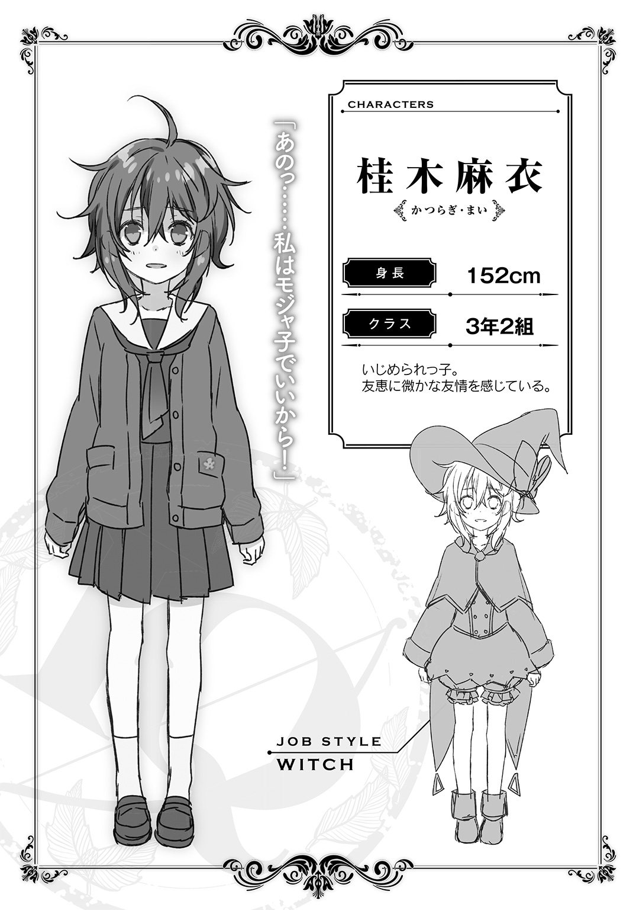
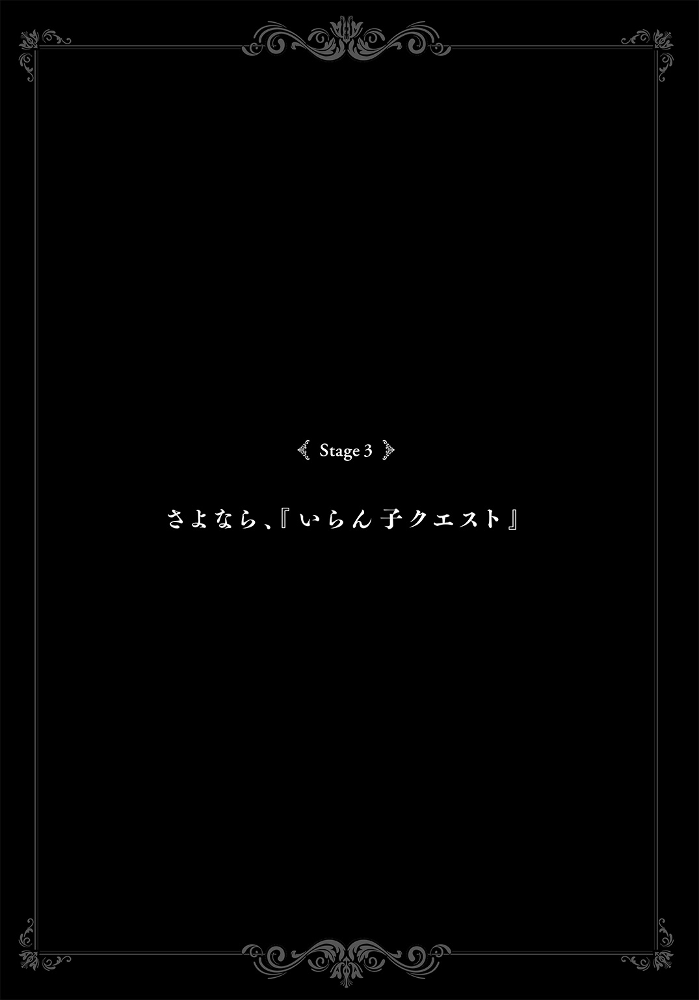

| いらん子クエスト 少女たちの異世界デスゲーム | |
| 兎月竜之介 | |
この本は縦書きでレイアウトされています。
また、ご覧になる機種により、表示の差が認められることがあります。
IRANKO QUEST
Contents
 ダッシュエックス文庫DIGITAL
ダッシュエックス文庫DIGITAL
いらん子クエスト
少女たちの異世界デスゲーム
兎月竜之介

狩屋友恵の朝は無言の起床から始まる。
彼女はベッドから起きあがると、寝間着から学校指定の制服に着替えた。まだ肌寒い季節なので、その上にカーディガンを羽織る。濃紺のセーラー服は女子生徒から、ダサいとか古くさいとか言われているが、友恵は別にそんなこと思わない。服は着られるだけで十分だ。デザインの良し悪しにも興味はない。
スタンドミラーの前で身だしなみを整える。
鏡に映っているのは校則をキッチリと守った自分の姿だ。前髪は眉毛まで、後ろ髪は肩までと校則で決まっている。癖毛なので毛先が少しだけくるっと丸まっていた。クラスメイトたちは手入れをしているらしいが、元々薄いこともあって眉毛を整えたことはない。そして、顔にはお面のように無表情が貼り付いていた。
確認を終えて振り返ると、そこにはがらんとした空間が広がっている。
友恵の自室には基本的にものがない。勉強机、本棚、クローゼット......それだけだ。教科書とノートは勉強机の棚で整理できるため、本棚の中は空っぽである。私服を持ってないからクローゼットの中もスカスカだ。
モデルルームみたいだな......。
友恵はそんなことを考えながら学校指定のカバンを背負った。
そして、二階の自室から階下に向かおうとしたときである。
向かい側の部屋――夫婦の寝室のドアが少しだけ空いていた。
ドアの隙間から見えたのは化粧に勤しむ叔母の姿である。清楚なレディーススーツを着ているが、柄物のストッキングだけがやけに艶めかしく見えた。それもそのはずで、彼女は婦人会の集まりだと言っているが、実際は愛人のところに向かうのである。叔母自身、家族に気づかれているのは承知の上だ。
友恵が階下のリビングルームにやってくると、そこではスーツ姿の叔父がテーブルでトーストを囓っていた。叔母とは釣り合わなそうな活力のない中年男性である。叔父はこちらを一瞬だけ見て、それから気まずそうに視線をテレビに戻した。
何を考えているのか相変わらず分からない。あるいは何も考えてないのか......。
朝の挨拶をすることもなく、友恵もさっさと朝食を済ませることにする。
『杉林市で起こったペットを傷つける事件が今年に入って三件目に――』
テレビから聞こえてきたのは、友恵の街で起こった事件のニュースだ。
でも、叔父は一切の反応を示さず、無言でトーストを不味そうに囓っている。
家族間で必要以上の会話をしないこと。
それが友恵と叔父夫妻の間で交わされた約束の一つだった。
朝食を済ませたら、食器を片づけて、それからカバンを背負って自宅から出る。
自宅？
友恵は玄関先で振り返って、自分が生活している一戸建て住宅を見上げた。
私の居場所はここじゃない。
ここは叔父と叔母の家であって、私は押しつけられただけの邪魔な居候だ。
それでも、ここで生きる以外の選択肢はない。
狩屋友恵、十五歳の中学三年生はこうして毎日登校していた。
×
友恵の父親は根っからの遊び人だったらしく、飲食店経営に手を出したあとも、女遊びで大量の借金を作っていた。経営が傾き始めたと見るやいなや、母親は夫を見限って不倫相手と失踪してしまい、父親も借金取りに追われて姿をくらました。
残されたのが莫大な借金と当時五歳だった友恵である。
連帯保証人は父親の弟、つまりは叔父だ。
叔父夫妻は子供を作らないと宣言しており、そのせいで親戚一同から浮いていた。結果、叔父夫妻は借金を肩代わりするだけではなく、友恵までも預かることになったのである。それ以来、叔父は叔母に頭が上がらない。
預かった子供は育てるが、会話は最小限、基本的にいないものとして扱うこと。
それが叔母の提示した家族のルールなのだった。
×
友恵が通っているのは北関東の地方都市、杉林市にある公立の中学校だ。
ゴールデンウィークが迫っているからか、三年一組の教室は朝から妙に浮かれている。受験を控えているとは思えないほど緩い雰囲気だ。空は灰色の雲に覆われて、冬に逆戻りしたような寒さであるが、そんなものは軽く吹き飛ばすような陽気さがある。
友恵はその中で一人だけ自分の席で押し黙っていた。
たまに背筋がぶるっとする。
そういうときは大抵、同じ小学校出身の生徒から見られているときだ。彼らには家庭事情を知られている。友恵の両親がどんな人間で、友恵がどうして叔父夫妻の家に預けられているのか。そんな事細かなことを家族や知り合いから聞かされているのだ。
無視するしかない。
友恵は自分の席で、机に付いた傷を眺める。
ふわふわした声が聞こえてきたのはそのときだ。
「姫の髪、触らせてよぉ！ わあ、もっふもふだぁ！」
「え、えへへ......なんかくすぐったい」
「姫様の髪に触れるとはなんたる幸福！ ありがたや、ありがたや......」
友恵は反応して顔を上げる。
数人の生徒たちが集まって、一人の生徒をこぞって可愛がっていた。
可愛がられている生徒、鷺沢姫子は言うなればクラスのアイドル......というかマスコット的な存在である。髪色は明るく、綿菓子のように軽やか。後頭部の大きな赤いリボンは彼女のトレードマークだ。肌は色白。友達にからかわれているだけで頰が真っ赤になる。姫子という名前にバッチリの愛らしさだ。
それに比べて私は、と友恵は落胆する。
友達に恵まれるようにという意味を込めて友恵と名付けられたらしいが、家庭事情が同級生たちに知られてから、友達なんて一人もできたことがない。中学生になってからもできることはなかった。
だからこそ、友恵は姫子のことがうらやましかった。
そこにいるだけで友達から好かれたり守られたり――
「あっ......」
姫子と目が合って、彼女が小さく声を漏らした。
それから、少しだけ恥ずかしそうに微笑みかけてくる。
友恵は視線を逸らして、姫子の笑顔など見なかったことにした。
同じ教室に登校していても、自分と彼女は生きている世界が違うのだ。
「姫、どうしたの？ 変なところ見たりして」
「あはは、姫には妖精さんが見えてたんだよ！ そうだよね？」
「ち、ちがうよぉ......」
姫子が顔を真っ赤にして否定する。
生徒たちはそれから「姫は今日も可愛いなあ！」と盛り上がるのだった。
授業を終えて放課後。
友恵は図書室の隅のテーブルで暇を潰していた。
読書が好きなわけではない。叔父夫妻から部活を禁止されているため、図書室で宿題を済ませるくらいしかすることがないのだ。宿題が終わってしまったら、あとは吹奏楽部の演奏でも聞いているしかない。
下校時刻を知らせるアナウンスが流れたので、友恵は荷物をまとめて下校することにした。図書室にはいつまでもいられない。食事中ですら会話のないあの家に帰ることは、まるで自分から牢屋に入りに行くような気分だ。
強烈な西日が差し込み、廊下はまばゆい橙色に染まっている。
友恵はふと気になって、屋内消火栓の前で立ち止まった。
消火栓には張り紙が貼られていて、そこには『学校の設備にイタズラするのはやめましょう！』と印字されている。最近、校内の設備が荒らされている事件が多発して、全校集会が臨時で開かれるほど問題視されていた。
「あれは......」
立ち止まっていた友恵は目を細める。
廊下を進んだ先、昇降口から出て行こうとする女子生徒の姿が見えた。
校則違反になるほどスカートが短くて、サイドテールを垂らしていて――
べしゃっ べしゃっ
不意に近くの曲がり角、階段がある方から異様な音が聞こえてくる。
すると、廊下の角から見知った女子生徒が姿を現した。
背丈は平均程度の友恵よりもやや低いくらいか。まるで爆発したようなモジャモジャの天然パーマが特徴的だ。眉毛がやけに太く、見るからに気弱そうな垂れ目をしている。今時、滅多にないくらいにスカート丈が長かった。
友恵と同じ小学校出身の少女、桂木麻衣。
彼女は頭のてっぺんからつま先までずぶ濡れになっている。濡れた足跡が中二階の女子トイレに続いていた。ブラウスのボタンが千切れているところからして、そこで麻衣が何をされていたのかは明白だ。
嫌悪感が胸の奥から込み上げてくる。
だが、友恵はそれを表情には出さない。
「友恵ちゃん......」
麻衣がこちらに気づいて、ぎこちない笑顔を浮かべた。
指先で突いたら今にも泣き出してしまいそうに見える。
「ご、ごめんね......こんなところ見せて、はは......」
「別に......気にしないです」
友恵は思わず視線を逸らした。
それにもかかわらず、麻衣が嬉しそうに頰を緩めている。
「友恵ちゃんはいつも優しいよね」
「......優しくなんかないです」
「私、友恵ちゃんのこと......あっ......」
会話を途中で打ち切って、友恵はその場から足早に立ち去った。
これ以上、麻衣の話を聞いていられない。
彼女がいじめられているのを傍観している私が優しいだって？
そんなはずないことは麻衣が一番理解しているはずなのに......。
友恵は鬱々とした気分で自宅まで帰ってきた。
太陽はとっくに沈み、寂れた地方都市は夜の闇に包まれている。空には暗雲が立ちこめ、月や星を見ることはできない。離ればなれになっている外灯だけが帰り道を照らしてくれる。空気は肌寒くて、吐いた息が白くなるとさえ思えた。
今日も何もない一日だった、と嘆息する。
家庭にも学校にも友恵の居場所はない。友達もいない。徹底的に空気になって、誰とも関わらないようにする。自分の家庭事情を誰が知っているか分からない。相手が何を言ってくるか分からないし、たとえ言ってこなくても、全てを知りながら心の中で笑っているのかもしれない。考えるほどに怖くなってくる。
誰かと仲良くなることも、誰かを受け入れることもできない。かといって、楽しみにしていることも何もない。傷つけられることに怯えて空気に徹しているだけだ。それじゃあ存在する意味なんてない。誰にも必要とされていない......いらない子だ。
友恵は自嘲する。
それくらいでしか笑うことができない。
「......あれ？」
自宅の異変に気づいたのはそのときのことだ。
誰もいないはずのリビングが明るくなっている。借金苦の叔父が仕事を早めに切り上げてくるはずがない。叔母は今頃、不倫相手と食事でもしているはずだ。でも、一番不思議だったのはリビングから楽しそうな話し声が聞こえてくることだった。
玄関のドアは鍵が開いていた。
空き巣が楽しく談笑している......わけないか。
聞こえてくるのは叔父と叔母の声。
それから、聞いたことがあるような......ないような不思議な声が一つ混ざっていた。
友恵は無言で玄関をあがって、それからリビングを覗き込む。
瞬間、背筋が凍り付いた。
リビング中央のテーブルを囲み、三人の人物が明るくおしゃべりをしている。
くたびれたスーツ姿の叔父。
厚化粧で色気を振りまいている叔母。
最後に......そこには自分と同じ顔をした何者かの姿もあった。
「三年生のクラスはどうだ？ 受験勉強には身が入りそうか？」
「まあ、あなたってば！ 最初はお友達のことなんかを聞くものですよ」
「友達も当然増えたよ。あと担任の先生もいい感じで、受験のことも任せろって！」
目前で繰り広げられる家族の団欒。
そこにあるのは友恵が一度も見たことがない笑顔だ。
叔父も、叔母も、そして自分と同じ顔をした何者かも、本当にキラキラしている。
「ひっ......はっ......」
友恵は言葉を失った。声が出なかった。
肩ひもがズレて、学校指定のカバンが床に落ちる。
それがドサッと音を立てても、リビングルームの三人は気づかなかった。
まるで自分の方が間違っていて、存在を認めてもらえないような――
「ようこそ、いらん子クエストの世界に......」
不意に背後から金属的な声が聞こえてくる。
友恵はビクッとして振り返って、それからさらに驚かされた。
先ほどまで誰もいなかった場所に巨大な西洋甲冑が立っていたのである。
西洋甲冑は高さが三メートルほどで、鉄仮面を被った頭頂部が天井をこすりそうだ。鉄仮面から全身鎧までがコールタールを塗られたかのように真っ黒である。薄暗い廊下の真ん中で、真っ黒なシルエットがむしろハッキリと浮いて見えた。
鉄仮面の奥で赤い瞳が爛々と輝いている。
金属鎧の腕がしなやかに動き、巨大な手が友恵の顔を覆い隠した。
直後、彼女の意識が途切れる。
けれども、友恵にはそいつが確かに嗤っているように見えていた。
×
意識を取り戻したとき、友恵の体は空中に放り出されていた。
地面がすぐ目の前にあって、そのまま右肩から叩きつけられる。
衝撃で仰向けに倒れるが......不思議と痛みは感じなかった。
とっさに右肩に手をやると、地面の黒土がカーディガンにべったりと付着していた。
「な、なに......」
友恵は困惑しながらも起きあがる。
どんよりとした曇り空だが、明るさからして間違いなく昼間だ。足下は黒炭のように真っ黒な土で、ちょっとした庭のようになっている。友恵のいる場所から正面に向かって、黒土の道が真っ直ぐに伸びていた。
振り返ってみると、そこには石レンガで造られた一階建ての建物がある。所々が崩れている廃墟で、灰色の壁はツタに覆われて苔むしていた。ドアや窓があったとおぼしき場所は空洞になっている。
廃墟と前庭の周囲には、高さ二十メートルはありそうな広葉樹の森が広がっていた。樹木がかなりの密度で生えて、足下は茂みに覆われている。森の奥には外光が届いておらず、さながら夜のように暗くなっていた。
草木と土の匂いがする。
友恵は気持ちを落ち着かせようと、自分の身に起こったことを思い返した。
学校から自宅に帰ってきたら、そこでは自分と同じ顔の何者かが家族と団欒していた。それを見ていたら、巨大な西洋甲冑が背後に立っていて......気がついたら、自分は見知らぬ場所に放り出されていた。格好はセーラー服とカーディガンのままであるが、学校指定のカバンは見当たらない。カーディガンのポケットにはハンカチが残っていた。
誰かいないのか、と見回してみる。
自分は連れ去られて、山奥の廃墟にでも置き去りにされたのだろうか？ 大がかりで質の悪い冗談か？ 廃墟の前庭には自分以外の足跡も、車が走ったような跡もない。分からない。それとも、最初から全部夢の中なのか？
「――きゃっ!?」
不意に頭上から可愛らしい声が聞こえてくる。
友恵がとっさに見上げると、頭上数メートルに一人の女の子が浮いていた。
否、こちらに向かって落ちてきた。
とっさに逃げようと思ったが、少女の付けている真っ赤なリボンが目に止まる。あれは......と思っているうちに少女が落ちてきて、友恵はそのまま下敷きにされる形で彼女を受け止めていた。そして、尻餅をついたのに先ほどと同じく痛みを一切感じない。
「......狩屋さん？」
名前を呼ばれて、友恵はすぐに顔を上げる。
ふわふわとした軽やかな長髪、大きくて真っ赤なリボン、抜けるような白い肌。
そこにいたのは三年一組のマスコットこと鷺沢姫子だった。
「さっ――」
友恵はとっさに口を噤む。
鷺沢姫子がどうしてこんなところに!?
驚いているのは姫子も同じで、目を何度もパチパチさせている。
かと思いきや、彼女の頰がスッと赤くなった。
「あ、ありがとうございます！ 狩屋さん、痛かったですよね？」
姫子がすぐさま友恵の体から下りる。
それからハンカチを取り出すと、友恵の服に付いた土を払い始めた。
「あの......別に、ただ下にいただけで......」
彼女から離れようとしても、姫子は夢中で汚れを払い続けている。
友恵がむずがゆい気持ちで待っていると、
「うわっ!?」
「くそっ！ なんだよ、ここは......」
今度は立て続けに複数人の少女が空中から落ちてきた。
その数......なんと五人である。
驚くことづくしで気持ちがついていかない。
友恵自身も含む、合計七人の少女たちは全員が第五中学校の制服を着ていた。それもカラーの刺繡の色から、全員が三年生であると分かる。格好に違いがあるとしたら、カーディガンを羽織っているかどうか......くらいだ。あからさまな共通点から、意図的に集められた予感がして不気味に思えてきた。
突然現れた少女の中には、あのいじめられっ子――桂木麻衣の姿もあった。
友恵がいることに気づいて、麻衣がにへらとぎこちない笑顔を見せる。
こんなところでまで顔を合わせることないのに......。
友恵が顔を背けていると、次の変化も唐突に起こった。
突如、毒ガスを思わせるような赤黒い霧が頭上に発生して、それが廃墟の前に集まり始めたのである。廃墟が見えなくなるほど霧が集まったかと思うと、その中から先ほど見たばかりの巨大な西洋甲冑が出現した。
友恵たちは口を開けっぱなしにして、霧が晴れるのを眺めているしかない。
だが、あっけにとられている少女の中で、すぐさま声を荒げたのが一人いた。
「て、てめえが私らをここに連れてきたのか!? どこなんだよ、ここは!!」
友恵は彼女に見覚えがあった。
背丈は友恵よりも少し高いくらい。微かに明るく染めた髪をサイドテールにして垂らしている。使っている髪ゴムが妙に子供っぽいデザインで、プラスチック製の花が非常に安っぽく感じられた。目はパッチリとした二重だが、明らかに作った感じが見て取れる。制服のスカートは際どいくらいに短く加工されており、可愛さよりも柄の悪さを感じさせる。
二年生のときに同じクラスだった子だ。
名前は確か――
「おいおい、新手のゆるキャラか？ 造形の作り込みはなかなかのものだが」
友恵の思考を邪魔するかのように二人目が発言する。
二人目の発言者は小学生のように小柄だが、先ほどの発言からも分かるようにやけに落ち着いていた。髪を大きなポニーテールにして垂らしており、それから丸いフレームの眼鏡を掛けている。顔立ちは幼いが、表情は大人びており、中学生らしからぬ落ち着きがあった。彼女だけまともに着地できたのか制服が汚れていない。
友恵は彼女にも見覚えがあった。
直接の面識はない。
でも、確かテレビか何かで......いや、思い出せない。
残りの二人はどんな子だろうか、と友恵は視線を向ける。
一人は黒髪で片目を隠した長身の少女、もう一人は健康的なショートカットの少女だ。
友恵には二人とも見覚えがなかった。
どこかで会っているかもしれないが、少なくとも同じクラスになったことはない。
そんなことを考えていると、
ガシャッ ガシャガシャッ
西洋甲冑が突然震え始めて、それから鉄仮面の奥の瞳が赤く光り輝いた。
眼鏡の少女を除いて、全員が西洋甲冑から距離を取る。
本当は逃げ出したいのだが、背中を向ける方がもっと怖い気がした。
「人間のメスガキ共のみなさん、いらん子クエストの世界にようこそ」
西洋甲冑から声が聞こえてくる。
低くて落ち着いた男性の声が金属鎧の内側で響いていた。
声だけなら聞き苦しくないのだが、突然の暴言にはギョッとさせられる。
「おっ、毒舌キャラ気取りか？」
眼鏡の少女は相変わらず平然としていた。
友恵には彼女の軽口を叩ける神経が理解できない。目前に存在する西洋甲冑が何者なのか見当も付かないのだ。中に人間が入っているのか？ それともロボットか？ 幽霊か？ ただ一つ分かるのは、相手が常識外の存在ということである。
「や、やった......あははっ！」
唐突に裏返り気味の笑い声が聞こえてくる。
笑っているのは長身の少女だ。
彼女は友恵たちの中でも頭一つ抜けて背が高い。猫背なので正確なところは分かりにくいが一七〇センチ以上はある。腰の辺りまで伸ばした黒髪は綺麗だが、前髪が顔の半分を覆っているせいでむしろ不気味に見えた。目つきはじっとりとしており、目元から鼻の頭にかけてそばかすがある。制服のサイズが小さいせいで、上着の袖がつんつるてんになっていた。
長身の少女が舞台女優のように両手を広げる。
「私、やっと異世界に召喚されたんですね！ そうなんですよね、黒騎士様！ お姉様も誘われたというヴァルハラガルドの世界に......ついに！ 私、ユーキ・フォン・アイゼンベルグはあなた様の召喚に快く応じ――ぎゃぁっ!?」
異世界？ ヴァルハラガルド？
友恵には意味の分からない単語が次々と飛び出してきたが、それはともかくとして、長身の少女がいきなり顔面から地面に倒れ込んだ。柄の悪い少女が突然、長身の少女を後ろから蹴り飛ばしたのである。
「そういう演技が一番きめぇから。黙っとけよ、電波女」
「え、演技なんかじゃない！ 私は異世界に召喚された勇者で――」
長身の少女は反論するが、先ほどに比べて明らかに精彩を欠いている。
すると眼鏡の少女が問いかけた。
「ヴァルハラガルドってネトゲだろ？ 夜中にＣＭやってるぞ」
「え、あ、いや、その......ゲームと同じ名前の......」
「その辺はもっと設定を練らなくちゃ駄目だって」
地面にぺたんこ座りをしたまま、長身の少女がモジモジし始める。
さっきまでの勢いは完全に失われて、気まずそうに視線を右往左往させていた。
これでは単なる恥の晒し上げである。
「あなた、どういうつもりなの!?」
今度は短髪の少女が前に出てきた。
彼女からはボーイッシュでスポーティーな印象を受ける。背丈は長身の少女に次いで高く、スパッツを穿いた両足はキュッと引き締まっていた。ショートカットにした前髪をピンで留めている。小顔でパッチリとした猫目が愛らしいが、どこか弱々しさが感じられた。
「後ろから突然蹴ったりして......自分のやってること分かってる!?」
「は？ お前、あいつのなに？ 友達？」
柄の悪い少女はうざったそうにするだけで怯む様子がない。
むしろ怯んだのは聞き返されたボーイッシュな少女の方だ。
彼女はチラッと座り込んでいる長身の少女を見やる。
「と、友達じゃない......」
「はぁ？ 単なるでしゃばりとか、マジ死んで欲しいんだけど？」
柄の悪い少女に睨み付けられて、ボーイッシュな少女がおずおずと引っ込む。
長身の少女も這うようにして逃げ出した。
ボソッと小声で呟く。
「......ＤＱＮクソビッチ」
「聞こえてんだよっ！」
柄の悪い少女が怒鳴りつけながら、再び長身の少女を後ろから蹴り飛ばした。
おそらく痛みはないのだろうが、どうにも痛々しくて見ていられない。
「......こ、怖いね」
姫子がいつの間にか、友恵の袖を両手で握りしめていた。
友恵は彼女の言葉を無視する。
姫子から視線を逸らすと、今度はいじめられっ子の麻衣の姿が目に止まった。
麻衣は小さく縮こまりながら、こちらを不自然なほどチラチラと見ている。
なんだか気持ちの逃げ場がない。
「人間のメスガキ共のみなさんは大変元気でよろしい！」
西洋甲冑がまるで営業のサラリーマンのように揉み手をする。
「これだけ元気なら、いらん子クエストのクリアも夢ではありませんね！」
「はーあ、わけわからんな」
眼鏡の少女が呆れた様子でまたため息をついた。
「お前は何者だ？ どうして、私たちを連れ去った？ あとメスガキはやめろ」
「ハッハッハ！ 申し遅れましたな」
西洋甲冑が高笑いをして、それから胸に手を当てて一礼する。
「本来なら人間のメスガキ共――いらん子のみなさんに教える名などないのですが、確かに呼称がないと面倒ですね。それでしたら、先ほど口走られました『黒騎士』とでもお呼びください。親しみを込めて『黒騎士さん』とでも......」
友恵には苦笑いをする余裕もない。
少なくとも親しみを感じられそうな気はしなかった。
「......さて、みなさんをお連れした理由はただ一つ」
黒騎士がやっと説明を始める。
「みなさんには『いらん子クエスト』に参加していただきます。今日を含めて三日間、みなさんには冒険者のパーティーに扮して、凶悪な魔物たちと戦います。合計三回の『いらん子バトル』を生き残った方々は、そのまま元の世界にお帰りいただけますからご安心を......」
説明が右から左に抜けていくような感覚。
ボーイッシュな少女が動揺した様子で聞き返した。
「生き残るって......わ、私たち、死ぬようなことをやらせられるの？」
「そうです。最悪、死にます」
黒騎士が当たり前のように言い切る。
まだ言葉だけだから実感が湧かない。
でも、友恵の隣にいる姫子はぐすぐすと泣き出していた。
思い返してみると、理不尽で不可解なことが立て続けに起こっている。友恵だって怖くて怖くて仕方ない。だが、死ぬとか言われても反応に困る。そもそも、生きていて楽しいと思えたことなんて全然ないのだ。
「で、どうして私たちなんだ？ 納得する理由を教えてもらおうか」
眼鏡の少女が続けて質問する。
「よくぞ聞いてくれました！」
黒騎士が待ってましたとばかりに言った。
「私はとある高貴なお方、言うなれば『女王様』にお仕えしております。女王様は私たちの住まう世界を統べる全知全能なるお方。ですが、彼女の慈悲深さは自らの世界だけに留まりません。みなさんが生きている隣の世界のことも、女王様は心配していらっしゃいます」
余計なお世話だな、と眼鏡の少女。
確かにその通りであるが、友恵には彼女のように発言する度胸なんてない。
「女王様はおっしゃいました。生きる価値のない人間が多すぎると」
黒騎士は少し間を置いてから説明を続けた。
「生きる価値のない人間が......いらん子が多すぎるせいで、人類の繁栄が著しく滞っているのです。ならば、そういったいらん子たちを排除していき、その代わりとしている子を供給すれば良いのではないだろうか？ それが女王様のお考えなのです」
友恵の脳裏に自分と同じ顔をした何者かのことが思い浮かぶ。
あれが黒騎士の言った『いる子』なのだろうか？
親子が楽しく笑顔を見せている......そんな家族のあるべき姿にあの子は溶け込んでいた。いらん子の自分には絶対にできないことだ。笑顔と会話のある家族と、それが全くない家族――どちらが良いものかは一目瞭然じゃないか。
「ば、バカなこと言ってんじゃねえよ！」
柄の悪い少女が声を張り上げた。
「生きる価値のないやつなんて大勢いるだろ！ 犯罪者とか......自殺未遂のやつとか！」
彼女はチラッと麻衣を一瞥する。
麻衣の方はいつものように冴えない愛想笑いを浮かべていた。
「女王様は聡明なお方でいらっしゃいます」
黒騎士の賛辞は止まらない。
「私にはいらん子の自覚があるものを優先的に連れてくるようにおっしゃいました」
その場が静まりかえる。
先ほど嚙みついた少女すら何も言わなかった。
みんな心当たりがあるの......かな？
友恵は聞くこともできずに説明の続きを待ち続けた。
「ですが、みなさんには最後のチャンスがあります」
黒騎士がピンと人差し指を立てる。
「それこそが『いらん子クエスト』なのです。どこにも居場所がなく、誰にも必要とされない、存在するだけで有害なみなさんが生きて帰るには、それこそ死ぬ気で頑張ってもらわなければいけません。生きる意思というやつを見せていただきたいところですね」
全員がまた何も言わなかった。
生きる意思なんてものがあるなら、きっとこんな場所に呼ばれてない。
死にたくはないし、痛いのも辛いのも嫌だけど、だからといって苦しみながら生きていく意欲もない。自分たちは自他共に認める『いらん子』なのだ。存在するだけで有害と言われても、感情的には逆らいたいが、心のどこかでは納得させられていた。
でも、凶悪な魔物と戦わされるって......どんな相手なのだろう？
ゲームなんてしたことがないので、友恵には全く想像がつかなかった。
「それではみなさんには自己紹介でもしてもらいましょうか。これから三日間、背中を預ける戦友同士なわけですからね。戦っているときにお互いの名前が分からないと不便ですよ？ 名前の確認を怠って、脱落していったいらん子を何人も見ています」
黒騎士に促されて、友恵たちはついお互いの顔をまじまじと見てしまう。
この人たちに背中を預けるの？
考えていることが全員同じなのは、不安そうな表情から明らかだ。
柄の悪い少女がチッと舌打ちをする。
友恵が経験してきたなかで、最悪の自己紹介の始まり方だった。
友恵たち一同はその場に集まる。七人の少女たちがぐるりと輪を描き、それを黒騎士が少し離れたところから見守っていた。全員制服姿なので野外オリエンテーリングの打ち合わせのように見えなくもない。
「......それじゃあ、順番で自己紹介しておこうよ」
最初に発言したのはボーイッシュな少女である。
それから、当然のように柄の悪い少女が食ってかかった。
「は？ お前がなんで仕切ってんだよ」
「そ、それは......私が剣道部の部長だからよ。まとめるのは慣れてるから」
ボーイッシュな少女は怯みながらも言葉を続ける。
剣道部の部長と言われて友恵は納得していた。
確かにスポーツをやってそうな引き締まった体つきをしている。
魔物と戦わされるわけだが......頼りになりそうだ。
「私は坂本真尋。三年四組。さっき言った通りに剣道部の部長をしてる」
ちょっと男の子みたいな名前だな、と思ったけど友恵は口に出さない。
ボーイッシュな彼女には似合っているが、それを私みたいなのが誉めてもなあ......。
最悪な場合、声をかけただけで相手にいらつかれることもある。
「......あ、お前が剣道部の坂本か！」
口を挟んだのはやはり柄の悪い少女だった。
彼女は急に笑い出して、愉快そうに手をパチパチと叩いている。
「な、なによ......」
「お前、部員全員からハブられてるんだろ？」
「なっ――」
真尋の目が大きく見開かれて、顔があっという間に青ざめる。
彼女は平静を保とうとするが、むしろ顔をこわばらせるだけだった。
部員たちから無視されている剣道部の部長、坂本真尋。
戦力としての期待から一転して不安だけが募る。
「頼りにしてるからな、部長。バトルからは逃げんなよ？」
「はーあ、次は隣の私でいいだろ？」
眼鏡の少女がうんざりとした顔で言った。
「私は万城目春。呼び方はハルで構わない」
「あっ！」
姫子が何かに気づいたようで目をパチパチさせる。
自己紹介が始まってから、彼女はどうにか泣きやんでいた。
「もしかして、テレビに出てた天才少女って......」
姫子の言葉を聞いて、友恵もやっと思い出す。
二年前、十二歳でアメリカの大学を卒業した天才少女が大きな話題になった。彼女は杉林市の出身で、それも友恵たちと同じ第五中学校に進学するというのだ。結局、件の天才少女が登校することは一度もなかったが、まさかこんなところで会うことになるとは......。
「あー、そんなこともあったなー」
天才少女の万城目春はとぼけた感じに空を見上げる。
この落ち着き具合は天才故のものなのだろうか？ でも、万城目春......ハルが自分をいらん子だと思っている理由が友恵には想像つかない。それとも、この飄々とした雰囲気自体が彼女の本心を隠す作戦だったりとか？
「それじゃあ、次は......」
「わ、わたひは鋼の勇者、ユーキ・フォン・アイゼンベルグ！」
ハルが順番を確認しようとした途端、長身の少女が食い気味で前に出た。
背中を蹴られて逃げ回ったせいか、彼女の長い髪がくしゃくしゃになっている。
怒鳴られたばかりなのに凄まじい胆力だ、と友恵は心の片隅で感心した。
相変わらず、何を言っているのか全然分からないけど......。
「小早川由希というのは仮の名前。その正体はユキカゼ姉妹の――ぎゃぁっ!?」
由希が悲鳴をあげて、唐突に尻餅をついた。
柄の悪い少女が握った拳を素早く振り上げたのだ。
彼女は薄ら笑いを浮かべながら、尻餅をついた由希を見下ろしている。
「ビビりすぎだろ！ うぜえだけだから引っ込んでろよ、電波女！」
「そ、そんな......わ、わたひは伝説の勇者ギルド・ユキカゼ姉妹の一員で......」
「知らねえよ、バーカ！ オタクとか、マジきめえ。消えろ」
「ひっ......」
自称勇者の小早川由希が早々に涙目になる。
友恵は質の悪い嫌がらせを見せられてうんざりしてきた。
ハルがそっと由希の肩を叩いた。
「私らも中三なんだから、中二発言は卒業しておかないとな？」
「う、あ......」
言い返せずに困惑する自称勇者の由希。
自己紹介の輪から這って逃げると、彼女はそのまま押し黙ってしまった。
あらら、とハルが肩をすくめる。
「......次は私か」
柄の悪い少女がめんどくさそうに言った。
「私は......佐藤だ。それでいいだろ」
「たっはっは、誤魔化すなってばよ。佐藤きららちゃん」
からからと笑っているハル。
柄の悪い少女が一瞬硬直したかと思うと、途端に激高してハルに詰め寄った。
「て、てめえ！ 学校来てねえくせして、どうしてそんなことっ――」
「生徒の名前くらい全部覚えてるってのさ。きららちゃん、可愛い名前じゃん。でも、苗字が佐藤なのに名前がきららって......ははは、考えた親の頭の中を覗いてみたいよ。どれくらいスカスカなのか、学者として興味あるなあ」
「私のママのこと、バカにしてんじゃねえよ!!」
「可愛い髪ゴムもママの趣味かな？」
佐藤改め、きららが猛烈な勢いでハルに摑みかかる。
胸ぐらを摑まれて、引っ張り上げられても、ハルは至って平然としていた。
「落下したときに分からなかった？ ここだと痛みを感じないし、怪我もしないみたいなんだけどね。それとも、きららちゃんはそんなことも分からないのかな？ これだから不良のみなさんは嫌なんだよ。たまに出かけるとガン飛ばしてきたりしてさあ......」
「くそっ、てめえ......」
不良少女の佐藤きららが悔しそうに歯ぎしりする。
とげとげしい空気を読まず、そこで黒騎士が口を挟んだ。
「仲間割れや自殺で人数が減らないように、ここでは痛みを感じず、怪我もしなくなるようにちょっとした細工をさせていただいております。もちろんですが、いらん子バトルの最中はその限りではないのであしからず」
「......そりゃあ、どうも」
ハルから手を放して、きららが舌打ちをする。
それから微妙な間。
沈黙に耐えられず......といった感じで、麻衣が恐る恐る自己紹介を始めた。
「あ、えと、私は――」
「てめえはモジャ子でいいだろ。普段からそう呼ばれてんだから」
きららが乱暴に自己紹介を遮る。
その態度を見過ごせないのか、剣道部の部長たる真尋が震えた声で呟いた。
「そ、そういう悪口みたいなのは駄目だと思うけど......」
「あのっ......私はモジャ子でいいから！」
麻衣がそう言いながら両手をモジモジさせている。
視線がせわしなく動き、途中でふと友恵を凝視した。
「あ、はは......友恵ちゃんも、私のことはモジャ子でいいからね？」
「は？ お前ら、友達なわけ？」
きららがいぶかしげに目を細める。
友恵は麻衣からも、きららからも視線を逸らした。
「別に......小学校が同じだけです」
桂木麻衣という少女と出会ったのは小学一年生のときであるが、だからといって、特に親しいわけでもない。まともな会話をした記憶もない。たまに麻衣の方から一方的に話しかけられても、無視し続けているだけ......そういう関係なのだ。
友達だなんて、そんなこと、口が裂けても言えない。
再び場が静まりかえる。
自分の番だと気づいて、友恵はそっぽを向いたまま言った。
「あの、ええと......私は狩屋友恵です」
「なんだ、お前かよ。借金があるんだろ？ モジャ子から聞いた」
友恵の心臓がズキッと痛む。
痛みなんて感じないはずなのに確かにその感覚があった。
それから全身がカァッと熱くなってくる。
小学生のうちに言われ慣れたことだ。今更気にするな。
友恵は気持ちを落ち着かせるため、自分自身に強く言い聞かせた。
「ご、ごめんなさいっ......えっと、あの、私......」
麻衣が今にも泣きそうな顔をする。
「別に気にしてないですから」
それを目の当たりにして、最初に浮かんだのは激しい怒りだった。
「それよりもきららちゃんさん？」
「てっ......ふざけた呼び方してんじゃねえぞ！」
本当は由希が蹴り飛ばされたときから......いや、ずっと前から思っていたことだ。何が自分の背中を押したのか、それは友恵自身にもよく分からない。ただ、現実離れした場所に連れてこられて、気が大きくなっているのは間違いなかった。
「......どうして、そんな他人の嫌がることばかりするんですか？」
友恵はきららに問いかける。
「これから死ぬかもしれないことをするのに......それじゃあ、助け合いできません」
「あー、それ言っちゃうかー」
きららが反応する間も与えず、ハルが緊張感のないことを言った。
「勝手に孤立して、自滅してくれるならそれでいいじゃん」
「あ、あなた、何言ってるの!?」
真尋が信じられないものを見るような目をハルに向ける。
そこには怒りも含まれていることが、彼女の小刻みに震える握り拳から分かった。
「自滅だなんて......それって死ぬかもしれないってことでしょ!?」
「まあまあ、部長さん。私に突っかかるなよ。勝手に自滅してるのはあいつだろ？」
「で、でも......」
納得できないが、反論もできない真尋。
正義感もほどほどにな、とハルが呟いた。
「関係ねえやつらがうるせーんだよ！ ......つーか、てめえだ！ 狩屋友恵！」
きららが再び友恵に詰め寄ってくる。
八重歯を剝き出しにして激怒する様は、見ていて背筋をビクビクさせられた。
どうしてこんなに暴力的な顔ができるんだ？ 相手を傷つけようと思えるんだ？
友恵にはそれが分からない。分からないことは怖い。
「調子ぶっこいてんじゃねえぞ。てめえ、マジで潰すから――」
「喧 嘩 は や め て く だ さ い っ !!」
突然、飛び上がりそうになるほどの大声が響いてくる。
友恵を含め、言い争っていたものたちが振り返った。
「私たちが喧嘩をして喜ぶのは黒騎士さんだけです！」
それを言ったのは、ほとんど黙っていた姫子である。
マスコット的な彼女がそんな大声を出せるとは誰も思わなかった。
友恵や真尋どころか、激高していたきららまでもがあっけにとられている。
姫子はその場の仲間たちに訴えた。
「黒騎士さんは私たちの命をなんとも思っていない......いいえ、それどころか死んだ方がいいとすら思ってます。いらん子クエストは参加者が全員死んじゃった方が成功なんです。喧嘩していたら、本当にそうなっちゃいます」
彼女は自分の胸に手を当てる。
それはまるで心の声を確かめているかのようだった。
「私、帰りたいです。何のためにって聞かれたら困るけど......でも、死ぬのは怖いです。誰かが死んじゃうところも見たくないです。消極的かもしれないけど、それが私の正直な気持ちです。だから、お願いです......もう喧嘩はしないでくださいっ！」
姫子が深々と頭を下げる。
彼女の長い髪が地面に垂れて、毛先が黒土で汚れてしまった。
友恵は気がつくと、先ほど姫子がしていたように、自分の胸に手を当てていた。
自分の正直な気持ちはどうだ？
姫子の言葉に聞き入っていたのは間違いない。自分も同じ気持ちだなんて、そんなできすぎたことは言えない。でも、姫子の指摘したことはもっともだし、それに死にたくないという気持ちは友恵にもあった。
不思議だ。
可愛くてちやほやされているだけの子だと思っていたのに......。
姫子がやっと頭を上げる。
注目されているせいか、彼女は照れたような笑みを浮かべた。
「あ、えと、鷺沢姫子です......よろしくお願いします」
今度はぺこりと会釈する。
ともかく、彼女のおかげでこの場は収まった。
「自己紹介は済みましたね？」
黒騎士がガシャガシャと近寄ってくる。
「私を共通の敵に仕立て上げることで、論点をズラしたような発言がありましたが......まあ、みなさんがどう考えようと自由ですからね。ともあれ、いらん子バトルの会場に早速移動することにしましょうか」
そんな、心の準備が――
意見する間もなかった。
黒騎士が両手を叩いた瞬間、友恵たちの意識はフッと途切れていた。
×
体感では五秒にも満たない。
友恵たちが意識を取り戻すと、彼女らは木々に囲まれた広場に立っていた。
狩屋友恵、鷺沢姫子、桂木麻衣、佐藤きらら、万城目春、小早川由希、坂本真尋。
七人のいらん子が全員揃っている。
傍らには当然、黒騎士の姿もあった。
廃墟前と似たような雰囲気だが、まず周囲に生えているのが針葉樹だ。森の中は茂みになっているが、まばらながらも日光が差し込んでいる。空は晴天だ。足下はふかふかの腐葉土で、広場は二十五メートルのプールがすっぽり入りそうなくらいの広さである。
ただ、周囲が妙に静かなのは不気味だ。獣の鳴き声なんかが聞こえないのはホッとしたが、小鳥のさえずりすらも聞こえてこない。強い風が時折吹いて、針葉樹のトゲトゲしい葉っぱをガサガサと揺らすだけである。
「なんだよ、普通に移動させられるんじゃねーか......」
早々に不満を漏らすきらら。
友恵はその一方、密かに最後の希望を失っていた。
廃墟前に連れてこられたときは気が動転していた。それからずっと、夢でも見ているのかもしれない......そんな可能性を心のどこかで捨て切れていなかった。でも、さっきの瞬間移動のことはハッキリと覚えている。現実に起こったことだと冷静に判断できてしまうのだ。
急に緊張してくる。
自分はやっぱり神経が細いんだな、と思わずにいられない。
「それではバトルに先駆けて、私からいらん子のみなさんにプレゼントです！」
黒騎士が先ほどと同じように手を叩いた。
瞬間、肌に何かをボサッと被らされるような感触。
友恵がびっくりして自分の姿を確認すると、いつの間にか、学校指定のセーラー服から見慣れぬ格好に服装が替わっていた。素朴な木綿のシャツと柔らかな革のスカート。胸当ては革製だが、スカートとは違って固くて丈夫そうだ。足下も革製のブーツで、不思議なくらい履き慣れた感覚があった。
それだけではなく、彼女は気づかぬうちに左手で弓を握っていた。アーチェリーの弓や、弓道の弓ではなくて、全長一メートルほどで昔話の狩人が持っていそうな代物である。友恵は他にも腰に矢筒と短剣を提げていた。矢筒には白い矢羽根があしらわれた矢がぎっしりと詰められている。
『いらん子バトルでは毎回、参加者にランダムでジョブが割り振られます』
「うわっ!?」
頭の中に黒騎士の声が直接響いてくる。
スピーカーを体内に埋め込まれたような感じがして気持ち悪い。
『狩屋友恵さん。あなたの今回のジョブはハンターです。ハンターは弓矢の達人で、軽業も大得意。他のジョブにくらべて五感も鋭い。ですが、ジョブの特性を生かすも殺すもあなた次第ですから、せいぜい役立たずにならないように頑張ってください！』
「そ、そんなこと言われても!?」
私、弓矢なんて一度も使ったことなんか......。
友恵が周囲を見回すと、仲間たちも同じように着替えさせられていた。
どうやら、全員が頭の中に直接説明を聞かされていたらしい。
「ははっ......お前、露出狂かよ！」
きららが一人だけ大笑いしている。
彼女は立派な金属鎧を着込み、右手に槍、左手に大型の盾を装備していた。
かなり戦闘に向いているジョブなのは明らかである。
笑われているのは......案の定、いじめられっ子の麻衣だった。
彼女が身に付けているのはビキニ水着のような衣装である。申し訳程度にショールを羽織っているが、透けているせいで余計に卑猥だった。でも、そんな格好が麻衣に似合っているはずもなく、とにかく不憫で貧相に見えて仕方がない。
「み、見ないで......」
麻衣は膝を抱えて小さくなっている。
彼女も一応、腰から小振りな曲刀を提げていた。でも、気になるのは一緒に提げているタンバリンである。曲刀はともかくとして、楽器がバトルで役立ちそうには思えない。もしかしてハズレのジョブ？ そんなのアリなのだろうか？
「確認できましたね」
黒騎士が今度は普通に発声した。
「それでは時間無制限、どちらか全滅するまでの一本勝負......バトルスタートです！」
「え、ちょっと、待っ――」
相変わらず止めようとする暇も与えてくれない。
黒騎士はそれだけ言うと、西洋甲冑の中から赤黒い霧を吹き出して、その中に姿を消してしまった。霧が突風で吹き飛ばされると、そこにはもう誰もいない。仮装させられた七人の少女たちが残されているだけだ。
どうしたらいいのか分からず、友恵たちは不安そうに顔を見合わせる。
凶悪な魔物たちとバトル......そんなの本当にやるのか？
あぁ、今からでもいいから噓だと言って欲しい。
七人はとにもかくにも広場の中央に固まった。
「......ん？」
うつむいていた友恵が顔を上げる。
彼女らの前方、針葉樹の森の中から何か聞こえてきた。
「何か近づいてくる。走ってきてます」
柔らかな地面を駆け抜ける軽快な足音だ。
それも複数......まさか、魔物とやらがもうそんな近くに？
「ほ、ホントに!?」
すぐそばにいた姫子がおっかなびっくり聞いてくる。
彼女は前垂れのついた真っ白な祭服を着て、無骨な金属製のメイスを握りしめていた。
教会の神父を思わせる服装だが、持っている武器が物騒すぎる。
「何も聞こえねえぞ!?」
怒鳴ってくるきらら。
ハルがそれを聞いて、からからと笑った。
「おいおい、アホの子か？ それが黒騎士の言ってたジョブ特性なんだろ？」
あ、そうか......。
友恵もハルに言われてやっと気づいた。
これほど明確に聴力が鋭くなっているのなら、弓矢の技術はどうなってるんだろう？
仲間たちもいよいよ武器を構える。
広場と森の境目にある茂みが大きく揺れた。
直後、そこから見たこともない何かが飛び出してくる。
それはゼリー状の肉体を持った生物だった。大きさはサッカーボールほど。ギョロリとした二つの目玉と、ぽっかりと空いた口らしきものが見られる。体の色は綺麗な氷塊を思わせる水色で、意外と可愛くも見えるのだが、それを愛でている場合ではなかった。
甲高い鳴き声をあげながら、ゼリー状の魔物が襲いかかってくる。
瞬間、前に出たのはハルだった。
胸当て、肩当て、手甲、すね当て......彼女も頑丈そうな金属製の防具を身に纏っている。けれども、特に目を見張るのが両手で構えている武器だ。ハルの身の丈ほどもあろうかという大剣で、彼女はそれを軽々と振りかぶっている。
ゼリー状の魔物を縦に一刀両断。魔物はそのまま白い灰になった。
ハルが振り下ろした大剣は勢い余って地面に突き刺さる。
「思っていた以上に体が動くな」
彼女は大剣を引き抜いて、野球のバットのように肩に担いだ。
「私のジョブは『ウォリアー』だ。見た目通りの脳筋だな。本来の私とは対極だがね」
不満そうな口ぶりに反して、友恵にはハルが結構楽しんでいるように見える。
「冒険序盤の雑魚はスライムが鉄板！」
嬉しそうな声をあげたのはオタク少女の由希だ。
彼女はつばの広いとんがり帽子を被り、分厚いカーテンのような真っ黒のローブを羽織っている。手持ちの武器は腰ほどの高さがある木製の杖だ。いかにも怪しい呪文を唱えそうな見た目である。おまけに長身だから妙な迫力があるのだ。
由希は前髪で隠れていない方の目をキラキラさせていた。
「あぁ......ここはやっぱりヴァルハラガルドで間違いない！ 黒騎士様はあんなことを言ってたけど、実は本心じゃなくて男ツンデレ！ 私たちに厳しい試練を与えているけど、心の奥底では深く傷ついているっていう定番の――」
「ね、ねえ、しっかりしてよ！ 妄想なんかしてないで！」
真尋が慌てて由希の肩を揺さぶる。
彼女は暖かそうな毛皮のコートを着ていた。
背中に担いでいるのは熊でも撃てそうな長銃である。中世風の格好をしているものが多いなかで、それだけ妙に近代的である。だが、どうやら構造を見るに、引き金を引いたらすぐに撃てるものではないらしい。歴史の教科書に載っているマスケット銃というやつだろうか？
そんなことを考えていると、友恵の強化された聴力がさらなる足音を拾った。
「ま、また来ます！ それも大勢で！」
おそらく十匹近くはいる......が、それが分かってもどうすれば!?
友恵が戸惑っていると、ゼリー状の魔物――スライムが次々と飛びかかってくる。
頭数は予想通りに十匹。
作戦も陣形もないので、そのまま一同は乱戦に突入した。
「いたっ......くねえ？」
スライムの強烈な体当たりを喰らったのはきららである。
盾を構えることすらできなかったが、彼女は体当たりの直撃を受けても平然としていた。
それどころか、ぶつかってきたスライムの方が痛そうな顔をしている。
「これが『パラディン』のジョブ特性ってことか......なんだよ、楽勝じゃね？」
ダメージを受けないと分かって、きららが途端に嗜虐的な笑みを浮かべた。
右手の槍で容赦なくスライムを一突きにする。
残酷......。
魔物を殺さなくちゃいけないのは分かっている。
それでも、友恵はきららの行いから目を背けてしまった。
「わっ――」
途端、スライムが飛び跳ねながら友恵に向かって突っ込んでくる。
体当たり攻撃が胸を直撃して、彼女はひっくり返って地面を転がった。
それから、ガツンと側頭部に鋭い痛みが走る。
「い、たた......」
友恵は顔をしかめながら痛めた場所に手をやった。
ぬるりとした感触。
ぶつけたところは熱を持ち、彼女の手には血がべっとりと付着していた。
よくよく見てみると、柔らかそうな地面から一カ所だけ石が突き出ている。
運がない......いや、そんなことより戦わないと......。
冗談なんかじゃなくて本当に殺される！
スライムが軽快に飛び跳ねて、再び友恵に襲いかかってきた。
弓矢は駄目だ。もう目と鼻の先。間に合わない。
「うあああっ!!」
自分でもびっくりするくらいに大きな声が出た。
友恵はとっさに腰の短剣を抜いて、飛びついてきたスライムを切り払っていた。
スライムは軌道を逸らされて、友恵を飛び越えるようにして地面に叩きつけられる。
けれども傷が浅かったのか、そいつはまだ灰にならずに動いていた。
大丈夫だ。今度は距離がある。
友恵はその場で跳ね起きると、弓を構えて、素早く矢をつがえた。まるで輪ゴムを引っ張るかのように弦は簡単に引けた。双眼鏡を覗き込んでいるかの如く正確に狙いが定められる。亀裂の入ったスライムは少しずつ元通りになろうとしていた。
矢を放つ。
ヒュンッ！
風を切る音が聞こえたかと思うと、友恵の放った矢はスライムの体を貫通していた。
威力はあまりあるほどで、ゼリー状の肉体が水を撒くかのように飛び散った。
友恵は全身汗だくになっていることに気づく。
でも、今までに感じたことのないような高揚感があった。短剣で切り払ったのも、体のバネで跳ね起きたのも、スライムを一撃で仕留めたのも簡単だった。自転車に乗るとか、ボールを投げるとか、それくらいの感覚でやれたのだ。
ジョブ特性があれば戦えるかもしれない。
そう思えるだけの手応えがあった。
「我が怒り、我が憎しみ、我が嘆き、煉獄の炎となりてその身を焦がさん！」
不意に怪しげな詠唱が聞こえてくる。
友恵が振り返ってみると、
「炎の術式の一――ファイヤーボール!!」
由希の振りかぶった杖から、自動車のタイヤほどの大きさはある火球が発射された。
火の粉をまき散らしながら、火球はスライム二匹をまとめて焼却する。
地面には焦げた跡が残るだけで、白い灰すら燃やし尽くされていた。
火球を発射したときの熱風で、由希の羽織っている黒マントが翻っている。
「スライム系は火炎属性に弱いのが鉄板......ふふふ、所詮はゲーム！」
「お前のゲーム脳は素晴らしいが、さっきの痛い詠唱はやめてくれんか？」
ハルの漏らした苦言も、悦に入った由希には聞こえていない。
そんなハルの足下にはスライム数匹分の灰が散乱していた。
「こっちも片づいたよ！」
「や、やっつけましたぁ！」
真尋と姫子もスライムを倒し終わったようで報告してくれる。
姫子はメイスで殴り倒したようだが、真尋はなんと長銃を逆さまに握っていた。
どうやら、長銃のストック部分でスライムを殴り倒したらしい。
きららがそれを見ながらニヤニヤしてる。
「使い方、違くね？」
「こ、こっちの方が慣れてるんだから仕方ないじゃん！」
真尋は恥ずかしそうに逆さまに持った長銃を背中に隠した。
「私だって、剣とかそういう武器なら......」
「頭が固いのか柔軟なのか分からんな」
やれやれ、という感じのハル。
とにもかくにも、襲ってきたスライムの集団は片づけた。
これでバトルが終わりならいいけど......。
「つっ......」
気が抜けた途端、友恵の頭がズキズキと痛んできた。
傷口から流れ出た血が首筋まで垂れている。
仲間たちにあまり弱っているところを見せたくない。
友恵はそんなことを考えていたが、
「頭、ぶつけてましたよね？ 大丈夫ですか？」
姫子が心配そうな顔をして駆け寄ってきた。
当然、仲間たちの注目が二人に集まる。
出血するような怪我をしているのは友恵だけだった。
「別に......平気です。あとで手当てしますから」
「そんなこと言わないで、私に任せてください！」
姫子が空いている右手を友恵の頭の傷にかざした。
途端、彼女の手のひらが白く淡い光に包まれる。
光はほのかに暖かくて、日光浴をしているような気持ちよさがあった。
ほんの数秒で光が収まると、姫子はサッと手を引っ込める。
まさかと思って、友恵は傷があった場所を指で触ってみた。
「......治ってる！」
血が止まったとか、かさぶたができたとか、そんなことではない。
最初から怪我なんてしていなかったという感じに完治しているのだ。
「これが『プリースト』のジョブ特性です。怪我や毒の治療ができるとか」
「痛みも全然......」
友恵は言いかけて、やめる。
それから、すぐに口元を手で覆い隠した。
怪我を治してもらったことが素直に嬉しい。
でも、その気持ちを顔に出してしまうことが怖かった。
「良かったね、狩屋さん」
姫子はまるで自分のことのように怪我が治ったことを喜んでいる。
彼女の笑顔を見ていると胸が苦しくなるのだ。そんな明るい表情を向けられたことなんて、物心ついてからはほとんどなかった。姫子に対して感じる親しみにも、姫子が見せてくれる優しい気持ちにも、友恵は向き合うことができない。
逃げてばかりだったから......。
怖いものから逃げているうちに、優しさからも逃げるようになってしまった。
友恵がまごまごしていると、
「プリーストのジョブ特性、すごいね！」
真尋が浮かれた様子で姫子に話しかけていた。
「あ、でも、武器は剣じゃないのかぁ......」
「このメイス......でしたっけ？ 結構重くてしっかりした武器ですよ」
「もう少し長ければ嬉しいんだけどね」
真尋と姫子がそんな風に話し合っていると――
「つーかさあ、モジャ子。お前、何してた？」
きららがやけに大きな声で問いかけた。
その場にいる全員に聞こえるようにしたのが丸わかりである。
モジャ子こと桂木麻衣は少し離れた茂みの中から顔を出した。
彼女の顔は青ざめて、全身が小刻みに震えている。
「てめえ、マジでふざけんなよ？」
きららは茂みまで近づくと、乱暴に麻衣の髪を摑んだ。
そのまま、力任せに彼女を広場まで引きずってくる。
「い、いたっ......痛いよ！ や、めて......」
「は？ てめえが言える立場か？」
ゴミ袋でも捨てるかのように、きららが麻衣の体を放り投げた。
手についた麻衣の頭髪を嫌そうに摘んで捨てる。
友恵は絶句していた。
どうして、そんな仕打ちが仲間にできるんだ？
見ず知らずの相手でも、たとえ相当憎んでいるとしても、友恵には同じことをできそうにない。でも、こういう光景は何度も見ている。学校の休み時間でも、放課後でも、帰り道でも、常に誰かが痛めつけられている。そういうことを平気でやれる人間がいる。どうして、そんなやつらが普通の顔をして生きているんだ？
「や、やめ――」
「やめろって言うなら同罪だからな？」
きららが釘を刺すように言った。
麻衣は膝を抱えて丸まり、みんなに背を向けてぐすぐすと泣いている。
露出度の高い衣装を着ているせいで、瘦せた背中が土まみれになっていた。
「うちらが体を張って戦ってるとき、こいつは一人で安全なところに隠れてた。魔物の頭数も多かったのに助けにも来ない。クズだわ、マジで。こいつを擁護するようなら、そいつもやる気なしって見なすから」
「ご、ごめんなさっ......」
「謝って済む話じゃねーんだよ！」
きららが槍の持ち手で麻衣の胸をぐいっと押しやる。
麻衣は仰向けにひっくり返って、そのまま声を殺すように泣き続けた。
「ハル、てめえも文句ねえな？」
「......は？ 私か？」
ハルは地面に大剣を突き立て、それを肘掛け代わりに休んでいた。
「隠れてたんじゃあ、流石に擁護できないわな。黒騎士も脳内でジョブ特性を教えてくれてたし、スライムも一匹倒したときにそこまで強くないことが分かってたし......まあ、二日目のいらん子バトルで頑張ればいいんじゃないの？」
誰も麻衣に声を掛けない。
友恵も何を言えばいいのか、何を言えるのか分からなかった。
スライムと戦っていたときは怖かったし、頭を石にぶつけたときは本当に痛かった。大げさかも知れないけど、そこには死に対する恐怖が確かにあったのだ。もはや覚悟を決めるしかないのに、そこで逃げられてしまったら......とても困る。
「はーあ、幸先不安だな......ん？」
ハルが何かに気づいたのか、足下に積もった白い灰を覗き込む。
白い灰の山から、キラッと光るものが突き出ていた。
彼女がそれを拾おうとする寸前、
ガランガラン ガランガラン
友恵たちの頭上から、教会で鳴らされるような鐘の音が聞こえてきた。
×
意識が飛んだのはやはり数秒間のことである。
鐘の音に聞き入っているうちに、友恵たちは廃墟の前庭に連れ戻されていた。
終わった......のだろうか？
服装はジョブの衣装から、着慣れた学校指定のセーラー服に戻っている。戦いのあとに感じていた疲れ、呼吸の乱れ、発汗は何事もなかったかのように収まっていた。細かな擦り傷なども完全に治っている。
廃墟の前庭には見慣れない小瓶が一つ落ちていた。理科の授業で使う試験管を想像させる形とサイズである。小瓶は鮮やかな青色の液体で満たされて、コルクの栓で密閉されていた。白い灰の山から出てきたものだろうか？
「一日目の『いらん子バトル』、小賢しくも全員生還でクリアです！ 素晴らしい！」
黒騎士の釈然としない賛辞が聞こえてきた。
巨大な西洋甲冑は廃墟を背にして立っている。
はぁ......と、友恵たちは安堵のため息をついた。
紆余曲折はあったけれど、自分たちは魔物とのバトルを生き残ったのだ。肉体の疲れは消えてしまったが、精神的にはかなり疲弊している。足下が湿った黒土じゃなければ、このまま仰向けに寝転がりたいくらいだ。
大泣きしていた麻衣も、ホッとした様子で涙を袖で拭いている。
生き残るのが一番大事だ......それは何があっても変わらない。
そんなとき、黒騎士がその場の少女たちに告げた。
疑いようのないくらいに冷たい声で。
「それでは、一日目の『いらん子投票』に移りたいと思います」
帰還したと同時に引いていた汗が再び滲んでくる。
投票？ 戦いが終わったあとに？
どんな内容でも嫌だなぁ......と友恵は思った。
選ぶのも選ばれるのも苦痛でしかない。
学級代表を選ぶとき、学園祭の出し物を選ぶとき、班別で問題の解答を選ぶとき。投票形式であったり、挙手したりと形は異なるが、どれにも良い思い出はない。
案の定、他の少女たちも総じて嫌そうな顔をしていた。
普段の調子で呆れているのはハルだけだ。
「わざわざバトルと言ってたくらいだからな。そんなことだろうと思ってたよ。いらん子クエストは『バトル』と『投票』の二つから成り立つというわけだ。ただ......まさか、三つ目のイベントが残されてるとか言うなよ？」
「聞かれてしまいましたから答えますが、これ以上のイベントはございません！」
黒騎士が悪びれもせず言った。
真尋が「ず、ずるい......」と顔をしかめている。
でも、追及したところで「聞かなかった方が悪い」と言われるのは分かっていた。黒騎士には情報を開示する義務なんてない。必要なときになったら最低限の説明をするだけだ。それだけでも、黒騎士からすれば十分に優しいつもりに違いない。
「なんで投票なんてするんだよ、めんどくせーな」
きららが露骨に嫌そうな顔で舌打ちする。
「みなさんには無記名投票をしていただきます」
黒騎士は彼女を無視して説明に入った。
「誰がどこに投票したかは明かされませんが、得票数だけは公表させてもらいます。さて、その投票先ですが......みなさんには『いらん子バトルで最も役に立たなかった子』を選んでいただきます」
えげつない......。
友恵は苦々しい顔をせずにはいられなかった。
そんなの無記名でやっても、投票された人が傷つくだけじゃないか。誰が自分に投票したのか絶対に気になる。バトルで失敗していなくても、私怨で投票される可能性もある。そんな方法が公正公平であるわけがない。
「や、やめておきましょうよ、黒騎士様！ あはは......」
訴え出たのは由希だった。
「それじゃあ......あの、パーティーの士気が下がっちゃいますよ！ わ、私はヴァルハラガルドＲＰＧをやってたから分かるんですよ。パーティープレイの反省会で欠点の指摘合戦になっちゃって、最後にはパーティーが解散しちゃったりとか......」
彼女は今も一応、黒騎士を信奉しているように見せていたが、その演技が剝がれかけているのは友恵にも丸わかりである。声が震えているし笑顔もぎこちない。でも、何かに徹することで自分を保とうという気持ちは分からなくもない。友恵だって同じようなものだ。
黒騎士は由希のことも無視して説明を続ける。
「投票数は一人につき一票。今回は全員生還しましたが、バトルで出た死者や、すでに退場してしまった方に投票することはできません。それから、みなさんがどれだけ謙虚で卑屈だとしても、自分自身に投票するのは禁止させていただきますのであしからず」
言葉の選び方がいちいち気に障るが......今は気にしていられない。
全員が自分に投票するわけにはいかないか、と友恵は内心がっかりする。
やってることが完全に八百長だが、全員に一票ずつ投票すれば角が立たない。誰か裏切ればすぐに分かるのも利点だが......、例えば全員が順繰りに一票ずつ投票するというのは駄目なのだろうか？
案の定、ハルが質問してくれた。
「同率最下位が複数出たらどうする？」
「その場合、投票のやり直しや決選投票は行いません」
「あくまで同率は全員最下位って扱いか......それとも全員第一位か？」
「前向きですな。まあ、投票されないに越したことはないですよ」
黒騎士がピンと人差し指を立てる。
「それから、ナーバスなみなさんに朗報です。いらん子バトルにはＭＶＰならぬＭＩＰというものが存在します。モスト・いる子・プレイヤーの略称ですね。ＭＩＰに選ばれた方は、いらん子投票で投票されなくなります。ただ、その代わりに投票することもできなくなります。蚊帳の外でひとまずお休みください」
ＭＩＰ!!
友恵は思わず生唾を飲んだ。
きっと自分だけではあるまい。投票されないのもさることながら、投票をしなくていいのは非常に気楽だ。投票に対して責任を持たなくていいし、投票した相手から逆恨みされることもない。卑屈な考えだけども、何もしないでいるのが一番だ。
「さて、今回のＭＩＰは......万城目春さんです。おめでとうございます！」
黒騎士がガシャガシャとうるさい拍手をする。
姫子までつられてパチパチと拍手していた。
「いや、あの......私たちは投票されちゃうんだよ？」
「あっ！ そうだった......」
真尋にそう言われて、姫子がしゅんと落ち込んでしまった。
どれだけ素直なんだ、と流石の友恵も少し呆れる。
まあ、そこが姫子の良いところなのだが......。
友恵はハッとして自分の口元を手で押さえる。
こんなことを考えているなんて、姫子にも誰にも絶対教えられない。
「そういや、スライムは三匹くらい倒してたな......」
ハルの反応は非常に淡泊だ。
それでも、実際は彼女なりに喜んでいるのかもしれない。
「とりあえずは投票の様子を見させてもらうさ。あとはご自由にどうぞ」
「それでは議論タイム、スタートですな！ はい、ほら、話し合って！」
黒騎士が雑に急かしてくる。
そんなことを言われても、発言するのが怖くて何も言えない。最初に発言すると、そこに嚙みついてきたり、揚げ足を取ってきたりするやつがすぐに出てくる。下手にやり玉にあげられたくないなら黙っているしかない。
こういうとき、ハルが進行役をやってくれるならありがたいが......。
提案してみようかな？
友恵が頭の中をぐるぐるさせていると、
「そ、それじゃあ、みんなの意見を聞きたいんだけど......」
真尋が震え気味の声で言った。
前向きなのは良いことだけども、
「は？ まーた、てめえが仕切ろうとするのかよ。うんざりだわ」
予定調和のようにきららが嚙みついてきた。
こうなるだろうということは、きっと真尋自身だって分かっていたはずである。
「バケモンを銃でぶっ叩いてた程度の活躍で意見できると思ってるわけ？」
「た、確かに叩いてたけど......発言の機会は平等に与えられるべきで......」
「つーか、一番いらねーやつが誰かなんて最初から決まってるだろ」
きららにそう言われて、
「............」
友恵は無意識のうちに麻衣のことを見てしまった。
議論の輪から少し離れたところに彼女は立っている。
うつむいているので表情は見えないが、大粒の汗が彼女の頰からあごに伝っていた。
もはや全員の注目が麻衣に集まっている状態だ。
「モジャ子、てめえのことだよ!!」
「う、あっ......」
きららが麻衣の髪を摑み、彼女を前庭の中央に引きずり出した。
腰が抜けてしまったのか、あっけないくらい簡単に麻衣が腹這いに倒れる。
「てめえは一人だけ隠れてた。私たちが戦ってるのを横目で見ながらな！」
「ご、ごめんなさい......」
「謝ってどうにかなる話じゃねえって言ってんだろうが!!」
「えと、あ、あはは......」
黒土の地面に膝をついて座る麻衣。
彼女の愛想笑いを聞いて、きららが「笑ってんじゃねーよ！」とさらに怒鳴った。
麻衣が一人で隠れていたのは事実だ。全員がぶっつけ本番で戦わされていた。
でも、流石にこの扱いはあんまりだと友恵は思っている。
思ってはいるけれど、自分の口から言うことはできない。
麻衣を擁護して自分まで巻き込まれたくない。
最低な発想だけど、それが友恵の正直な気持ちだ。
廃墟のある空間では身の安全が保証されている。でも、心に掛かる負担が軽減されるわけじゃない。本当なら投票自体やりたくないくらいだ。
麻衣が自分を取り囲む少女たちを見回した。
彼女は迷子になった子犬のように不安そうな顔をしている。
でも、誰も救いの手を差し伸べない。差し伸べられない。
「あ、あの......私に投票していいから、ははは......」
麻衣が無理やりに笑顔を作る。
だが、彼女のかいている汗の量が尋常ではなかった。
「ねえ、あなたは......本当にそれでいいの？」
真尋が恐る恐る問いかける。
麻衣はうつむきながら小さくうなずいた。
「さ、佐藤さんの言った通りだから。それに......私のせいで空気悪くしちゃってる」
「......こ、これは勇者プレイ！」
由希が無理やりおどけた様子で言った。
けれども、そんなことで場の空気が明るくなるはずもない。
友恵たちはしらけた気持ちで聞いていた。
「オンラインＲＰＧではロールプレイングも醍醐味の一つ。でも、自己犠牲でヒーロー感を演出するなんて、そんなことはなかなかできることじゃないよね。あはは......すごいなあ、憧れちゃうなあ。まあ、本物の勇者である私には――」
「だったら、お前が代わりになるか？」
きららの提案が由希を背後から一突きにする。
由希は途端に元気をなくして、そのまま黙り込んでしまった。
それから、途端に誰も発言しなくなる。
姫子は友恵の隣にいて、自分の手をきつく握りしめていた。
悲鳴が漏れそうなのを必死に我慢しているようにも見える。
こんなときなのに友恵はかける言葉一つ思いつかない。
「つーわけで、全員一致でモジャ子ちゃんに投票でいいのか？」
ＭＩＰに選ばれたハルが痺れを切らしたように聞いてきた。
「私には手出しできないことだから、特に何も言わずにいたんだが......」
「あ、あの！」
麻衣が意を決したように顔を上げる。
彼女はぎこちない笑顔を友恵に向けてきた。
全員から注目されるせいで、顔を背けようにも背けられない。
何も言われていないうちから鼓動が早まってきた。
「友恵ちゃんも......私に投票してね」
「えっ？」
何を今更なことを......。
現状、それ以外の選択肢が出てくる余地はない。
「友恵ちゃんは私に優しくしてくれたから......」
「なっ――」
友恵は息をのむ。
この期に及んで、まだそんな暢気なことを!?
麻衣の笑顔は先ほどよりもわずかながら自然に見える。
「別に......私、優しくなんて......」
「優しかったよ」
麻衣は言い切った。
「私、小学生のときからこんな感じだったけど、友恵ちゃんだけは嫌なことをしてこなかったから......だから、その、私、それがすごく嬉しかった。え、へへ......ごめんね。私なんかに言われても気持ち悪いよね」
「そ、そんなっ......」
私が優しいなんて、そんなことあるはずがない。
友恵にはそれがよく分かる。
自分はもらわれっ子で、両親が借金で失踪していて、そのことでいじめられていた。それでもどうにか生きてこられたのは、麻衣がもっと苛烈ないじめを受けていたからだ。彼女に矛先が向いている間だけ、友恵は平穏を享受することができたのだ。
友恵はそれを分かっていながら、麻衣のことをずっと無視し続けてきた。理由は見当もつかなかったが、彼女から微かな好意を向けられていることも知っていた。それでもなお、巻き込まれるのが嫌で壁を作ってきたのだ。
それが優しいだって？
あり得ない......そんなことは絶対にあり得ない。
今だって投票をさっさと終わらせたいとしか思ってないのに......。
「同小だからって媚びてんじゃねーよ！」
きららが思い切り麻衣の横顔を踏みつける。
この場所では痛みを感じることはない。
それでも、麻衣の頰に黒土がべったりとついている様は痛ましかった。
「......桂木さんは私に投票してください」
「友恵ちゃん？」
麻衣がそのとき、どんな顔をしていたのか友恵は知らない。
結局、耐えきれずに顔を背けていたからだ。
「それが一番、波風立たないです」
麻衣の投票先が決まってしまえば、あとは何も揉めることはない。
これ以上、だらだら話し合っていても溝が深まるだけだ。
舌打ちが聞こえてくる。
「傷の舐め合いとかマジ萎えるわ......」
きららが苛立たしそうに頭を搔きながら、友恵と麻衣の二人を睨み付けていた。
「はい、終了！ これから投票タイムに入らせていただきます！」
黒騎士が明るく議論の終わりを告げる。
直後、友恵たちの目前に羽ペンと羊皮紙が出現した。
羊皮紙と羽ペンのセットはふわふわと空中に浮いている。
「道具は行き渡りましたね？」
黒騎士の問いかけに対して、ＭＩＰのハルを除いた全員が頷いた。
「投票用紙に書いた名前は他の人から見えないようになっています。手の動きを観察して、文字を読み取ろうとしても無理なのであしからず。それから自分に対する投票や、白票などのルール無視を行った場合は......まあ、分かりますよね？」
当然、そんなリスクの高いことはできない。
友恵は恐る恐る羽ペンを手に取る。
羽ペンの先端を羊皮紙につけると、そこにじわりと黒いインクが滲んだ。
手のひらが汗でべたついている。
当人が合意しているとはいえ、麻衣の名前は書きたくない。いっそのこと、他の人の名前を書いてしまおうか？ 例えば......佐藤きららとか。でも、麻衣に投票することで決まっているのだ。そんなことをしたらパーティーの和を乱すことになる。敵に回すことになるのは投票した相手だけとは限らない。
とにかく、今は、さっさと終わりにしよう......。
友恵は汗の滲む手で、羊皮紙に『桂木麻衣』と名前を書いた。
途端、羊皮紙と羽ペンがふわふわと黒騎士の元に飛んでいった。
どうやら、書き直すような機会は与えられないらしい。
友恵が最後の投票だったようで、
「狩屋友恵が一票、桂木麻衣が五票ですね」
黒騎士がすぐに結果を読み上げた。
ＭＩＰのハルを除いて、六人分の投票が予定通りに行われた。
「まあ、ほら、明日また頑張ろうよ。ね？」
真尋が不安そうにしている麻衣の背中をポンポンと叩いた。
麻衣は少しだけ気持ちが楽になったのか、顔についた土を手の甲で拭っている。
ひとまず投票自体は終わった。
気になるのは投票結果がどんな風に影響してくるかだが――
「それでは役立たずの処理を始めていきたいと思います」
黒騎士が右手を高らかに掲げる。
瞬間、その手の中に漆黒の直剣が出現した。
両刃で細身の刀身を持っていることから直剣と呼ぶ他ないが、黒騎士の掲げているそれは握りも含めると全長二メートル以上。友恵たちからすれば大剣の部類だ。黒騎士の西洋甲冑と同じ素材なのか、外光を反射しないべっとりとした黒色をしていた。
掲げられた直剣の影が麻衣に覆い被さる。
麻衣とハルを除いて、友恵たちは反射的にその場から逃げ出していた。黒騎士の巨体、大剣サイズの直剣......それを振り下ろしたらどうなるかは容易に想像できる。怪我はしないと言われていても、本能的に恐怖を感じずにはいられなかった。
「え、あ、あはは......」
麻衣はその場に立ち尽くしたまま動けない。
彼女の膝はガクガクと震えて、今にも腰を抜かしてしまいそうだった。
友恵はそんな麻衣のことを斜め後ろから見ている。
処理？ 処理ってなんのことだ？
右手で握っている直剣で何かするのか？
まさか、いや、そんな......。
「て、てめえ......どういうことだっ!?」
「処理って!? そ、そんなこと、一言も......」
きららと真尋の二人が黒騎士を問いつめる。
「聞かれませんでしたからな」
黒騎士が案の定、臆面もなく答えた。
「ですが、本来なら存在するべきではない......人類繁栄のために消えてしまうべきいらん子のあなたたちです。私から申し上げるまでもなく、投票を行った結果、どのような処分が下されるかは想像に難くなかったのではないでしょうか？」
「あ、あ......」
麻衣の足腰からカクンと力が抜ける。
寸前、彼女の足下から赤黒い霧が吹き上がった。
赤黒い霧はまるで羽虫の群れのように蠢き、麻衣の全身にまとわりついてくる。彼女の体はきつく締め上げられた。膝をつくことも許されず、吊り上げられるかのように無理やり立たされる。麻衣はつま先が地面をやっとこすっているような状態で呻いていた。
「な、なにを......す、するんですかっ......」
麻衣が掠れた声で聞いた。
黒騎士は直剣の柄を両手で握る。
「またまた分かってらっしゃるくせに！ 往生際が悪いですよ？」
「あ、いやっ......」
麻衣の視線が他の少女たちに向けられる。
彼女はもはや愛想笑いを保っていられなかった。あるのは恐怖と悲しみ。理不尽な現実を突きつけられて、わずかな安堵すらも奪われて、自分の力では立ってすらいられない。麻衣には何もない。助けを求めることしかできない。
でも、誰とも目が合わなかった。
友恵も顔を背けていた。
これから何が起こるのか分かる。分かるからこそ何もできない。歯を食いしばって見ないようにしている。黒騎士には逆らえない。武器もジョブもないのに戦えるわけがない。巻き添えを食らうのは御免だ。
だけど、それは麻衣を見捨てるということだ。最低だ。本当に最低のことだ。死にたい......いや、死にたくない。それは絶対に嫌だ。都合のいい考えなのは分かってる。どうにかなる方法はないのか？ あるわけがない。どうにもならない。
「あ、あの......なるべく、痛くしないで......」
それが麻衣の最後の言葉だった。
「役立たずのゴミにかける情けはございません!!」
黒騎士の直剣が真一文字に振り抜かれる。
友恵は身をかがめて、目をつむり、両耳を手で塞いだ。
それでもなお、女の子の声とは思えない耳をつんざくような悲鳴が聞こえてきた。
ボーリングの球が落ちるような重量感のある音。
少し遅れて、どさっと......おそらくは体の倒れる音。
誰も何も言わなかった。きっとまともに見ている人はいないのだ。
友恵の心臓が爆発しそうなほど高鳴っている。鼓動がうるさく感じられる。
どうなった？ どうなってしまった？
見たくはない......が、どこか見なければいけないようにも思える。自分たちの引き起こした結果を見届けなければと感じられる。投票から生じる責任が友恵に重くのしかかる。それとも......これは単なる悪趣味な好奇心か？
ぎこちなく呼吸を繰り返して、どうにか気持ちを落ち着かせる。
もしかしたら、生きているなんてことがあるかもしれない。
友恵は両耳から手を離し、ゆっくりと目を開けた。
「はーあ、見ちゃったよ。よせばいいのにさ」
聞こえてきたのはハルの声。
友恵がしゃがみ込んでいるすぐ目前だった。
目を開けたままの麻衣の首が転がっている。
光を失った彼女と目が合った。
生きていたころはあれほど避けていたのにもかかわらずだ。
「ひっ、あ、ああっ......」
そのときになって、友恵は妙な生暖かさにやっと気づいた。
友恵が羽織っている灰色のカーディガンに鮮血がべっとりと付着していた。
胸元を真っ赤に染めている血、血、血......。
背中をドンッと廃墟の壁にぶつける。
首の切断面から胴体に向かって、血の飛沫が点々と続いていた。
桂木麻衣は死んだ。
「私が......殺した」
それから、悲鳴が立て続けに聞こえてきた。
「うあっ......うわああっ！」
由希が腰を抜かして、どうにか這ってでも逃げ出そうとする。
だが、両手両足に力が入らず、結局そこから動けずにいた。
「ひ、ひどい......」
姫子が両手で顔を覆い、地面に力なく膝をついた。
「こんなことっ......どうして、そんなっ......」
青ざめた顔をして、真尋が喉の奥から声を振り絞る。
「ひ、人殺し！」
「ふっざけんなよ、てめえ！ 殺すとか......き、聞いてねえぞ！」
きららも怒鳴り散らすが、直前までの勢いはまるで感じられなかった。
首と胴体の切断面からは、溢れた血液が大きな血溜まりを作っている。
血液は赤黒く凝固して、麻衣の死から経過した時間を知らせていた。
「どうして、そんなにショックを受けたりしますかね？」
黒騎士が肩をすくめて、理解できないとばかりに首を横に振る。
「いらん子を自覚するみなさんが選んだ真のいらん子でございますよ？ そんな役立たずは処分してしまった方が、パーティーのためであり、さらには世の中のためでもあるわけじゃないですか。うろたえる必要性がどこにありましょうか？」
友恵にはもう何も分からない。
黒騎士の言葉が右から左に抜けていった。
「それはそれとして......ポチ、こちらにいらっしゃい」
黒騎士が森に向かって名前を呼ぶ。
すると茂みをガサガサとかき分けて、異様な形の生物が姿を現した。
確かに犬のように四本の脚で歩いているが、ライオンか熊ほどもあろうかという巨体だ。体毛は一切なく、皮膚はラテックスのように黒光りしていた。そして、頭部はまるで腸のようにぶにぶにした管状である。目や鼻や耳はどこにも確認できない。地面には三本のかぎ爪が食い込んでいる。
友恵は両手で自分の口を押さえた。
姫子、由希、真尋、きらら。
彼女たちも必死に息を殺している。
奇妙な化け物はのろのろと麻衣の死体に近寄った。
管状の頭部を大きく広げて、そのまま死体をゆっくりと丸飲みにする。管の内側にはサメのように細かな歯がびっしりと生えていた。飲み込まれた死体がおろし金にでもかけられたかのごとき音を立てる。化け物は胴体を飲み込み終えると、思い出したかのように残された頭部も一口で平らげてしまった。
命じられた仕事を終えると、化け物は茂みの中に帰っていった。
「あ、あぁ......」
友恵は言葉にならない声を漏らす。
麻衣の死体が食べられている間、何もすることができなかった。
「くそっ......なんなんだよ！ 死んだら化け物のエサかよ！」
きららは立ち尽くしうつむいている。
真正面から吠えかかる気力が残っていないのだ。
黒騎士がうんざりとした様子で言った。
「いらん子の中のいらん子でございますよ？ そんなものが何の役に立ちますかね。クソの役にも立たない......とも申しますでしょう。そりゃあ、犬の餌くらいにはなってもらわないと困りますよ。こちらとしては最大限の優しさのつもりなのですが......」
「だ、だからって、エサにするようなこと――」
「おいおい、きららちゃん。落ち着けよ」
ハルがいつもの調子で声を掛ける。
彼女は麻衣が処刑されるときも、死体が食べられるときも平然としていた。
それが友恵にはどうしても理解しがたい。
そんなのはまるで黒騎士みたいじゃないか。
「黒騎士が人間に見えるか？ 見えないだろ？ こいつのことは宇宙人かロボットとでも考えるべきだ。私たちと同じ価値観を求めるのがそもそもの間違いなんだよ。生死観だって当然異なる。死体の扱いだって雑にもなるさ」
「うるせえ、分かってたまるか！」
きららが八重歯を剝き出しにしてハルに摑みかかる。
「てめえは......てめえはどうしてそんな冷静なんだよ！」
「......まあ、私が普通じゃないのは自分でも分かってるよ」
ハルは胸ぐらを摑まれながら、マイペースに眼鏡をくいっと掛け直した。
「きららちゃんみたいにぎゃーぎゃー騒いでる方が、中学三年生の女の子としては正しい反応だわな。私は生まれつきこんな感じなんだよ。ただ、まあ、言わせてもらうなら、モジャ子ちゃんは......桂木麻衣はあんたらにとって他人も同然だろ？」
それにはきららも言い返せない。
ハルは彼女の手を軽く払った。
友恵や他の少女たちも反論できない。死んでしまったあとから、あの子は仲間だったなんて無責任なことを言えるはずがない。そんなことが言えるなら、どうして誰も彼女を守ろうとしなかった？ 彼女に投票することで合意した？
「それになあ、いらん子クエストを開いたのは黒騎士サイドなんだぞ？ 私たちは参加させられているだけだ。死刑囚が死刑になったとして、裁判官や死刑執行人が殺人の罪を背負ったりしないだろ。お前らが桂木麻衣の死に罪悪感を覚えてるとしたら、それは感傷的な気分に浸ることで気持ちよくなってるだけだからな」
「そ、そんなことっ！」
言ったのは姫子だ。
彼女は大粒の涙を浮かべながらもハルを真っ直ぐに見る。
けれども、すぐにハルから顔を背けた。
「......味方同士で言い争っても仕方ないですよね」
「あのー」
黒騎士が空気も読まずに呼びかける。
「感傷的になられても迷惑なだけなのですが......とりあえず『ドロップアイテム』を誰が保管するのか、サクッと決めてもらえないでしょうかね？ そこまで済ませておかないと、一日目の全行程を終わらせることができませんので」
「......あぁ、それか」
まともに反応したのはハルだけである。
青色の液体が入った小瓶は、バトル終了後に転送されたまま放置されていた。
「いらん子バトルで魔物を倒すと、たまにアイテムを落とすことがあります。それがドロップアイテムというわけでして、バトル終了後にここへ持ち帰ることができ、次のバトルから使えるようになります。二日目に使うか、三日目まで取っておくかは自由です」
「やっとゲーム性が出てきたな」
「今回のドロップアイテムは『エリクサー』ですな。誰でも使える回復アイテムで、飲めば一瞬で怪我、毒状態、疲労を回復できます。かなり貴重な逸品でございますが......誰も持ちたくないというのであれば破棄させていただきますが？」
黒騎士の問いかけに答えるものはいなかった。
エリクサーが重要なアイテムなのは分かるが、友恵も今はそれどころではない。
結局、ハルがやる気なさそうに挙手した。
「しゃーない、私が保管するか。他のやつらはそれどころじゃないからな」
「待てよ！ てめえばっか仕切るんじゃねえよ、ふざけんなよ！」
きららが再びハルに詰め寄る。
「そ、そうだって......ここは全員平等に権利が――」
そこに真尋までも続こうとして、
「便乗するんじゃねえよ、うっぜえな!!」
激高したきららに容赦なく体を突き飛ばされた。
真尋はそのまま廃墟の外壁に背中をぶつける。
外壁を覆っている植物のツタが乾いた音を立てた。
「ここはてめえがシカトされてる剣道部の代わりじゃねえんだよ！ あっちの失敗をこっちで取り戻そうとか迷惑にしかならねえからな！ てかさあ......お前、全然仕切りに向いてねえから。同級だけじゃなくて後輩にも舐められてる時点で気づいとけ、バーカ！」
「な、なんで......どうしてっ!?」
真尋がおぼつかない足取りできららに向かってくる。
彼女は必死の形相で、大粒の涙をぽろぽろとこぼし、鬼気迫るものがあった。
流石のきららも気圧されてしまい、後退した足で血溜まりを踏んでいた。
「ねえ、どうして!? どうして、普段は誰もリーダーなんてやりたがらないのに、私がリーダーになると文句ばっかり言ってくるの!? おかしいよ！ おかしいよね!? そんなのバカみたいじゃん！ それとも、私だけこんなにバカにされるの!? 私だけなの!?」
「知ら......ねえよ!!」
きららが再び真尋の体を突き飛ばした。
でも、真尋はその場に踏みとどまって動かない。
そんな彼女の肩をハルが軽くポンポンと叩いた。
「部長ちゃんはさあ......リーダーなんてやらない方が人生幸せだよ」
「わ、私だって、ひ、必要に迫られて、他にやる人がいないから......」
「気ままに剣道やってたらさ、自分のことをいらん子なんて思わなかったんじゃない？」
「ち、ちが......そんな、私は......」
真尋が膝からくずおれて、支えを求めて廃墟の外壁に手をついた。
友恵からは彼女の震える背中しか見えない。
弱々しくすすり泣く声だけが聞こえてくる。
「まあ、こんな感じで......精神的に一番安定してるのが私だな」
ハルがその場の少女たちに言った。
「そもそも、誰がドロップアイテムを管理するのかって話だ。私に使わせろなんてことは一言も言ってない。二日目のバトルまで保管しておいて、ジョブが新しく割り振られてから適役に譲るつもりだ。もしもドロップアイテムをなくすようなことがあったら、そのときは二日目の投票で私を処刑しろ」
「てめえ......聞いたからな？」
きららがギリギリと奥歯を嚙みしめている。
ハルはあくまで飄々とした態度を崩さず、エリクサーの小瓶を拾い上げた。
「たっはっは！ まーたＭＩＰに選ばれちゃったりしてな」
「それでは今度こそ一日目の行程を終了させていただきます」
黒騎士が若干食い気味に言った。
西洋甲冑の中から赤黒い霧が吹きだしてくる。
「それではみなさん、明日の昼頃にお会いしましょう！」
「おーい、食事とか風呂とかはどうするんだ？」
「......めんどくさ」
ハルの質問に答えず、最後に暴言を吐いて、黒騎士は霧の中に消えた。
突風が吹いて赤黒い霧が吹き飛ばされる。
一日目のいらん子投票は......こうして、やっと、終わった。
×
黒騎士が姿を消してから、友恵たちはしばらく何もしなかった。
正確には気持ちの整理に没頭していた。
いらん子投票で受けたショックから立ち直ることに専念する。どれだけキツい目に遭わされたとしても、そのまま立ち尽くしているわけにはいかない。死人が出たら慌しく葬式の準備を始めるように......。
気持ちの整理が終わると、全員で廃墟の中を確かめてみることにした。
前庭には血溜まりが残っていて、そばにいるだけで鬱々としてくる。
廃墟はいわゆる平屋の一軒家で、学校の教室を半分にしたくらいの広さだ。天井の一部には穴が空き、そこから植物のツタが垂れ下がっている。外壁と同じく石レンガで造られた床はほこりまみれだ。
暖炉と竈はあるが、薪や食料は見当たらない。部屋の中央にはテーブルが一つ、椅子が三つ置かれている。テーブルは六人で使うには狭く、そもそも椅子の数が足りていない。寝具の類は見当たらず、（出入り口を仮に南側と考えるなら）西側の窓際にほこりまみれの絨毯が敷いてあった。
「雑魚寝かよ......毛布一枚ねえしな」
きららが絨毯を踏みつけると、そこから大量のほこりが舞い上がった。
廃墟になってから、どれだけ放置されているのか......あるいは黒騎士が元から廃墟として作り上げたのか、その辺りはもはや見当がつかない。考えても仕方がない。とにかく、考える意欲を失わされるようなことばかりだ。
「廃墟の裏手には井戸があるみたいだな」
東側の窓枠から裏庭を眺めているハル。
彼女は頭を引っ込めて、スカートのポケットに両手を突っ込んだ。
「あとは......そうだな。呼び出されてから結構時間が経ってるが、喉も渇いていないし腹も減らない。痛みを感じないのと同じ理屈か？ 携帯電話は......まあ、そりゃあ圏外だろうな。電源はちゃんと入ったままか」
ハルが引っ張り出したスマートフォンをいじる。
彼女に続いて、きらら、由希、真尋も携帯電話をチェックし始めた。
友恵と姫子は手持ちぶさたに突っ立っている。
「あああ、スタバトの限定キャラ降臨イベントがぁ!!」
由希がスマートフォンを握りしめ、頭を抱えてしゃがみ込んだ。
彼女の口から飛び出してくる固有名詞が友恵には相変わらず理解できない。
「スタバトってＣＭでよく流れてる――」
話題に反応したのは泣きやんだばかりの真尋だった。
途端、由希がすくっと立ち上がったかと思うと、
「し、し、し、知ってるの!?」
期待に瞳を輝かせながら、猛烈な勢いで真尋に迫ってきた。
真尋がそのまま壁際まで追い込まれる。
由希は下手な男子よりも長身のため、近づかれるとかなり迫力があった。
「神魔融合スターライトバトラーズ！ 先週一千万ダウンロードを突破！ 今回はそれを記念して限定イベントやってるんだよ。私、専用パーティーを組んだんだよね。ルシフェル、ヨグ＝ソトース、妖刀村正の闇属性で統一した――」
「ま、ま、待って！ 分かんないよ！ 分かんないから！」
真尋はカニ歩きで由希と壁の間から逃れる。
それから、飾り気も何もないスマートフォンを見せた。
「私、そういうの本当に分からないから！ スマホだってお父さんから無理やり持たされたやつだから、そもそも使い方が分からないし、だからアプリだって全然入ってないし、電話もメールも全然やらないし......」
「面白いからやってみようよ。ね？ 招待コードだけでもいいから！」
由希が迫ってきて、真尋が逃げ回る。
そんな奇妙な鬼ごっこが繰り返された。
「キモッ......なんで、こんなやつらとチームなんだよ」
きららが今日何度目か分からない舌打ちをする。
「あ、つーか、もうチームなんかじゃねえのか。バトルで役に立たなかったら投票で蹴落とされるんだから......それって競争相手じゃん。敵じゃん。なんでそんなに馴れ合えるんだよ、マジでさ。頭おかしくね？」
それを言われて、やっと由希が大人しくなる。
由希はきららがいるところの対角線上に引っ込んで押し黙った。
急に解放されてしまって、今度は真尋の方がおろおろし始める。
ただ、誰もそれ以上はきららに反応しなかった。
ここには競争相手しかいないだなんて、そんなことはみんな分かってる。
わざわざ、それを強調して不安を煽って......だからなんだっていう話だ。
「どうした、きららちゃん？ おトイレか？」
廃墟から出て行こうとするきららをハルが呼び止める。
「うるせえ、関係ねえだろ」
きららは振り返らず、そのまま廃墟から外に出て行った。
かと思ったら、くるりと振り返って友恵を睨み付ける。
「おい、空気女。服、汚ねえから洗え。くせえぞ」
きららが出て行ってから数分後。
友恵も廃墟から出ると、裏手にある井戸のところに向かった。
廃墟と同様に井戸もかなり年季が入っている。石レンガの繫ぎ目には苔や雑草がまばらに生えていた。滑車から垂らされているロープを引くと、丸太で組み上げられた支柱がギシギシと音を立てる。
そのまま崩れないか心配だったが、どうにかロープを最後まで引き上げることができた。ロープが結ばれた桶には透き通った水がたっぷり汲まれている。改めて思えば、本物の井戸を使うのは初めての経験だった。
友恵は血塗れのカーディガンを脱ぎ、ポケットからハンカチを抜いた。
確かに濃い血の匂いがする。
砂鉄を鼻から吸い込んだような......でも、友恵はそれを臭いとは思わなかった。
カーディガンが血を吸っているため、幸いなことに制服の上着は無事だった。
友恵は水桶にカーディガンを浸して洗い始める。
桶にたまった水があっという間に麻衣の血で赤く濁った。
作業に没頭する。
ここにいると廃墟にいる少女たちの声も聞こえてこない。
一人になっていると......ハルの言葉が思い出された。
『それは感傷的な気分に浸ることで気持ちよくなってるだけだからな』
彼女の言った通りだ。
私は自分可愛さ故に何もしなかった。自分で麻衣のことを切り捨てておきながら、彼女が死んだことを悲しんだり後悔していたりする。でも、それは自分の心を傷つけないための偽物の感傷でしかない。悲劇のヒロイン、無実の被害者、事故の犠牲者になりきることで、麻衣を殺してしまった罪から逃れようとしている。
最低だ。
でも、そうと分かっていてもなお、友恵は思わずにいられない。
麻衣と少しくらい話しておけば、少しくらい優しくしてあげれば、何か変わっていたかもしれなかった。いじめの標的にされるのは怖いし、苦しいし、痛い。でも、それを二人で分かち合うことができれば......いや、私にそんな勇気はない。私は最低最悪、自分のことしか考えられない臆病者なのだ。
麻衣はせめて痛みを感じることなく死ねたのだろうか？
冷たい水に浸した手が止まる。
私は何を考えてるんだ！
苦しまなかったからって、人殺しが許されるはずはない。
それでも、切実に願ってしまうのだ。
自分が死ぬときはせめて楽に死ねますように......。
ガサッ
背後から物音が聞こえて、友恵はとっさに振り返る。
廃墟の陰に隠れて、由希がこちらを覗き込んでいた。
どうやら、摑んでいた植物のツルが千切れてしまったらしい。
「えっと......電波さん......」
友恵は作業を中断して立ち上がる。
「あ、いや、ごめんなさい......そんな呼び方、嫌ですよね」
「こ、小早川由希、です......へ、へへ......」
由希が不気味な笑みを浮かべながら近寄ってくる。
「小早川は戦国武将の小早川で......由希は、ええと......そう！ 従姉のお姉ちゃんが風香って名前で、ヴァルハラガルドだとユキカゼ姉妹ってギルドで活動していて......知らない？ 知ってる？ リアルＪＣ姉妹ギルドってことで一時期話題になって......」
「は、はぁ......」
相変わらず何を言っているのか分からなくて、友恵は困惑させられた。
こちらに近づいておきながら、由希は彼女のことをあまり見ようとしない。
二人は向き合ったまま、一分くらいはその場に突っ立っていた。
「と、友恵さんってさ......隠れオタクだよね？ 私、分かるよ」
由希が急に話を切り出す。
予想外の問いかけに友恵は面食らった。
「えっ、別に......違いますけど」
「か、隠さなくていいよ......」
由希は毛先を指でいじりながら見当違いなことを話し続ける。
「友恵さんは結構、図書館に来てるよね。私も毎日みたいに来てて、ラノベの入荷リクエストに書いたりとかしてるんだけど......ラノベとか読んでない？ ヴァルハラガルドもノベライズされてて、先月は貸し出しランキングの一位になってるんだけどね」
「ご、ごめんなさい......図書室で宿題してるだけだから」
友恵は正直に答える。
こんなところで適当に話を合わせたり、はぐらかしても仕方ない。
予想を完全に裏切られたせいか、由希が視線を右往左往させていた。
「漫画とかアニメとかは！ 見てるんじゃないの？ ねえ！」
「え、いや......漫画なんて一回も読んだことないです」
友恵が読んだことのある本なんて、教科書か推薦図書くらいだ。
「それにアニメも......あの、私、テレビ禁止されてますから」
「は、はぁ？」
由希が信じられないものを見るような目で友恵のことを見る。
「なにそれ、友恵さんだけテレビ禁止なの!?」
「そうですけど......」
友恵には絶対に構わない。
それが彼女を預かるうえで、叔父と叔母の二人が決めたルールだ。自分たちの時間を友恵には絶対裂かないように徹底してきた。それが娯楽番組を見せないことであり、お小遣いを与えないことであり、日常的な会話を交わさないことなのだった。
だから、クラスメイトの会話にも友恵は全くついていけなかった。流行のテレビ番組も、漫画も、ファッションも知らない。キーホルダー一つすら私物を持っていない。休日に家族と出かけたなんて話もできない。
本当に何もない。
友恵の中身はからっぽなのだ。
「......ど、どうしてそんな噓つくの？」
「う、噓なんか......」
友恵が正直に答えても、由希は信じてくれる様子がなかった。
それどころか、さらに疑り深く追及してくる。
「子供だけがテレビ禁止とか、そんな家......あるわけないじゃん！」
由希が力任せに友恵の両肩を摑んだ。
身長差のせいで押し倒されそうになる。
大きく見開かれた由希の目が恐ろしくて、友恵は反射的に彼女から目を背けた。
途端、肩を摑む力がさらに強くなる。
「わ、私と仲良くなるのがそんなに嫌？ あのエンコークソビッチよりはマシじゃん！ そ、それに......ほら、私はゲームやってるからバトルにも慣れてるよ。さ、さっきはびっくりしちゃったけど、グロ画像とかも全然平気だし！ な、仲良くなって損はないって！」
「ご、ごめんなさい......」
友恵は顔を背けたまま言った。
「私、今、あまり話したくなくて......」
「......分かった。そんなに私のことが嫌なんだ」
「そ、そうじゃなくて......」
「もういいよ！ 話して損した！」
由希は乱暴に友恵を突き飛ばすと、きびすを返して去っていった。
黒土の地面に尻餅をつき、友恵は彼女の背中を黙って見送る。
あとに残ったのは痛いくらいの静寂と自己嫌悪だ。
また、やってしまった。
由希は本当に仲良くしたくて話しかけてくれたのかもしれないのに......私は彼女の好意を無視して、裏切って、踏みにじってしまった。投票が行われるからには複数人で組むべき。そんな風に打算的な考えだったとしても、歩み寄ってもらえるだけありがたかった。
麻衣と仲良くなれないまま、彼女を死なせてしまったのに......。
私はまた同じ間違いを犯している。
こんなこと、どうかしている。
中身がからっぽのいらん子には無理な話なのだろうか。
鬱々とした気持ちを振り払うため、友恵は血を洗い流す作業に没頭した。
何度も桶の水を入れ替えて、やっと血の色が出なくなる。
友恵は井戸のそばに生えている木の枝にカーディガンを引っかけた。
空はどんよりとした雲に覆われていて、徐々に日も落ち始めているが、肌寒さは全く感じなかった。これも痛みを感じないとか、空腹や喉の渇きを感じないのと同じかもしれない。自分たちは生き死にの自由すら、黒騎士に奪われてしまっているのだ。
水に濡れたカーディガンが風になびいている。
それをただ眺めていると、背後から足音が聞こえてきた。
「小早川さん!?」
由希が戻ってきてくれたのかもしれない。
友恵はそんな淡い期待を胸に振り返る。
だが、
「顔貸せよ、空気女」
そこにいたのは薄ら笑いを浮かべている佐藤きららだった。
友恵はきららに連れられて、廃墟の裏手から茂みの奥に足を踏み入れる。
茂みをガサガサかきわけると、小枝が手のひらや太ももをひっかいていく感触が続いた。普通なら切り傷だらけになっているところである。怪我をしない状態なのをいいことに、まるで熟練の狩人のごとく茂みを突き進んだ。
ちょっとした隙間を見つけて立ち止まる。
きららが大木の幹に寄りかかった。
友恵は彼女の前に立たされる。
結局逃げることができなかったのは、友恵が根本的に臆病だからに他ならなかった。廃墟に駆け込めばどうにかなるかもしれない。でも、大して親しいわけでもなく、もはや競争相手でしかない彼女たちに、泣きつくことなんて無理だと思った......いや、それすら後付けの理由であって、やはり友恵はきららのことが怖かった。
他人を傷つけることにためらいを持たないタイプの人間のことが。
心の底から、本能的に、逃げ出すこともできないほど。
「お前さあ、私のことをふざけた呼び方してくれたじゃん？」
きららはスカートのポケットから、ちゃちな百円ライターを取り出した。
「もう一回、ここで言ってみ？」
友恵は顔を背けて、ひたすら黙りこくる。
あれはいらん子クエストの世界に連れてこられたばかりで、驚きの連続から気が大きくなっていて......そして何よりも、きっと麻衣の前で善人面をしたかったのだ。彼女を助けるためでも、きららを糾弾したかったわけでもなく、ただ、自分のために......。
「言えねえじゃねーかよ、バーカ」
きららが友恵の頭に手をやって、髪をぐしゃぐしゃとかき回す。
ひとしきりいじったあと、彼女は汚らしそうに手を払った。
「マジで舐めてんよな。お前がモジャ子と同類だってことはバレバレだから。あいつは気づいてなかったみたいだけどさ、モジャ子がいじられてる横で平気な面してたんだろ？ だったら、分かるよな。あいつがくたばったんだから、今度はお前の番なんだよ」
「ど、どういう......」
まともに声が出ない。
「まず謝れよ」
きららが地面を指差した。
「あと、これからはバトルも、投票も、私が指示した通りにやってもらうから」
「それは......」
「お前の家族のこと、モジャ子から全部聞いてるんだよ。母親が愛人と逃げて、父親も借金残して失踪したんだってな。それを周りのやつらが知ったらどうなるか分かるだろ？ そーゆーやつの子供に見られるんだよ。つか、私はもうそーゆー目で見てるから」
突然だった。
「......うぁっ!?」
きららがライターを友恵の顔に近づけて着火した。
友恵は腰を抜かして座り込んでしまい、足腰に力が入らなくなる。
火傷もしないし熱くもないと分かっていても駄目だった。
「マジウケる。そーゆー反応がさ、いじめられっ子なんだよ」
きららがライターを付けたり消したりしている。
カチッ カチッ
心臓が破裂しそうなほど高鳴って、それなのに呼吸は非常に浅い。
ヘドロの底からガスが沸いてくるように、過去のことが沸々と思い出される。
両親が立て続けに蒸発したとき、友恵はまだ五歳になったばかりだった。
覚えているのは厚化粧で素顔の分からない母親、それから怒鳴り散らしたり急に泣き出したりする情緒不安定な父親の姿だ。友恵は部屋の隅に転がって、床に落ちている酒の空き瓶や煙草の吸い殻を眺めていた。空腹で体が動かず、意識も朦朧としていた。幼稚園にも随分と長いこと通えていなかった。
友恵は危ういところで、見回りに来た児童相談所の職員に助けられた。でも、預けられた叔父夫妻の扱いは悲惨なものだった。幼稚園や小学校で起こったことを話すことは禁じられ、友達を家に連れてくるなとも厳しく言いつけられた。友達を連れてくるなんてことはあるはずがない。自分が学校でどんな扱いを受けているか、友恵は誰にも言えなかった。
母親が愛人と逃げたこと、父親が借金を作ったこと......そういうことをクラスメイトに知られているだけで恐ろしかった。誰かと顔を合わせるたび、もらわれっ子なんでしょう？ と聞かれることを想像するだけで血の気が引いた。
桂木麻衣がいじめられている間、友恵はとにかく空気になって、自分を殺して、他人の手を煩わせないように、問題を起こさないように、機嫌を損ねないように注意した。それだけが友恵の全てだった。でも、それなのに......こうして今でも嫌がらせを受ける。
視界がぐにゃりと歪む。
目が回ってしまい、地面に座っているだけでも苦しかった。
全身にヘドロが絡みつき、底なし沼に引きずり込まれるような感覚。
背筋は凍り付いたように冷たいのに全身が燃えるように熱い。
浅い呼吸を何度繰り返しても、一向に苦しさからは解放されなかった。
「あれ？ トラウマよみがえっちゃった？」
きららがパチパチと気のない手ばたきをする。
「てか、それで立てなくなるとか、なんかのビョーキじゃね？ 頭のなか、医者に診てもらった方がいいってマジで。あーあ、そんなんでまともにバトルできるのかな？ 無理だろうな。生き残っても処刑間違いなしだわ、これは」
陽気な電子音と同時にフラッシュが焚かれる。
友恵が顔を上げると、スマートフォンのレンズが彼女を見つめていた。
きららはスマートフォンの画面を指でなぞる。
「モジャ子の写真とか見る？ 面白いやつが色々あるんだけどさ。これとかマジ傑作だから。三年のスマホ持ってるやつなら大抵見たんじゃねえの？ こんなこと普通できないっての。死んだ方がマシだろ......てか、あいつは自殺未遂してんだけどな」
あ、これだ。
きららがそんなことを言って、スマートフォンの画面を見せてくる。
そこに映っているのは複数人の同級生に囲まれて、脱いだカーディガンで首を絞められている麻衣の姿だった。彼女は真っ赤な顔をして、それでもぎこちない笑顔を浮かべている。写真加工の機能を使って『自殺未遂記念』と文字が足されていた。
「やめてっ！」
友恵は反射的にスマートフォンを手で払っていた。
きららがあっけにとられた顔をする。
「は？ てめえ、何してくれて――」
「桂木さんのことを言わないで!!」
声は小さいし掠れている。
息が苦しくて今にも倒れてしまいそうだ。
それでも、友恵は言わずにいられなかった。死んでもなお辱められる麻衣が可哀想だった。それはうわべだけの正義感で、結局は善人面をしたかっただけなのかもしれないけど、もう二度と麻衣の苦しむ姿を見たくはなかった。誰にも見せたくはなかった。
重力に逆らって立ち上がる。
途端、胸ぐらを摑まれて引っ張り上げられた。
「てめえ、モジャ子みたいになりてえのか!?」
「うるさい！ 桂木さんは......桂木さんは！」
ガサッ ガサッ
茂みをかき分ける音が聞こえてくる。
黒騎士の従えていた化け物か？
友恵ときららは一瞬で冷静にさせられる。
だが、茂みの中から姿を現したのは――
「ゴメンなさい。聞こえちゃいました」
廃墟の方にいるはずのマスコット的少女、鷺沢姫子だった。
友恵は彼女の姿を見て、ほんのわずかにホッとする。
でも、今度はまた別の気持ちが湧いてきた。
姫子を巻き込んでしまうかもしれない。
彼女がきららに目を付けられても、自分にはもはやできることなんてない。
お前かよ、ときららが拍子抜けする。
彼女は地面に落ちたスマートフォンを拾い上げた。
「お姫様は引っ込んでくれる？ 私ら、仲良くしてるだけだから」
「私、知ってますよ」
「は？」
姫子に引き返す様子はない。
きららを怖がっているようにも、バカにされて憤っているようにも見えなかった。
そこにあるのは青い炎が揺らめくような静かな怒りだ。
「あなたがどんな状況に置かれているか。こんなこと、いじめっ子のやることみたいで嫌ですけど......あなたがそれ以上、狩屋さんをいじめて、桂木さんを冒瀆するなら、みんなにバラしますから」
「は、はあ？ 言ってることが全然......」
きららはとぼけようとするが、顔が明らかに引きつっていた。
姫子は冷たい目をして語りかける。
「佐藤さん、本当は友達グループから無視されてるんですよね？ 男子校に進学した先輩から肉体関係を強要されて、それを拒否したからグループを追い出されて......居場所も自信もなくなったから、桂木さんや狩屋さんをいじめたいんですよね？」
友恵には初耳だった......といっても、彼女には知る由もない。
本当に姫子の言った通りなのだろうか？
でも、きららは確かに顔色が悪くなっている。
「な、なんでそんなこと、お前みたいなやつが......」
「私、友達だけはたくさんいますから」
姫子は何故か少し悲しげに言った。
「不良の人たちの話とかもよく聞かされます。これ以上、誰かを傷つけたりしたら、さっきのことを全部みんなに教えます。私のスマホに全部録音しておきました。だから、協力して欲しいとは言いませんけど......問題は起こさないでください」
彼女は証拠のスマートフォンをチラッと見せる。
それから、すぐさま制服の内ポケットに仕舞った。
「ただでさえ、不良が嫌いな人ばかりなんですからね？」
最後に釘を刺す姫子。
きららは奥歯を強く嚙みしめて、恨めしそうに彼女を睨み付けている。
何も言わずに睨み合いが続いたが、最後は舌打ちをして逃げていった。
がさがさ がさがさ
遠のいていく茂みをかき分ける音。
友恵の目前に姫子の右手が差し出される。
「あ、いや......平気です。大丈夫です」
結局はふらつきながらも、彼女の手を借りずに立ち上がった。
気分もだいぶマシになっている。
姫子の後ろに続いて、友恵は廃墟の方に戻ることにした。
「狩屋さん、ゴメンね。家族のこと、本当は知ってた」
「別に......気にしてないです」
いつもならビクビクしていたのだろうが、今ならそれも平気で受け入れられる。きっと色々な人が姫子に話を聞かせたがるのだ。純粋で可愛らしい彼女にリアクションを取らせたい。その中には友恵の家庭事情を話しにくる子だっているに違いない。
それでもなお、姫子は友恵を助けてくれたのである。
嬉しかった。
でも、気持ちをどう表せばいいのか分からない。
私なんかに感謝されたところで、鷺沢さんは嬉しくないだろうな。
友恵は心中で深いため息をついた。
「鷺沢さんの方こそ、佐藤さんに目を付けられるようなこと......」
「私も大丈夫。なんか、弱みを握ってるからって感じで嫌だけどね」
姫子が苦笑いをする。
「ねえ、狩屋さん。私のことは姫って呼んでよ」
「えっ......」
友恵はびっくりして足が止まる。
でも、すぐに姫子の背中を追いかけて歩き出した。
そういえば、彼女の方はいつの間にか敬語をやめている。
「だから......私も友恵ちゃんって呼んでもいい？」
「と、ともっ!?」
心臓がドキッとする。
でも、きららと対峙していたときのようなつらさはない。
二人が茂みを抜けると、そこは入ってきたときと同じ井戸のそばだった。
井戸のそばにはカーディガンが干したままになっていた。
太陽らしきものは見えないが、空全体が綺麗な橙色に染まっている。
いつの間にか、空を覆っていた灰色の雲はなくなっていた。
友恵は橙色の空を見上げる。
視界一杯に広がった空は、小学生のときに鑑賞した全天周映画を思い起こさせた。理科の課外授業で一度見たきりだけど、あのときのことはよく覚えている。画面の中に吸い込まれるような、全身がふわふわと浮いているような......不思議な感覚だった。
「私たちはみんないらん子なのに......どうして仲良くできないんだろうね？」
姫子が遠くを見つめながら言った。
彼女の横顔はいつになく寂しそうに見える。でも、それは子供がホームシックにかかるような寂しさではなくて、何かもっと大きな憂いを帯びているようだった。大人びた表情を見せる姫子に......友恵は思わず見とれていた。
クラスメイトからちやほやされているだけの子だと思っていた。
でも、今では彼女をそんな風に見られない。
「鷺沢さんは......姫ちゃんはとてもいらん子には見えないです」
それは友恵の正直な感想だ。
学校で見ている彼女はとても幸せそうに見える。
実は裏でいじめられているのだろうか？
それとも家庭の問題なのか？
「私、みんなから可愛がってもらいながら生きてきた」
姫子がスッと視線を下ろした。
以前の友恵だったら、彼女の発言に嫉妬していたかもしれない。周囲の人たちから可愛がられているだけで十分じゃないかと。でも、いらん子全員に各々の事情があるのは、短い時間ながら一緒に戦ったことで分かっていた。
「両親も本当のお姫様みたいに可愛がってくれて、クラスのみんなも私のことを姫って呼んでくれて......でもね、私自身は全然大したことのない人間なんだ。勉強も得意じゃないし、運動もできないし、ただ単に可愛がってもらえるだけだから。それは小学校の教室で飼われてるハムスターみたいなもの。構ってあげるのが楽しくても、最後は誰が面倒を見るかで大騒ぎになる。今はまだ、どうにかなってるけど......」
家族やクラスメイトが気づくのも時間の問題だ。
どうして、あんな子を可愛がっていたんだろう？
話に合わせてへらへら笑ってるだけの子なのに......。
「私、空っぽなんだ」
姫子がそう言ったので、友恵はまたドキッとする。
私も同じことを考えていた。
でも、そんな馴れ馴れしいこと......流石に言えない。
「元の世界に帰れたら、私、空っぽじゃない自分になりたい。雰囲気でちやほやされるんじゃなくて、胸を張って生きられるように......だから、それまでは死んだりできない。新しい自分になりたいって、今なら強く思えるから」
友恵の視線に気づいて、姫子が恥ずかしそうに頰を染める。
「......ごめんね。突然、自分語りなんて始めちゃって」
「べ、別に......あの、でも、少し元気が出ました」
自分と同じ悩みを抱えている子が隣にいる。
それだけで友恵は心強かった。
麻衣のときと同じ間違いはしたくない。自分と同じように苦しんでいる子が、目の前で死んでしまうようなことは......二度と経験したくなかった。苦しいこと、辛いことから逃げたい。根本は同じはずなのに何故だか今は前向きに感じられる。
「悲しいことも多かったけど......明日も頑張ろうね」
姫子が微笑みかけてくれる。
友恵はそれが純粋に嬉しかった。
×
友恵と姫子が廃墟に戻ると、すぐに太陽が沈んで夜になった。空腹や喉の渇きを感じないのはハルの予想通りで、友恵たちは暇を持てあましながら廃墟で夜を明かした。ほこりまみれになった絨毯をはたき、なるべく綺麗にしてから雑魚寝する。ただ、きららだけは一緒に寝ることを嫌って、廃墟から出て行ってしまった。
それから、ハルが寝ずの番を買って出てくれた。彼女はドロップアイテムであるエリクサーの小瓶を持っている。なくしたときのペナルティは宣言済みであるため、絶対になくすわけにも、盗まれるわけにもいかなかった。
友恵はあまり眠気を感じていなかった。空腹を感じず、疲れもないように、この場所では眠る必要がないのかも知れない。でも、これから眠ろうと思ってまぶたを閉じた瞬間、彼女は不思議なくらいすんなりと眠りに落ちていた。
翌朝。
友恵が目を覚ましたのは空が明るくなり始めてしばらくのことだ。地平線には微かに朝焼けの名残が残っている。空にはまばらに白い雲が浮いているが、太陽らしきものはどこにも見当たらなかった。
廃墟の中を見回してみると、絨毯で寝ているのは姫子だけだった。一緒に雑魚寝していたはずの真尋と由希、出入り口を見張っているはずのハルの姿が見られない。当然、廃墟から出て行ったきららもいなかった。
姫子が絨毯の上に横たわり、すうすうと静かな寝息を立てている。
友恵は彼女の寝顔をなんとなく眺めていた。
家族やクラスメイトたちが手放しで可愛がるのも分かる。
姫子には子犬や子猫のような、本能的に守りたくなるような可愛らしさがあった。
「――せいっ！ やあっ！」
廃墟の外から凜々しい掛け声が聞こえてくる......というか、本当はずっと聞こえていたのだが、友恵が寝起きのため気づくのが遅れたのだ。それから、地面を強く踏みしめる音が一定のリズムで繰り返されている。
友恵は気になって、廃墟の外に出てみた。
廃墟の前庭にいたのは真尋である。
彼女は棒きれを両手で握って、一心不乱に素振りをしていた。
踏み込むたびにスカートがひるがえって、黒いスパッツとすらりとした足が見える。
友恵が来たことに気づいて、素振りをする手が止まった。
「あ、おはよう」
真尋にそう言われて、友恵はぺこりと会釈をする。
「おはよう......ございます」
朝の挨拶をすること自体が友恵にとっては久しぶりだ。
教師が校門前にでも立っていない限りは挨拶する機会なんてない。
「ごめんなさい、えっと......」
「坂本だよ。坂本真尋。部長でもいいけどね」
部長と言ったとき、真尋の表情がわずかに曇った。
「あの、坂本さんの邪魔をしちゃったみたいで......」
「それは大丈夫だから。それよりも私の声がうるさくなかった？」
友恵は首を横に振る。
実際、普段よりもよく眠れたくらいだ。
真尋が素振りを再開する。
友恵は剣道のことを何も知らないが、彼女の動きにはキレがあるように見えた。
ジョブ特性が優秀過ぎるあまり、部活レベルの剣道がどれだけ役立つかは疑問である。けれども、それよりもっと気になるのは、真尋はあれだけ部長職にトラウマを抱えているのに、どうして素振りの練習を続けているのか......ということだ。
「剣道、好きなんですか？」
友恵は質問してみる。
昨日、姫子と話していたからか、いつもより口が回る気がした。
「好きのような気もするし、嫌いなような気もするかな......正直、最近分かんないよ」
真尋が素振りを続けながら答えてくれる。
「あいつにバラされちゃったから言うけど、私、部活だと無視されてるし、後輩にもバカにされてるのよね。でも、うちのお父さんってすごく怖いから、部活をやめるなんて言ったら、きっとボコボコにされちゃうよ」
怖い父親、か。
本当の父親は酷いものだったが、少なくとも叔父が暴力を振るったことはない。
その点だけなら自分はマシな方だろうな......と友恵は考える。
「そ、そんなに怖いんですか？」
「暴君で男尊女卑の塊だよ。私を真尋って名前にしたのも、元々はタカヒロとかミチヒロとか、男の子の名前しか考えてなかったからだし、髪の毛も伸ばさせてくれないし、剣道をやらせたのもお父さんの趣味だし......はあ、何も楽しくない。生きてるのが辛い」
真尋の手が止まる。
完全に意気消沈させてしまった。
ま、まずいことしたかな......。
「友恵さんは部活やってないの？」
真尋は棒きれで黒土の地面をぐりぐりしている。
「うちは部活禁止ですから......」
自分の方が質問されるとは思っていなかった。
友恵は動揺してしまい、つい口を滑らしてしまう。
真尋が猫目をパチパチさせる。
「え、なにそれ。じゃあ、塾とか通ってるの？ 最難関狙い？」
「そ、そうじゃなくて......」
また心臓が嫌な高鳴り方をしてきた。
きららにはどうせ知られている。取り返しのつかない状況で暴露されるくらいなら、自分でバラした方が気持ち的にも楽なはずだ。姫子だって胸の内を明かしてくれたじゃないか。分かってもらえなかったとしても......それはそのときだ。
「......私、もらわれっ子なんです」
友恵は意を決して告白した。
「両親の借金を肩代わりした人たちに預けられて......それに子育てにも興味がないみたいで、学校の話とかも聞いてもらえないし、お小遣いをもらったこともないんです。部活も手間が掛かるから絶対に入るなって言われていて......」
信じてはもらえないだろうな。
由希に話したときのこともある。
でも、聞こえてきたのは意外な反応だった。
「......大変だね。私の親も変だから分かるよ」
示してくれたのは共感。
真尋は無気力そうに首をかしげた。
「内緒で部活に入っちゃえば......なんてのも無理だよね。私だって結局、あれだけ嫌な部活をサボれたことないし......はあ。どうして、自分の思い通りにならなくちゃ絶対に嫌で、他の人に嫌がらせするのは全然平気って感じの人ばっかりなんだろうね？」
うちのお父さんとか、あいつとか、あいつとか......。
真尋はついにしゃがみ込んでしまった。
きららのことを友恵も思い浮かべる。
無事に帰れたところで、あんな感じのやつは世の中に大勢いるのだから憂鬱だ。
「学校で起こったイタズラって知ってるよね？」
真尋が急に問いかけてくる。
結構しゃべる人だなあ......。
「全校集会で取り上げられたりしたアレですよね」
防火扉が倒れてきたり、階段の手すりがはずれたり、かなり悪質で手の込んだイタズラだ。実際に怪我人も出ていて、生徒だけでなく教師やＰＴＡも大騒ぎになっていた。友恵も厳重注意する張り紙をここに来る前にも見てきたばかりだ。
「ああいうのもさ、やっぱりあいつみたいな不良の仕業なのかな？」
「ど、どうなんでしょうね......」
考えたこともなかったので、当たり障りのない相づちしかできない。
でも、他人を平気で傷つけるやつと考えると......それくらいしか思い浮かばなかった。
「他にもペットが虐待されてるってニュースもやってるよね」
それも昨日、テレビの報道番組で見たばかりだ。
尻尾や耳が切り取られたりと、残酷な事件がここ数年続いている。
考えれば考えるほど、憂鬱になることばかりだ。
「......ん？」
友恵はうつむいていて......ふと気づいた。
廃墟の前庭にあった血溜まりが綺麗になくなっている。
どうやら水で流したあと、新しく土が撒いてあるようだ。
驚きのあとにやってきたのは後悔だ。
あれほど麻衣のことで悔やんでいたのに、自分は彼女を弔うこともしなかった。
「これは......坂本さんがやってくれたんですか？」
「え、いや、違うけど？」
真尋がキョトンとした顔をする。
彼女はすくっと立ち上がると、不思議そうに綺麗になった地面を眺めた。
「私は友恵さんがやったのかと思ってたけど......そうなると姫子さん？」
「まだ寝てますよ？」
「でも、あの天才さんがこんなことするとは思えないし......」
頼りになるけれど常識の通じない相手である。
それなら一体誰が......。
友恵と真尋が首をひねっていると、
「......私がやった」
井戸のある方から、ぬらりと長い影が伸びてきた。
廃墟の陰からやってきたのは由希である。
彼女は制服の袖を腕まくりして、木製の古びた鋤を抱えていた。
井戸水で洗ってきたのか、両手からは水滴がぽたぽたと流れ落ちている。
「道具、見つけたから......せめて血のあとくらいは消してあげようかなって思ったから。あのままにしておいたら、ゆ、幽霊とか出るかもしれないし......本当に幽霊は舐めない方がいい。祟られたって話、スレにたくさんまとめられてる」
友恵と目が合って、由希が口をモゴモゴさせる。
真尋がホッと胸を撫で下ろした。
「よかったぁ......なんか変な儀式でもしてたのかと」
「そ、そういうのはもう懲りたよ！」
大声で言ってから、あっ、という顔になる由希。
真尋が棒きれを抱えたまま後ずさる。
懲りたということは以前に同じようなことを......。
「ま、まさか、ペットを殺して回ってるのは――」
「ち、違う！ 勘違いするな！」
由希が早足で近寄ってくる。
「オタクと分かったらすぐ犯罪者扱いして、これだから体育会系は嫌いなんだ！ 私たちのこと、バカにしてるんだろ！ お前らだって小さいときはアニメとか見てたくせに、突然オタクのことをキモいとか言い出して！ スマホゲーとかは平気でやってるのに――」
「わ、分かった！ 分かったから、ごめん！」
真尋がとにかく平謝りした。
本気で怯えている彼女を見て、由希は少しばつが悪そうにする。
それから、顔を背けた彼女と友恵の目が合った。
ここはまた自分から何か言わないと！
「「あの、昨日は......」」
声が重なった。
「「......あ、先にどうぞ」」
また重なった。
真尋がそれを聞いて、ぷぷっと吹きだした。
台詞が被るなんて経験もないので、友恵はどうしていいか分からずに困惑する。
でも、とにかく今は自分から話しかけてみるしかない。
「小早川さん、昨日はごめんなさい」
ここで立ち止まったら、また以前の自分に戻ってしまいそうだから。
「せっかく話しかけてくれたのにあんなことを......」
「あ、わ、私の方こそ......勝手にオタク認定して、嫌だった？ 嫌じゃない？」
由希が若干期待した感じで聞いてくる。
オタク友達が欲しいという気持ちはありありと伝わってきた。
友恵は首を横に振る。
「そもそも好きか嫌いか、それすらも分からないんです。あの、私、もらわれっ子だから......テレビも見せてもらえないし、漫画も買ってもらえなかったし......クラスメイトと話も合わなくて、友達が一人もできなかったから」
「......そ、壮絶」
由希が顔をこわばらせている。
「お互いにぼっちは苦労しますなぁ......」
「ぼっち？」
「ひとりぼっちのこと。格好良く言えば一匹狼」
「わ、私、オオカミなんてそんな怖いものじゃ――」
友恵は顔の前で両手をパタパタさせる。
すると、由希と真尋の二人が途端に笑い始めた。
何か間違ってしまったのだろうか？
オオカミって人間を襲って食べそうな怖いイメージしかないけど......。
「おはよう。みんな早いね」
姫子が廃墟の中から出てくる。
彼女のふわふわした髪は一晩経っても健在だ。
「友恵ちゃん、おはよう」
姫子が両手を後ろで組み、上目遣いでこちらを見る。
友恵はドギマギしながらも、その場で逃げずに踏みとどまった。
「......おはようございます、姫ちゃん」
由希と真尋が「姫ちゃん？」と同時に呟いた。
自分は二人からどう見られているのか、友恵はそれが気になって仕方ない。
姫子の方はいたずらっぽく微笑んでいる。
彼女に一歩近づけた理由を事細かに話すことはできない。話して楽しいものでもないし、それに秘密は握っているから効果がある。きららには秘密の暴露を恐れて、少しでも大人しくしてもらわないと困るのだ。
そんなことを考えていると、
「オッス、お前ら。仲良さそうだな。結託か？」
頭上からハルの声が聞こえてきた。
友恵たちが振り返り見上げると、廃墟の屋根で彼女が仁王立ちしていた。それから、軽い身のこなしで屋根から飛び降りる。高さは軽く四メートルはある。怪我もしないし、痛みもないからといって、それでも平然としているハルの度胸には感心させられた。
それはさておき。
驚きのあとにやってきたのは妙な気まずさだ。
結託......確かにそうかもしれない。
「あ、いやいや。今のは冗談だって」
ハルがあっけらかんとして言った。
「仲良くしたいなら、それでいいじゃん？ まあ、私がそういうの気乗りしないってだけの話でさ。私は積極的にＭＩＰを狙っていく方針で、メンバーの足を引っ張ったり、陥れたりするつもりもない。誰かさんと違ってね」
最後に毒を吐いたが、彼女の言っていることが本当なら実にありがたい。
だが、今度は言ってることがクリーンすぎて不安になってくる。
彼女の考えはあまり理解できない。
でも、だからこそ気になりもする。
「ハルさんは怖くないんですか？ 戦うことや、死んでしまうことが......」
友恵は恐る恐る問いかける。
ハルは手のひらをヒラヒラさせた。
「全然」
「どうしてなんですか？」
「だから、私は生まれつき特殊なんだよ」
それの方が全然分かんないけど、と真尋。
友恵も真尋と同意見だ。
痛みや死を一切恐れない人間なんて実在するのだろうか？ 実在するのだとしたら、それは非常にうらやましい。自分の臆病さには嫌気がさしている。何も恐れない、決して傷つかない心さえあれば、いらん子クエストに呼ばれることなんてなかったはずだ。
「屋根の上で色々と聞いちゃったから言うけどさ」
ハルが制服の胸ポケットからエリクサーの小瓶を取り出した。
どうやら、無事に一晩守り通せたようである。
「私はガキの頃からこんな感じで、おかげで友達はできないし、親にもたまに引かれるし......まあ、別にそれはどうでもいい。気にしてないからな。ただ、とにかく無気力でさ、大学を卒業してからは完全にやる気ゼロ。天才小学生として騒がれてたときの稼ぎを食いつぶしてるだけの......いらん子なんだよ」
自分語りをするハルから後ろ暗さは感じられない。
彼女にはきっと存在意義とか、目標とか、そういうものは必要ないのだ。
「そういうわけだから、こんなしょーもないデスゲームでも刺激的に感じるわけだ。でも、死ぬのが怖くないからって投票はしないでくれよ。私はパーティーの役に立つ。それから、元の世界に戻ってからも色々してやれるからな」
「色々？」
「帰還祝いに特許の一つでも譲るよ。特許料で家くらい建てられるんじゃね？」
それは......なんか逆に怖い。
友恵の場合、叔父夫妻が借金を完済したところで、扱いが改められると思えないのが辛いところだ。大抵の問題が金で解決するとはいえ、それでも無理なケースはいくらでもある。まあ、あるに越したことはないだろうけれど......。
でも、これでハルのスタンスは理解できた。
仲間内で争うつもりはないし、活躍もするから、私には投票するな。
ＭＩＰ争いをするなら手強いが、パーティーのメンバーとしては心強い。
「あの......ハルさん？」
由希が唐突に声を掛ける。
意外なところから来たな、とハルが珍しくキョトンとしていた。
「全然話が変わるけど、ネトゲとかやってないの？ 引き籠もってたんでしょ？」
「その認識、失礼すぎるだろ。まあ、やってたけどな」
「話の分かる人、キタコレ！ 勝つる！」
「おい、ネットスラングを使うな。恥ずかしいだろ。オタクか！」
「オタクだよ！ 日本が誇るＪＣオタク！ ふぅーはははははっ！」
由希の高笑いにつられて、姫子や真尋まで笑い出してしまう。
友恵はどうすれば分からなかったが、彼女たちのおしゃべりに耳を傾けていた。
表面上、彼女たちは和気藹々としていた。
でも、それは全員が分かっている。
いらん子バトルを生き残ったところで、今度は投票で確実に一人が処刑される。
そして、元の世界に帰れたところで、そこには解決しようのない問題が山積みになっているのだ。自分たちをいらん子たらしめる辛い現実が......。
だから、今だけは目を背けていたい。
白昼夢のような儚いおしゃべりの時間だった。
×
話の種も尽きた頃、黒騎士が再び姿を現した。
友恵たち六人は廃墟の前庭に集まっている。
きららだけは少女たちの輪から少し離れていた。
彼女の視線を友恵は頻繁に感じる。でも、何故だかきららを怖がる気持ちは薄れていた。麻衣を自殺未遂まで追いつめたことは許せない。けれども、今すぐに殺してやりたいだとか、そんな乱暴な気持ちは湧いてこなかった。
自分が甘い人間だからか？
弱みを握っているから強気になっているのか？
自分の手を汚したくないという卑怯な気持ちがあるからか？
「いらん子のみなさん、ごきげんよう！」
黒騎士がテンション高めに言った。
彼の陽気な声を聞くだけで、こちらは憂鬱になってくる。
「それでは早速、二日目のいらん子バトルを始めていきましょうか！」
「最初に確認しておくが、エリクサーはちゃんとあるからな」
ハルが改めて胸ポケットから小瓶を取り出した。
黒騎士の説明によれば、それは怪我も毒も疲労も一瞬で回復できるらしい。それも毎回必ず魔物が落とすとは限らない貴重品だとか。治療が行えるのはプリーストだけなので、チームの共有財産といえどもやはり欲しい。
「お前ら、顔が怖くなってるぞー」
呆れ顔になるハル。
友恵は指摘され、ハッとさせられる。
今朝までの和気藹々とした空気はすでになくなっていた。正直なところ、お互いの顔を確認するのも怖いくらいである。いらん子バトルを前にして、思い浮かぶのは首を刎ねられた麻衣の姿だ。あんなものは二度と見たくない。
「ＭＩＰの取り合いになって、足を引っ張り合うようなことだけはするなよ？ 頑張るだけ頑張ってみて、それで駄目ならスッパリと処刑されろ。それが一番スッキリした死に方だ。普通の中学生には難しいだろうけどな」
全く以てハルの言った通りである。
友恵はつくづくそう思った。
でも、そんな綺麗に死ねるわけがない。死に対する恐怖は何よりも強い。自分たちは自他共に認めるいらん子で、決して戦場を駆ける英雄ではないのだ。魔物に囲まれたとき、誰の背中を突き飛ばしてしまうか分からない。
とにもかくにも、そんな状況にならないために頑張るだけだ。
全員生存で戻れるのが一番マシな結果のはずである。
「それから、欠員を埋めるために補充要員も用意してありますので」
補充要員？
友恵が疑問に思ったとき、すでに転送は始まっていた。
数秒間の暗転。
友恵たちは気がつくと、半壊した古城の内庭に立っていた。
内庭は校庭の陸上用トラックほどの広さで、古城の裏手に回れる道が伸びている。足下には石畳が敷き詰められているが、所々が剝がれていた。正面には立派な城門が構えていて、下ろされた跳ね橋が深い堀に渡されている。
城壁は赤茶けた石レンガ製で、高さは軽く十メートルを超えていた。城壁の四隅は監視塔が建てられていて、そこから城壁上の通路に出られるらしい。城門の真上はやぐらになっているが、屋根は完全に崩れてしまっていた。
古城は見たところ二階建てで、むしろ砦と呼んだ方が適切かもしれない。友恵にはその微妙な大きさが公民館の建物っぽく見える。正面入り口のドアは錆び付き、取れて地面に倒れてしまっていた。天井に穴が空いているからか、エントランスホールに外光が差し込んでいる。それでも建物内はかなりの暗さだ。
友恵の頭に黒騎士の声が聞こえてくる。
『狩屋友恵さん。あなたの今回のジョブはウォリアーです。ウォリアーは大剣を操るバトルの花形です。その高い攻撃力は大抵の魔物に通じるでしょう。ジョブの特性を生かすも殺すもあなた次第なのは変わりません。まあ、せいぜい生き残ってください！』
相変わらず一言多い。
友恵は自分の装備を確認する。
今回の防具は金属製だ。胸当て、肩当て、手甲、すね当て。前回のウォリアーだったハルの姿を見ているので、防御と動きやすさを両立させた装備なのが分かる。背中の鞘には一メートルを余裕で超えるサイズの大剣を担いでいた。それなのに重く感じない。
確認して気づいたことだが、防具にはふわふわした茶色い土が付着していた。それが前回の戦場になった森の土であると友恵はすぐに気づいた。まさか装備品の状態が引き継がれるのだろうか。だとしたら、壊れた装備品を割り振られるなんてことも......。
ともあれ、全員でジョブを確認する。
「......また脳筋か」
パラディンを割り振られたのはハルだ。
彼女は小柄なので金属鎧がぶかぶかである。
「は、恥ずかしい......それになんか汚れてる」
姫子はダンサーだった。
小柄な彼女が裸同然の格好をしているのは見ていて悲壮感がある。
「ええと......ダンサーのジョブ特性は仲間の身体能力を強化できるみたい」
「刀を持ってるだけマシだよ......今度は杖だもん、杖！」
嘆いている真尋のジョブはウィッチ――魔法使いだ。
またしてもチャンバラのできるジョブではない。
「はああ！ 本物のマスケット銃だ！」
由希が長銃を眺めて嬉しそうにしている。
彼女のジョブは狙撃手であるガンナーだ。
前回は活用されなかったが、ハンターよりもさらに遠くから攻撃できる。
「で、今度は使えるのか？」
ハルが念を押して問いかける。
由希は生き生きとした顔で答えた。
「大丈夫！ アニメで予習済み！ 我が魔弾を受けよ！」
「その魔弾ってやつはガンナーのジョブ特性か？」
「......違います」
反省して小さくなる由希。
きららが横目で見ながら「うざっ......」と呟いた。
そんな彼女にはプリーストが割り振られる。
神聖さを感じさせる祭服が全く似合っていなかった。
「回復係とか......だっる」
不安しか感じられない。
だが、それよりも気になってしまうのが――
「補充要員について説明させていただきます」
少女たちの輪から離れて、一人佇んでいる麻衣と同じ顔の何かだ。
そいつはハンターの装備を身に付けて、何も言わずに空中を見つめている。
古城に転送されたときから気づいたが、友恵はそいつを見ないようにしていた。麻衣にそっくりだが目に生気がない。人間らしい呼吸も感じられない。とにかく不気味なのだ。見ているだけで不安になってくる。他の少女たちも同じで、今は関わらずに放置していた。
「そこにいるのは自動人形と申しまして、欠員を補うために女王様が用意してくださった人形でございます。言葉をしゃべることはできませんが......まあ、処分されたような役立たずよりは働いてくれることでしょうな」
黒騎士の物言いに怒りを覚えるが、彼に何を言っても仕方がない。
ＢＯＴか、と呟く由希。
ハルがおもむろに近づいて、麻衣の自動人形をベタベタ触った。
「肉体は人間のものよりも固いな。内側に骨格らしきものがない。体温は感じられないし、当然だが脈拍もない。まさか、死体を再利用してるとか言うなよ？ 余計なグロを見せられてうんざりしたくないからな」
「それはご心配なく。血肉なんてローテクなものでは動かしてませんから！」
黒騎士が軽く鼻で笑っている。
「有機生命体がローテク扱いかよ。お前らの世界のこと気になるなぁ......」
だが、ハルもそれ以上は追及しない。
気持ちを切り替えて、さっさと本題に入る。
「......で、エリクサーを誰に持たせるかの話だが、それは本来ならハンターに持たせようと思っていた。動きが素早いから、怪我人のところに急行できるだろ？ だが、ハンターは自動人形とやらに割り振られちまった」
あの自動人形がどれくらい働いてくれるか分からない。
もしかしたら、誤作動を起こして味方を攻撃してくるなんてことも......。
エリクサーを預けるには判断材料が少なすぎた。
「そうなると......私が妥当だろうな」
「......んだよ。結局それか？」
きららが早速不満を漏らした。
彼女の振り下ろしたメイスが足下の砂を跳ねる。
「自分が有利になるように持っていきたいだけじゃねーかよ！」
「はーあ、きららちゃんはとことんだな」
金属鎧を着たハルがガシャンと肩をすくめた。
「私たちは古城にいる。明らかに今回は防衛戦だ。城壁、内庭、城内と退避しながら敵の数を減らしていくことになる。そこで重要になるのが敵を引きつけるパラディンだ。もしくはしんがりを任せられる友恵。少なくともプリーストのきららちゃんではない」
彼女の言っていることは相変わらず筋が通っている。
きららは顔を背けて舌打ちした。
彼女なりの強がりなのだろうな、と今なら友恵にも分かる。
これが相手を言い負かすというやつなのかもしれない。
「あ、もういいですかね？」
二人のいがみ合いに興味も示さない黒騎士。
「制限時間は日没まで。それでは二日目のいらん子バトル......スタートです！」

言いたいことだけ言うと、彼は赤黒い霧を吹き出して、姿を消してしまった。
相変わらず進行が適当である。
「せ、制限時間って？ えっ、どういうこと？」
由希が不安そうに騒ぎ始めた。
すでにおなじみのハルによる推論が始まる。
「攻撃する側よりも、防衛する側が有利なのは常識だよな？ でも、守ってばかりだとバトルがぐだって時間ばかり延びる。だから、制限時間を設けることで私たちに発破を掛けてるんだろ。最後はこちらから攻めに転じろって......あん？」
彼女が何かに気づいて話を中断させる。
麻衣の自動人形が何故か跳ね橋を見つめていた。
「魔物だ!!」
唐突にハルが声を張り上げて、その場の全員が浮き足立つ。
「ハンターのジョブ特性で反応したんだ！ 友恵、跳ね橋！」
「はひっ!?」
友恵は急に名前を呼ばれて声が裏返る。
「お前のジョブが適役だ！ 跳ね橋を巻き上げろ！」
「わ、分かりました！」
跳ね橋は太い鎖で吊られており、鎖は城門そばの巻き上げ機に繫がっていた。跳ね橋を畳むことで、そのまま城門を塞ぐことができる構造らしい。友恵たちに見える範囲では、そこが唯一の侵入経路だ。
友恵はとにもかくにも巻き上げ機のハンドルに飛びついた。跳ね橋を吊り上げる鎖は彼女の腕ほどの太さもある。一見したところ無理そうに見えたが、思い切り力を込めてハンドルを回すと、巨大な跳ね橋が少しずつ持ち上がり始めた。
同時に城壁の向こうから重々しい地響きが聞こえてくる。
それが魔物の足音だと気づくのに友恵は時間が掛かった。
一体全体、何が近づいてきているんだ？
昨日のバトルは弱そうなスライムしか出てこなかったのに......。
ハルが仲間たちに指示を飛ばし続ける。
「電波ちゃんと麻衣モドキは監視塔から城壁にあがれ！ 近づいてくるやつを狙撃しろ！ 部長さん、姫、きららちゃんは城内に逃げ込める位置で待機！ 部長さんは近接で戦えないからな。本気でヤバかったら、きららちゃんが守ってやれ！」
最初に動いたのは麻衣の自動人形――ハルの言葉を借りるなら麻衣モドキだ。
麻衣モドキは指示された通り監視塔に向かって走る。
「芋スナは基本！」
由希が長銃を抱えて、彼女のあとに続いた。
真尋ときららは渋々といった様子で、扉のなくなった古城の出入り口に移動する。
ウィッチとプリーストなので、確かに後ろで控えていて欲しい組み合わせだ。
「足手まといの回復はしねえからな」
「あなたこそ、手を抜かないでよ」
ダンサーである姫も二人を追いかける。
「な、なにか来てるよ!?」
全員が散開しようとしたとき、姫が城門の方を指差した。
途端、巨大なシルエットが巻き上げ中の跳ね橋を飛び越えてくる。
そいつが内庭に着地した衝撃で、友恵はバランスを崩して尻餅をついた。
飛び越えた!? 外堀だってかなりの広さなのに!?
魔物は象のような巨体である。四肢は大木のように太く、ガサガサとした分厚い皮膚で守られていた。脇腹から背中、尾にかけてはヤマアラシのような鋭い体毛に覆われている。頭部はサイに似ていた。鼻先からは角、口からは牙が飛び出している。鋭く尖ったそれらは、人間の胴体を貫くには余りある大きさをしていた。
血走った目から感じ取れるのは圧倒的な破壊衝動。
これこそが正真正銘の魔物なのだと思い知らされた。
「ベヒモス!?」
監視塔に向かおうとしていた由希の足が止まる。
「一日目はチュートリアルかよ!!」
「ご、ごめんなさ――」
友恵が大剣を抜き、立ち上がろうとする。
そのとき、古城の出入り口から短い悲鳴が聞こえてきた。
「ね、ねえ、しっかりしてっ！」
真尋が肩を揺さぶっているのは、仰向けになって倒れているきららだ。
魔物が着地したとき、跳ね飛ばされた瓦礫を喰らったらしい。
頭から血を流して、目を剝いたまま気絶していた。
「きららを連れて下がれっ！」
指示を飛ばすハル。
きららの体を引きずって、真尋がエントランスホールに逃げ込んだ。
ベヒモスと呼ばれた魔物が後ろ脚だけで立ち上がる。
直後、巨木のような左前脚でハルを踏みつけてきた。
「どりゃあっ!!」
ハルが雄叫びをあげて、金属製の大盾でベヒモスの攻撃を受け止める。
足下の石畳が砕けて、瓦礫が舞ったが、彼女はどうにか踏みつけを耐えきった。
なんとかしなくちゃ、と友恵の体が反応する。
跳ね橋を素早く巻き上げていたら、まともに防衛戦をやれていたはずなのだ。
「うあああっ！」
友恵は叫び声をあげながら、ウォリアーの大剣で斬りかかる。
ベヒモスの左前脚を斬りつけると、分厚い皮膚がスパッと裂けて、真っ赤な血が石畳に飛び散った。痛みで力が緩んだ隙を突き、ベヒモスの足下からハルが退避する。だが、今度は攻撃のターゲットが友恵に移った。
ベヒモスが無傷の右前脚で踏みつけてくる。
友恵は攻撃したときの勢いで体勢が崩れていた。
避けられない。
決死の思いで踏みつけ攻撃を大剣で受け止める。ウォリアーのジョブ特性は攻撃力の強化。パラディンとは違うと分かっていてもやるしかない。一瞬でも後ろ向きになったら死ぬ。それだけは絶対に嫌だと正直な気持ちが言っていた。
友恵は......耐えきった。
斬りかかったときよりも、何故だか体の奥底から力が溢れている。
彼女の全身からはキラキラとした粒子が立ちのぼっていた。
「友恵ちゃん、頑張って！」
サポートしてくれているのは姫子だった。
彼女はステップを踏みながら、ぎこちない手つきでタンバリンを鳴らしている。
どうやら、それが仲間の身体能力を強化するのに必要な手順らしい。
直後、パンッと乾いた発砲音。
由希は監視塔にのぼらず、少し離れたところから攻撃の機会をうかがっていた。
彼女がマスケット銃で放った弾丸はベヒモスの背中に命中する。
だが、針のような体毛に阻まれてしまい、ダメージを与えられた様子はなかった。
「や、やっぱ駄目だ......弱点を狙わないと！」
友恵はやっと踏みつけから解放される。
そして、今度狙われたのは由希だった。
ベヒモスが突然ジャンプしたかと思うと、アルマジロのように巨体を丸めて、由希に向かって一直線に突進してくる。そんなのありか!? 石畳が吹き飛び、友恵は怯まされる。そこで飛び出したのはやはりハルだった。
ダンサーの能力強化に助けられながら、彼女はどうにか大盾で突進の軌道を逸らした。ベヒモスが古城に突っ込み、外壁の一部がバラバラに崩れる。ハルも吹き飛ばされたが、彼女は上手に受け身を取って、素早く立ち上がった。
わずかに状況を確認する時間が生まれる。
友恵は自分の胸に手を当て、荒くなった呼吸を落ち着かせた。
まさか、こんな化け物が大量に押し寄せてくるんじゃないだろうな......。
そんなことを考えていると、頭上からドサッと何か落ちてきた。
友恵たちは肝を冷やしながらも確認する。
石畳に叩きつけられたのは、また違った魔物の死体だった。
外見はトカゲに似ている。体長は一メートル弱ほど。それでも十分に大きいはずだが、ベヒモスを見たあとは小さく感じられた。背中にはトンボのように薄い羽が二対生えている。胴体にはハンターの矢が突き刺さっていた。
「ドラゴンフライ！ それ火を吹く系のやつかも！」
由希が長銃を構えて空を見上げる。
城門上のやぐらには麻衣モドキの姿があった。
最初に指示された通りにそこで壁外を警戒していたのである。
ドラゴンフライを射貫いたのは見事だったが......そこからが悲惨だった。
複数の羽音が聞こえてきたかと思うと、城壁を飛び越えてドラゴンフライの群れが押し寄せてくる。両手では数え切れないほどの魔物たちが、やぐらに一人でのぼった麻衣モドキに群がって、その体を無惨に嚙みちぎった。
麻衣モドキの肉片が古城の前庭にまき散らされる。
嚙みちぎられた四肢。残された頭部と胴体。
断面は白っぽくて、床に落ちた石膏像を思わせる。でも、たとえそうだとしても麻衣の死を思い出させるには十分で、明らかに作り物だと分かるそれが、彼女たちには紛れもない死体に見えていた。
慌しくて感じる間もなかった死の恐怖が込み上げてくる。
足を止めたら駄目だ。
動き続けていないと、そのまま底なし沼に引きずり込まれる。
「城内に逃げ込むぞ！ ベヒモスは後回しだ！」
手招きしながら、ハルが出入り口から城内に駆け込んだ。
ベヒモスが瓦礫の山から起きあがる。
どうやら、壁に激突しても大したダメージは受けていないらしい。
友恵、由希、姫子の三人はハルに続いて城内に退避した。
古城のエントランスホールはバスケットボールでも遊べそうな広さである。出入り口から向かって正面に二カ所、左右に一カ所ずつ通路が伸びていた。正面の両隅には二階に通じる階段がある。左側の通路はおそらくベヒモスが突っ込んだあたりに繫がっているはずだ。
天井は二階建て分の高さがあって、そこに空いた穴から外光が差し込んでいる。友恵たちがバタバタと走り込んできたせいで、光の柱の中を無数のほこりがキラキラと舞っていた。足下は瓦礫が散乱しており、中央に敷かれている絨毯はボロボロである。
「さっきの音は!?」
真尋が駆け込んできた少女たちに問いかける。
きららは彼女のそば、絨毯の上に寝かされていた。
「とにかく奥だっ！」
ハルが仲間たちを率いて、正面の通路に逃げ込もうとしたときである。
天井の穴からドラゴンフライの群れが飛び込んできた。
友恵たちは進路を塞がれて、やむを得ずホールの中央に集まる。こちらが逃げられないと分かるや否や、ドラゴンフライは攻撃が届かない位置をウジャウジャと飛び回り始めた。通路に逃げ込もうと動きを見せると、それを狙って急降下してくる。
「どうするの!?」
気絶したきららの体を運ぼうとする真尋。
友恵はドラゴンフライの急降下に合わせて大剣を振り回したが、素早い動きに翻弄されて攻撃が当たらない。それには流石にハルも苦戦していた。槍を突き出して攻撃するが、ドラゴンフライはひらりと回避して嚙みついてくる。
そうして一同が苦戦しているときだ。
「や、やばい！ 伏せてっ！」
由希が長銃を抱えて屈む。
ドラゴンフライの群れが大きく息を吸い込んだ。
「下に隠れろ!!」
大盾を両手で持って、それを頭上に掲げるハル。
友恵たちは急いで大盾の陰に身を寄せて、
ゴオオオオオッ！
直後、ドラゴンフライの群れが火炎放射を吐き出した。
友恵は息を止めて目をつぶる。
まぶた越しでも視界が明るいオレンジ色に染まった。強烈な熱風が耳元を通り過ぎて、その途端に脇腹から膝にかけて熱くなる。恐る恐る目を開けると、金属製の防具で守られていない部分に炎が燃え広がっていた。
「う、うわああっ！」
痛みを感じるよりも先に驚いてひっくり返る。
友恵はとにかく火を消そうと、燃えている服を手のひらで叩いた。
「消して！ 誰か消して！」
ガンナーの由希に至っては、羽織っている毛皮のコートが丸ごと燃えている。
彼女はどうにか火を消せないかと床を転げ回っていた。
「水......あ、いや、これだっ！」
真尋が何かに気づいて杖を掲げる。
瞬間、彼女を中心として強烈な冷気が巻き起こった。
まともに呼吸ができないほど気温が下がる。額にかいた汗が凍り付き、着ている服がパキパキと音を立てた。燃え移った火も消えて一安心と思った矢先、今度は頭上からドラゴンフライが次々と落ちてくる。
冷気が弱点だったのか？ トカゲだからか？
友恵が疑問に思っていると、他の少女たちが一斉にドラゴンフライを攻撃し始めた。
そうだ......今は絶好のチャンスじゃないか！
投票されるのを避けるにあたって、何体の魔物を倒したかということほど分かりやすい指標はない。それは一回目のいらん子バトルで、スライムを三匹倒したハルがＭＩＰを取ったことからも分かる。倒した数は明確な得点なのだ。
友恵も無心になってドラゴンフライに大剣を振り下ろした。
血肉が飛び散って気持ち悪いが、それも少し経てば白い灰に変わる。
そうやって凍り付いたドラゴンフライをめった打ちにしていると、
「くそっ、頭いてぇ......」
気絶していたきららがやっと目を覚ました。
痛むところに手をやると、そこにはべったりと血がついている。
そして、目を細めた彼女の視界に気になるものが映った。
「お、おい、あれっ！」
きららが指差したのは古城の内庭である。
友恵たちは攻撃の手を止めて一斉に振り返った。
ギャリッ！
聞こえてきたのは不快な金属音。
ベヒモスが跳ね橋を巻き上げている鎖を嚙み切ったのだ。
跳ね橋が支えを失って倒れる。
壁外から古城のエントランスホールまで、真っ直ぐな一本の道で繫がった。
途端、新手の魔物たちが一斉に雪崩れ込んでくる。
それは死してなお動き続ける骸骨、スケルトンの軍団だ。
スケルトンたちは剣や棍棒、盾や兜、思い思いの武装で身を固めている。その中には壊れた武器を持っているものや、頭蓋骨や片腕が欠けているものも多かった。そんなチグハグな寄せ集めの群れながら、その目的だけは明らかに一致している。
無数のくぼんだ眼窩が少女たちを真っ直ぐに見つめていた。
友恵は背筋にハッキリとした寒気を感じる。
スケルトンの数は明らかにドラゴンフライよりも多い。囲まれたらまずいのは先ほどの件で、嫌なくらいに分かった。広いところで戦っていたら、数で劣る側は不利になるだけだ。それにベヒモスの巨体がいつ突っ込んでくるかも分からない。
全員がそれを理解するまで数秒も掛からなかった。
「逃げろ!!」
叫び声をあげるハル。
友恵たちはそれを合図に走り出した。
手近な通路に駆け込むが......明らかに周りの人影が少ない。逃げることに頭が一杯で、全員がバラバラの通路に逃げ込んでしまったのだ。友恵も誰かと一緒に逃げていたが、途中の分かれ道で姿を見失ってしまった。
古城の構造も分からないまま走り回る。
友恵がようやく立ち止まったのは、行き止まりに突き当たったときのことだ。
振り返ってみるが......仲間の姿は見当たらない。
古城の内部は想像以上に入り組んでいる。崩れた天井や壁から外光が差し込んでいるおかげで、どうにか転ばずに逃げ回ることができた。隠れられそうな部屋もたくさんあったが、見つかったときのことが怖くて素通りするしかなかった。
友恵は手で鼻と口を覆って、舞い上がった砂埃を吸わないようにする。走り疲れて脇腹が痛み、火傷したところがジンジンしてきた。ウォリアーのジョブ特性が優秀でも、やはり動き続けたら疲れるのだ......そんな当たり前のことを今更思い知らされる。
体力を回復させるためでも、立ち止まっていると気が滅入った。本当なら今すぐにでも、仲間の名前を呼びたい。でも、そんなことをしたら魔物たちが寄ってくる。もっと冷静でいられたなら、一人で必死に逃げることなんてなかったはずだ。
自分だけでも生き延びようとしたせいで......。
そのとき、軋むような足音が聞こえてくる。
スケルトンのものであることは間違えようがなかった。
友恵は曲がり角の手前で、壁を背にして待ち構える。
行き止まりの通路に隠れられそうな場所はなかった。本当ならやりすごしたい。仲間たちのいないところで戦っても、活躍を認めさせることができない......戦うこと自体が怖いだけでなく、そんな打算的な考えもある。でも、そんな風に思えるだけの余裕があった。
スケルトンの長剣が曲がり角から顔を覗かせる。
友恵は大きく息を吸い込み、身を翻して一気に斬り込んだ。
大剣がスケルトンの骨格を一刀両断にする。
そいつが被っていた金属製の兜まで真っ二つだった。
大丈夫だ。こいつらとは戦える。
友恵がそう思った瞬間、視界に飛び込んできたのは片刃の手斧だった。
倒したスケルトンの陰に二体目が隠れていたのだ。
防具の継ぎ目......右肩と首の間、鎖骨の辺りに手斧が叩き込まれる。
友恵は避けられなかった。
力一杯に振り下ろしたせいで、大剣が足下の石畳に食い込んでいた。ウォリアーのジョブ特性を以てすれば、抜くことは容易だったはずである。でも、わずかな差が命取りだった。真っ赤な血がパッと散って、耐え難い激痛が彼女に襲いかかった。
「う、うああああっ!!」
友恵は雄叫びをあげて、強引に大剣を振り上げる。
大剣が逆袈裟に振り払われて、二匹目のスケルトンがバラバラに砕け散った。
そのときの勢いで、体に食い込んでいた手斧が床に落ちる。
友恵は傷口を左手で押さえて、その場に力なく膝をついた。
痛い。尋常じゃないほど痛い。手斧で叩かれた程度じゃなくて、ベヒモスの牙で体を貫かれたんじゃないかと思えるほどだ。心臓が鼓動するたびに傷口からどくどくと血が漏れ出る。顔から血の気が引き、体温が失われていくのがよく分かった。
回復してもらわないと......本当に死ぬ。
死の恐怖が胸の底からふつふつと湧いてくる。それから逃げられるなら、何だってすると懇願したい。それほど怖いというのに普段は忘れているから不思議だ。きっと克服できないから忘れているしかないに違いない。
「......!!」
友恵の思考を引き戻したのは一発の銃声だった。
由希がどこかで発砲したのだ。
そこに行けば少なくとも彼女に会えるし、他の仲間もいるかもしれない。
友恵は大剣を引きずりながら駆ける。
動けるうちに合流しなければ......。
銃声は立て続けに何発も聞こえてくる。スケルトンと盛大にやり合っているのだ。その音を頼りにして、友恵はどうにか走り続ける。ときには行き止まりにぶつかって、引き返しながらも音の発生源に近づいていった。
そんなとき、背後から足音が聞こえてくる。
一つは軽く、一つは軋んでいた。
友恵はふらつきながらも振り返る。
彼女の後ろからやってきたのは、スケルトンに追われている姫子だった。
「ひめっ――」
声を掛けようとして、友恵はハッと息をのむ。
姫子は背中から血を流していた。おそらくはスケルトンの持っている曲刀で斬りつけられたのだ。流れ出た血がダンサーの頼りない衣装に染み込んでいる。それから、彼女の愛着している大きくて真っ赤なリボンがなくなっていた。
「友恵ちゃん！」
足取りがしっかりしているのは救いか。
でも、彼女の細腕でスケルトンを追い払えるとは思えない。
「私がやる！」
友恵は精一杯に強がって、大剣を握る右手に力を込めた。
姫子は彼女を追い抜き、スケルトンの攻撃範囲に逃れてからタンバリンを鳴らす。
そうすることでダンサーのジョブ能力が発動。
傷つき血を失った友恵の体に力が湧いてくる。
「たああっ！」
大剣を力任せに振り上げた。
スケルトンが攻撃を回避しようと踏みとどまる。
恐れるあまりに早まったか？
後悔した矢先、大剣の切っ先がスケルトンの肋骨に食い込む。だが、それだけで良かった。ダンサーのジョブ能力のおかげで、増加した攻撃力がスケルトンの骨格を木っ端微塵にする。
だが、それでさらに傷口が広がった。
「いたっ......」
友恵は左手で力一杯に肩口の傷を押さえる。
でも、傷を押さえる手にすら全然力が入らない。
「友恵ちゃん、しっかりして！」
姫子が駆け寄ってきて体を支えてくれた。
怪我人に支えられている自分が情けなくなる。
彼女だって背中に怪我をしているのに、今は姫子の首筋に顔を埋めているしかない。
「リボンが......」
「それはいいから！ しっかりして！」
友恵はぼんやりと姫子のふわふわした黒髪を眺めていた。
現実逃避しそうになったところを引き戻される。
でも、引き戻された先にあるのは現実的な死だけだ。
このまま死ぬとしたら失血死だろうか？ 黒騎士に首を刎ねられたり、スケルトンに切り刻まれたり、ベヒモスに踏みつけられたりするよりはマシに思える。仲間たちの元に辿り着いたとしても、こんな有様では投票候補にあげられるだけだ。
万が一、生き残れたとしてどうする？ 元の世界に帰って何がある？ 自分のことを疎み、無視する育ての親。家庭事情をあげつらって笑う同級生たち。たとえ好意を持って接してくれても、それを拒んで逃げ出してしまう自分。
それなら生きている意味がどこにある？
死ねるときに死んでしまった方がきっと――
「友恵ちゃん、行くよ！」
姫子が友恵の手を握って走り始める。
「みんなと合流できれば傷は治せるから！」
「う、うん......」
友恵はどうにか姫子の手と、武器の大剣だけは手放さなかった。
自分が今頼れるのはその二つだけしかない。
二人は銃声が聞こえる方向に移動を続ける。
そうして見えてきたのは、通路の途中、丁字路の中心に積もっている白い灰の山だった。周囲には弾痕や黒く焦げたあとも残っている。丁字路に面した部屋のドアは開け放たれて、そこからは少女たち数人の話し声が聞こえてきた。
友恵の体に微かな力が湧いてくる。
こちらの足音に気づいたようで、丁字路に面した部屋から由希が顔を出した。
彼女は今にも泣きそうな顔をしている。
「ど、どこに行ってたのさあ！ こっちはスケルトンが大量に――うげっ!?」
二人が血塗れなことに気づいて、途端に顔面蒼白になる由希。
友恵と姫子は部屋にどうにか逃げ込む。
そこは手狭な倉庫だった。学校の理科準備室くらいの広さしかない。棚や樽が壁際にならんでいるが、中身は空っぽで半壊していた。足下はほこりっぽいが、幸いなことに屋根や壁は無傷で残っている。正面のドアさえ注意しておけば、潜り込まれる心配もない。
「ふ、二人とも大丈夫なの!?」
部屋の中には真尋の姿もあった。
由希と真尋には見たところ大きな怪我はない。
「友恵ちゃんが肩を斬られていて！」
「うわっ......姫子さんだって十分にヤバいよ!?」
頼みの綱はプリーストの回復、あるいはドロップアイテムのエリクサー。
倉庫にハルの姿はないが......きららが床に座り込んでいた。
彼女の着ている祭服は砂埃で薄汚れている。
自分で治療したのか、頭に瓦礫を喰らった傷はなくなっていた。
「リーダーぶってたくせに来ねえじゃねえかよ、くそっ！」
友恵と姫子を一瞥して、きららが吐き捨てた。
彼女に二人の怪我を心配する素振りはない。
それどころか、視線を逸らしてあからさまに無視してくる。
「佐藤さん、治療を――」
「は？」
きららが話しかけてきた姫子を睨み付ける。
彼女は立ち上がると、金属製のメイスを突きつけてきた。
「どうして、私がてめえらの怪我を治さなくちゃいけねーんだよ？ 昨日のことを忘れたのか？ 二人で脅してくれやがって......そのくせ、自分が死にそうになったら治療しろってか。都合良すぎだろ。そのまま死ねよ」
「そ、そんなこと言ってる場合!?」
真尋がきららに摑みかかる。
だが、彼女の横顔をメイスによる殴打が襲った。
「ぐっ......」
真尋は顔を手のひらで押さえて怯む。
まぶたの上が切れて、そこから血がドクドクと流れ出してきた。
「ふ、ふざけんな、エンコークソビッチ！ 脳みそ、ぶちまけさすぞ！」
由希がいきり立って、長銃をきららに向ける。
彼女の右手人差し指はしっかりとトリガーに掛けられていた。
だが、きららに長銃を恐れている様子はない。
姫子に支えられても耐えられず、友恵はその場に膝からくずおれた。
全身が寒さでガタガタと震えてくる。
「友恵ちゃん！ 友恵ちゃん、しっかりして！」
姫子に肩を揺すられるが、その感覚すらも曖昧になってきた。
「てめえが抵抗してなければ、こんなことにはならなかったんだよ」
きららが友恵の前でしゃがみ込み、彼女の髪を乱暴に摑んで引っ張る。
友恵の視線は虚ろで、視界は曖昧にぼやけていた。
それでも、きららが嗜虐的な笑みを浮かべていることは声だけでも分かる。
「......そんなに治療して欲しかったら、私に投票してくださいって言ってみろよ」
「なっ――」
倉庫に集まった少女たちが絶句する。
友恵もぼやけた意識の中で、きららの言葉に耳を疑っていた。
「てめえが二日目のいらん子投票で処刑されるんだよ。それを約束するなら......てめえの方から頼み込んでくれるなら、二人ともプリーストのジョブ特性で回復してやる。それから、あの化け物......ベヒモスを倒すためのおとりになれ。どうせ死ぬことが決まってるんだから、それくらい働いてもらわないとな」
死ぬことを約束する代わりに生かしてやる。
「そ、そんな残酷なこと!?」
姫子が矛盾した要求に怒りを露わにする。
きららはそんな彼女を愉快そうに嘲笑った。
「それなら、お前が友恵に代わって投票されるか？」
「そ、それは......」
顔をこわばらせる姫子。
きららが引きつったように高笑いする。
「ほらな、誰もいねーだろ？ 私たち助け合ってます、みてーな顔してさ......結局は自分のことしか考えてねーんだよ。自分の役に立つから仲良くしてやってるだけで、邪魔になったら捨てる。仕方ないって言い訳してな！」
倉庫に彼女の笑い声が響いた。
意識は朦朧としているのに、きららの言葉が友恵に突き刺さる。
麻衣のささやかな好意を知りながら、自分の得にならないからと無視し続けた。麻衣が処刑されたときは、自分に投票してもらうことで罪滅ぼしを済ませた気持ちになっていた。彼女の存在を利用しているだけで、結局は自分のことしか考えていなかったのだ。きららの言っていることに間違いはない。
最低で最悪の空っぽ人間。
それが私なのだ。
「わ、わた――」
「......私に投票してください」
友恵は姫子の言葉を遮る。
わずかに遅れていたら、優しい彼女に罪を押しつけていたところだ。
やっと少しは勇敢になれた気がして、友恵はそれが純粋に嬉しかった。
「友恵ちゃん、どうして......」
姫子が困惑の表情を浮かべる。
彼女の戸惑っている顔すらも、友恵には自分が姫子の役に立てる証に思えた。
「私、生きていてもできることがないですから......」
「そ、そんなっ!?」
「元の世界に戻れたとしても、やりたいこともないし......そもそも、戻りたいとすら思えないんです。それに桂木さんなら、きっと同じことをしていた気がします。私、桂木さんのおかげで生きてこられたから、それなら、最後くらいは――」
激しい衝撃を喰らって、友恵は仰向けで石畳に倒れる。
きららに思い切り蹴り飛ばされたのだ。
彼女はさらに友恵の肩の傷を靴底で踏みつける。
「ぐっ......」
「同情を誘ってんじゃねえよ。そーゆーのが一番うぜえから」
「ど、同情なんか......」
友恵は仲間たちに目を向けた。
姫子、由希、真尋......三人は彼女を心配そうに見ている。
表情は苦悩に満ちていた。助けたくても助けられない。回復役のきららに機嫌を損ねられたら共倒れだ。友恵が覚悟を決めたのに、取りやめられたら姫子も助からない。ハルが駆けつけてくれる。そんな都合のいい可能性にも懸けられない。
「......みんな、私に投票してください」
友恵は今一度、仲間たちに願った。
「私、こんなに苦しいなら、もう生きていたくないです......」
どことなく心がスッと軽くなったように感じる。
生きるのを諦めたことで、命の重さが抜けてしまったからだろうか？
冷たくて固い石畳が柔らかいベッドのように思える。
「......お前は後回しな」
きららが舌打ちして、姫子の傷を治療し始めた。
仲間たちが口々に謝っている。
でも、友恵はそれを右から左に聞き流していた。
彼女らの気遣いも、これから死ぬ自分には必要のないものだ。
「で、どうすんだよ？ エリクサーは自称天才が持ったままだしな」
きららは額に大粒の汗をかいている。
プリーストの治療にはかなりの体力を消耗するようだ。
「スケルトンはたぶん全員片づけた。でも、あのベヒモスが残ってる」
真尋は杖を支えにして立っている。
彼女もスケルトン軍団との連戦で疲労していた。
「あいつがいなくなった途端、また仕切りかよ」
「由希さん、ゲーム的な考え方でベヒモスの弱点は分からない？」
真尋が問いかける。
シカトかよ、ときらら。
由希も彼女を完全に無視して、胸の下で腕組みをして考えている。
「ゲーム的にというか......常識的に考えて、目でも狙うのが一番じゃないかな？ そこから脳みそを直接破壊する。スケルトンは首がもげても動けるけど、ベヒモスみたいな動物タイプの魔物が頭をやられて動けるとは思えない」
彼女はいつもより早口で推論を述べていた。
先ほどまでの耐え難い空気を払拭しようと必死なのかもしれない。
「有効な攻撃があるとしたら、姫ちゃんさんに強化を掛けてもらって、友恵さんの大剣で攻撃するか......あるいは私の狙撃でなんとかする。目玉を狙うなら私の方がやりやすいけど、問題はあの暴れん坊がじっとしてくれるかどうか......」
話している間に姫子の治療が終わる。
それからやっと、きららが友恵の治療を始めた。
彼女は友恵と目を一切合わさず、明後日の方を向きながら治療している。
それでも、彼女のかざした手から放たれる光は暖かい。
傷の痛みが和らぎ、体が温まってきたことで、友恵の頭も少しずつ回ってくる。
自分はきららに言われたようにベヒモスを引きつけなくてはいけない......否、彼女に言われてなかったとしてもやるべきだ。接近戦ができるのはウォリアーの自分しかいない。でも、パラディンのハルと同じように敵を引きつけられるだろうか？
「あの......坂本さん？」
「な、なに!?」
鮮明になってきた思考を巡らして、友恵は確認できていなかったことに思い当たる。
真尋は何事かと目を白黒させていた。
「ウィッチの魔法は火と氷の二つ以外にも使えるんですか？」
「あとは雷も使えるみたいだけど......」
「雷、ですか」
気持ちがやけにスッキリしている。
友恵自身、自分の頭が妙に冴えているのが分かった。
「それならベヒモスの動きを止められるかもしれません」
姫子と友恵の怪我が完治するまで、体感で三十分ほど時間が掛かった。その間、スケルトンは一度も襲ってこなかった。おそらくは全滅させられたのだろう。それらに次いで新しい魔物がやってくる気配もなかった。
怪我の治り方も問題ない。
友恵は肩口の傷だけでなく、脇腹から足にかけての火傷も治っていた。
姫子の背中の傷も跡形もなく消えている。
衣装に染み付いた血だけが、彼女が背中を斬られた事実を思い出させた。
友恵たちは作戦を実行に移す。
本当はハルを探し出したいところだが、黒騎士の言っていた制限時間が気になった。古城に差し込む外光が少しずつ弱まっている。それが夕暮れになり、夜になるのは文字通りに時間の問題で、彼女たちには時間が残されていなかった。
友恵、姫子、真尋、きららの四人はエントランスホールに移動する。
ホールから二階に続いている階段の陰に隠れた。
暗がりで姿勢を低くして、気づかれないように息をひそめる。
陰からはみ出ないように四人はぴったりと寄り添っていた。
ベヒモスは内庭をうろついて、いらん子が飛び出してくるのを待ち構えている。
少女たちの匂いを嗅ぎ取ろうと鼻をひくつかせていた。
由希にはベヒモスを狙撃するため、遠回りで城壁にのぼってもらっている。彼女が狙撃できる位置につくまで待つ必要があった。こういうとき、携帯電話が使えれば便利なのだが......贅沢は言っていられない。
「おい、まだか？」
後ろでしゃがみ込んでいるきららに急かされる。
友恵は階段の陰から顔を覗かせた。
急かされているのが全然気にならない。
死ぬと分かっているのに不思議と心が落ち着いている。怪我が治ってからも、その状態は変わらなかった。元気になったら心変わりするかもしれない......その懸念は確かにあった。自分は本当に死の恐怖を克服してしまったのだろうか？
「......六百秒、経ったよ」
友恵の隣にいる姫子には時間を数えてもらっていた。
由希と別れてから十分後、ベヒモスに攻撃を仕掛ける算段だ。十分以内に狙撃位置を決められなかった場合、由希の方から発砲して知らせてくれる手筈である。念のためにもう少しだけ待ってみるが、どこからも長銃の発砲音は聞こえてこなかった。
「友恵ちゃん？」
姫子が心配そうに友恵を見る。
こちらは死ぬことが決まっているのだ。
そんな相手を心配してどうする？
「みんな、援護をお願いします」
普段の臆病がどこで再発するか分からない。
友恵はそれだけ言うと、階段の陰から勢いよく飛び出した。彼女の全身から淡い光の粒子が沸き起こる。階段の陰から姫子がダンサーの能力で支援してくれているのだ。大剣が棒きれのように軽く感じられる。
雄叫びを上げて気持ちを奮い立たせたかったが、それではベヒモスに気づかれるかもしれない。彼女は一言も発さずに距離を詰める。その我慢が功を奏して、ベヒモスがこちらに振り返ったのは、もはや目と鼻の先というときだった。
古城の内庭で相まみえる。
ベヒモスの見上げるような巨体が地面に伏せた。そうして、近づいてきた友恵を鼻先の角で突き上げようとする。角は丸太を削ったように太く鋭い。それで体を貫かれたら、穴が空くどころか、全身が粉微塵になるに違いない。
ウオオオオオンッ!!
ベヒモスの咆哮が空気を震わせて、友恵の全身を痺れさせた。強烈な耳鳴りで頭が痛くなるけれど、それでもなお彼女は動き続ける。ベヒモスの全身に血管が浮き立ち、岩石のような筋肉が限界まで収縮した。
杭のごとき角が突き上げられる。
突風が吹き荒れて、砂埃が天井まで舞い上がった。
ベヒモスの上半身が伸びきって、そこに大きな隙が生まれる。
友恵は横に跳び、攻撃を回避していた。
石畳の地面を転がって、立ち上がり様に大剣を突き上げる。
狙うのは左前脚。最初に戦ったとき、一度斬りつけたところだ。
「食らえっ!!」
今度は全力を惜しみなく出すために叫ぶ。
友恵の突き上げた大剣は、ベヒモスの左前脚の傷に深々と突き刺さった。
ベヒモスが激痛を訴えるように暴れ回る。
友恵はとっさに古城の中に頭から飛び込んだ。
瞬間、
「当たれっ！」
真尋が階段の陰から飛び出して、掲げた杖から一筋の稲妻を発射した。
薄暗い古城の内部が一瞬明るくなる。
稲妻は友恵の頭上を通り過ぎると、ベヒモスの左前脚に突き刺さった大剣に命中した。
ベヒモスの巨体の中で稲妻が暴れ回る。
岩石のごとき筋肉も固まってしまえば意味はない。
巨体が山のように動かなくなる。
由希はその一瞬を見逃さなかった。
彼女の姿は城壁の隅......監視塔の中にある。そこの窓から銃口を覗かせて、予定通りにベヒモスを狙っていた。内庭から監視塔にいる由希は親指ほどの大きさにしか見えない。だが、ガンナーである由希からは双眼鏡を覗き込んだようにベヒモスが見えていた。
動きさえ止まっていればあとは容易い。
由希がトリガーを引いた瞬間、放たれた弾丸はベヒモスの左目を貫通していた。
弾丸が頭蓋骨の中に飛び込み、ベヒモスの脳を完全に破壊する。
一瞬の沈黙。
岩山のような巨体がゆっくりと石畳の地面に倒れた。
重さを受け止めきれずに石畳がめくれて跳ねあがる。
それから、ベヒモスの肉体が徐々に白い灰に変わり始めた。
勝った......と確信したのも束の間、頭上から鐘の音が聞こえてくる。
ガランガラン ガランガラン
それは黒騎士が知らせるいらん子バトル終了の合図だった。
×
数秒間の暗転。
友恵の意識が戻ったとき、彼女はもはや見慣れた廃墟の前庭にいた。
両足が黒土の地面をしっかりと踏みしめている。服装は学校指定のセーラー服に戻り、怪我や疲労も完全に回復していた。スッキリしたというよりは、むしろ違和感しかないのだが、それでもやはりホッとする。
あとは投票されて死ぬだけだ。
改めて考えると物悲しくなってくる。
でも、傷ついた姫子を助けるため、仲間たちを生かすため、そして何よりも自分のためにやったことである。麻衣を無視し続けた自分が、少しだけでも彼女に近づけた。それを感じられただけでも十分なのだ。
元の世界に帰ったところで、自分の生き方はたかが知れている。
子供が何を言っているのだと笑われるかもしれない。でも、いらん子クエストを通して、友恵はどれだけ自分が臆病で卑怯なのか思い知らされた。
生きている価値もないと納得させられた。
それなら、自分の納得できる死に方を選んでもいいはずだ。
選んでも......いいんだよね？
友恵はゆっくりと顔を上げる。
そのとき、異様なものが彼女の目に止まった。
黒土の地面に横たわっているそれは見知った顔をしている。セーラー服の襟元からは、肩口に深く刻まれた傷が露出していた。左肩からみぞおちにかけて服に血が滲んでいるため、かなり大きな傷......それも刃物で切られたものと分かる。傷口にこびりついている血は固まり始めており、命を落としてから短くない時間が経ったことを示していた。
それは万城目春......ハルの死体だった。
古城からそのまま転送されてきたせいで、彼女の体には無数の戦いの傷痕が残っている。ベヒモスの攻撃を受け止めたりしたせいで、肌の所々が青く大きなあざになっていた。ドラゴンフライの火炎放射で負った火傷のあともある。
「う、うああああっ!?」
由希が悲鳴を上げて、その場に尻餅をついた。
他の少女たちも顔を背けたり、言葉を失って放心したり、自分の目を疑いたくなるような光景にショックを受けている。
受け入れられない。
あのハルがそう簡単に死んだりするのか？
スケルトンの軍団に囲まれたら、いや、でも......。
「本当に......死んでるの？」
確かめようにも足が進まない真尋。
彼女の隣では両手を顔で覆い、うずくまっている姫子の姿があった。
「どうして......なんで、こんなこと......」
死ぬはずのない少女が死んだという驚き、戸惑い、それから恐怖。
自分たちの知らないところで何が起こってしまったのか。
友恵が得体の知れなさに背筋を震わせていると、
「議論を始める前に知らせておきますが、今回のＭＩＰは狩屋友恵さんです」
黒騎士が当然のことのように言い放った。

友恵は自分の耳と黒騎士の正気を疑った。
自分たちの知らないところでハルが死んでいた......それだけでも予想外のことなのである。可能性は薄々感じていたが、そんなことはあるまいと高をくくっていた。でも、実際に起こったアクシデントはそれだけに留まらなかった。誰がＭＩＰに選ばれたって？
ハルの死体を中心として、友恵たち生者五人は立ち尽くしている。
それは端から見ると、何か儀式めいた光景でもあった。
「あ、えと......念のために確かめます！」
姫子が涙を拭って、ハルの死体に駆け寄る。
彼女は震える手をハルの首筋や手首に押し当てた。
何度も繰り返し確認して、それから首を横に振る。
ハルの目を閉じさせて、姫子は彼女のそばから離れた。
「は？ ......ははは、おかしいだろ？ こいつ、マジで死んでたわけ？」
きららが膝に手をつき、中腰になってハルの死体を覗き込む。
特に嫌っていた彼女でも、ハルの死は信じ切れないらしい。
「うぜえのが消えて良かったわ。天才でも死んだら同じだし......でもなあっ！」
凄まじい剣幕で黒騎士に詰め寄るきらら。
彼女は相手が超常的、絶対的存在であることを忘れているらしい。
だが、それほど予想外の事態なのは間違いなかった。
「黒騎士！ てめえ、話聞いてたのかよ！ 私らは今回の投票、友恵に入れるってことで話が決まってたんだよ！ あいつだって言った。私に投票してくださいってな！ それがてめえの勝手でＭＩＰなんかに選びやがって......撤回しろよ、クソが！」
きららの目は血走り、握られた拳はわなわなと震えている。
黒騎士は肩をすくめて笑った。
「なーに寝ぼけたことをおっしゃってるやら。今回、狩屋友恵さんが最も活躍していたのは明白ではないですか？ 自分の命を差し出すだなんて、誰かさんに脅されていたとはいえ、いらん子ごときにはなかなかできる話ではありませんよ！」
それにはきららもすぐに反論できなかった。
他の少女たちも押し黙っている。
ＭＩＰに選ばれた友恵自身、自画自賛というわけではなく、思い返してみると確かに活躍していた。むしろできすぎていたくらいだ。とどめを刺した数だけが評価の基準ではない。作戦の立案、おとり役、何よりも仲間たちを統率する力も重要だ。
ベヒモスを倒した瞬間、パーティーは間違いなくまとまっていた。でも、まとめ役になれるのはハルだけのはずだった。あのとき全員がベヒモスを恐れることなく、友恵の考えた一か八かの作戦に全力を投じられたのは、投票で処刑されるのが発案者である友恵に決まっていたからに他ならない。
失敗しても糾弾される心配ない。
死ぬのは自分じゃない。
少女たちはそう思えたからこそ、友恵の指揮の下で一致団結できた。
それが分かっているから......誰も黒騎士に異を唱えられない。
「はい、それじゃあ議論スタート！ 私を巻き込まないように！」
黒騎士が促すように手を叩いた。
きららがギリギリと歯ぎしりする。
彼女は振り返ると、鬼気迫る顔で友恵に詰め寄ってきた。
「くそっ......友恵、てめえ、最初からこのつもりで！」
「ち、ちがっ......」
友恵の全身から嫌な汗が噴き出た。
ＭＩＰに選ばれたのは喜ぶべきことであるはずだ。仲間に投票されて死ぬことも、仲間に投票して殺してしまうこともない。でも、友恵が今最も大きく感じているのは罪悪感だ。自分はみんなの前で約束した。死ぬつもりだった。そうすることで、みんながどれほど安堵してくれたことか......。
きららだけではない。仲間たちの視線が突き刺さる。そこにあるのは安全圏から地獄の縁に落とされた絶望感だ。自分の命が危険にさらされたなら、どれだけ優しい人でも、心のとげとげしい部分が剝き出しになる。
それでもなお、友恵は心のどこかで嬉しく思っていた。
私はまだ生きていられるんだ、と。
特にハルの無惨な死体を見せられてしまったあとは......。
「ああああ、くそっ！ くそっ！」
きららが苛立たしそうに頭をかきむしる。
それから、地面に横たわるハルの死体を指差した。
「つーか、どうしてこいつが死んでるんだよ！ パラディンだろ!?」
彼女の指摘を聞いて、一同ハッとさせられる。
真尋が恐る恐るハルの死体に近づいた。
「そ、そっか。ベヒモスの攻撃を受け止められるパラディンが、スケルトンの攻撃で真っ二つになるわけないよね。左肩から斬られてるってことは、盾だって構えてたはずだし......でも、ベヒモスの角でこんな剣で斬ったみたいには......」
「友恵、てめえがやったんじゃねーのか!?」
きららが友恵の胸ぐらを乱暴に摑む。
制服のホックがぶちっと音を立てて外れた。
「ウォリアーだろ!? 私らのなかでパラディンを殺せるのはてめえだけだ!!」
「ち、ちがっ......そんなことっ！」
「だったら、他に誰があいつを殺せんだよ!?」
「こ、殺してないっ！ エリクサーも持ってないっ！」
友恵は片っ端から制服に付いているポケットをひっくり返してみせた。
潔白を証明できるなら、今この場で裸になってもいいくらいだ。
仲間たちもそれに倣って、エリクサーの小瓶を持っていないことをアピールする。
エリクサーの小瓶を隠していないのはきららも同じだった。
「......てめえには明日死んでもらう」
きららが友恵の胸ぐらからやっと手を離した。
吐き気がして咳き込む。
友恵は気持ちを落ち着かせるために深呼吸するが、それでも体の中で渦巻く複雑で醜い感情を鎮めることができなかった。生きていられることが嬉しいのに苦しくて、どうして予定通りに殺してくれなかったのかと嘆きたくなる。でも、ＭＩＰに選ばれていなかったら本当に諦めがついていたのか？ 今となってはそれすらも分からない。
「それじゃあ、姫子。今回はお前が死ね」
きららが冷たく言い放つ。
その言葉が友恵の胸に深く突き刺さった。
「姫ちゃんは......関係ないです」
「うぜえよ。黙れ」
当人の姫子は目を大きく見開き、震える手で制服のスカートを握りしめている。
秘密の暴露が今更きららに通じるようには見えなかった。
「言い訳とか、聞くつもりねーから」
きららは有無を言わさずにまくし立てる。
「てめえらのどちらか一人が死んでくれるなら、回復してやってもいい......そういう条件だったはずだろ？ 友恵は死ねなかった。約束を破った。それなら、責任を取るのは姫子......てめえに決まって――」
「......お前こそ、黙れよ」
その言葉は意外なところから聞こえてきた。
「投票されるのはお前だ、ヤンキー女」
言ったのは先ほどまで黙っていた由希である。
由希からはハルの死体を目の当たりにして、腰を抜かしてしまった気弱さが感じられなかった。眼光の鋭さはまるっきり別人で、睨み付けられていない友恵まで、背筋がぞっとさせられるような気迫がある。
「は？ 関係ねえやつが出てくるなって」
「お前、異常だよ」
きららの発言を無視して、由希は一方的に話し始めた。
「怪我を治す代わりに死ねとか、どう考えても異常だよ。うざいのが死んで良かったって、本人の死体の前で普通言える？ モジャ子さんのときだってさ......どうして、自殺未遂に追い込んだことを自慢げに話せるかな？ 私は人を殺そうとしてましたって言うようなものじゃん。犯罪自慢してるやつってなに？」
「知らねえよ、つーかさ――」
「私の従姉を殺したのもさ、そういうやつらだったよ」
由希が揺れる足取りできららに迫る。
彼女の手は今にも相手を絞め殺さんばかりに震えていた。
「お姉ちゃんは同級生にいじめられて、最後は首を吊って自殺しちゃった。自殺しろって脅迫されてたことを遺書にも書き残してた。でも、いじめてたやつらは平気な顔で学校に通い続けてたし、大学にも進学したんだってさ」
「だから、それと私になんの関係が――」
「関係あるだろーが!!」
突然、由希がきららの体を突き飛ばした。
この場所では痛みを感じないし怪我もしない。でも、突き飛ばされたきららはその勢いでひっくり返った。右肩から倒れ込んだせいで、制服と頰に黒土がべったりと付着する。由希はそんなきららをゴミでも見るような目で見下ろしていた。
「不良ってやつはさあ、みんな同じ！ 私たちみたいなのをいじめて喜んでる。いじめた相手が自殺しても、勝手に死んだとか言い出して、自分のせいだなんて一つも思わない。それどころか、自殺に追い込んだことすら楽しそうに自慢してる。人殺しの自慢じゃん！ そんなやつらがどうして平気な顔で生きてるわけ？ そんなの許せない！ 絶対に！」
だから、死ね！
お前だけでも死んで償え！
由希の圧倒的な憎悪がひしひしと伝わってくる。
その一方、見上げるきららの顔は醜く歪み、火を噴きそうなほど真っ赤になっていた。
蹴飛ばしていた相手に突き倒されて、さらに説教まで聞かされる。
それは彼女にとって屈辱以外の何物でもない。
「ふざけんなよ、クソが！ てめえの従姉が勝手に死んだことが私と――」
「関係ないだろうけどね」
口を挟んだのは真尋である。
彼女のきららを見る目にはある種の哀れみが感じられた。
優位に立っている人間でなければ持つことのできない感情が......。
「でも、結果は見えてるよ。天才さんが魔物に殺されたのか、それとも他のことなのかは分からない。分からないから、今は置いておくしかない。そう考えると、さっきのいらん子バトルで一番活躍しなかったのは......」
きららを除いた四人の視線が一カ所に集中する。
現状をやっと悟ったのか、きららの顔が一気に青白くなった。
「は、はあ？ マジでふざけんな。私が回復しなかったら――」
「そういう態度だよ」
真尋が諭すように指摘する。
「私たちはお互いの体をロープで繫いで、吊り橋を歩かされてるようなものなんだよ。誰か一人がふざけたりしたら、みんな一緒に落ちていくしかない。だから、そういうふざけた人のロープは切る。回復役なのに回復を惜しむような人は特にね......」
「て、てめえら、分かってねえだろ!?」
きららがおぼつかない足取りで立ち上がった。
彼女の膝はガクガクと震えて、小突いたら簡単に倒れてしまいそうである。
「何も分かってなかった一日目とは違うんだからな！ モジャ子のときはあいつが死ぬなんて知らされてなかった。でも、今度は投票したやつが死ぬってあらかじめ分かってる。投票したら人殺しになるんだぞ!?」
「佐藤さん。私たちはもう人殺しですよ」
姫子が誤魔化しようのない事実を突きつける。
それは友恵も分かっていた。
麻衣を死なせてしまったと思い詰めていたとき、それは黒騎士が悪いのだとハルは言った。でも、それは方便だ。何が起こるか分からないのに、友恵たちは真面目に議論を交わすことなく、麻衣に押しつける形で投票してしまった。そんな適当なことをしておいて、責任が一切ないなんてことを言えるはずがない。
「私たちは麻衣さんを殺してしまった。でも、そんな私たちでも......自分から誰かを殺すような人とは一緒にいられません。佐藤さんだって同じ気持ちのはず。特別なルールでもなんでもなくて、それは人間社会の普遍的なルールなんです」
「うるせえんだよっ!!」
きららが喉の割れそうな声で叫んだ。
「友恵の代わりに死ねなかったくせに！ てめえが生き死にをごちゃごちゃと――」
「......あ、そろそろ投票に入っていいですかね？」
黒騎士の空気を読まない問いかけが聞こえてくる。
「待てよ！ ふざけんな、お前が決めるな！」
きららは言葉とは裏腹に今にも泣き出しそうにしている。
彼女は黒騎士のそばに駆け寄ってすがりついた。
「私が納得してねえだろうが！ 納得してねえのに投票が始まっていいのか！」
「何をおっしゃいますやら。納得してなくても始まるのが普通ですよ」
何事においてもね、と付け加える黒騎士。
少女たちの手元に羊皮紙と羽ペンが出現した。
ＭＩＰに選ばれた友恵だけは何もできずに立ち尽くしている。
「やめろっ！ やめろ、やめろっ！」
きららがそれを手ではたき落とした。
「投票なんてやめだ！ 私の名前を書くな！ 書くなぁっ！」
彼女の叫びも届かず、少女たちは羊皮紙に羽ペンを走らせる。
由希、真尋、姫子の投票用紙が回収されると、あとはきららだけになった。
はたき落とされた羊皮紙と羽ペンがふわりと浮き上がる。
「さあ、書いてもらいますよ」
黒騎士がそう言うと、きららの足下から赤黒い霧が吹き出した。
それは麻衣を拘束したときと同じようにきららの体を締め上げる。両腕に絡みつき、無理やりに羽ペンを握らせた。ざわざわと粒子の蠢く音が聞こえてくる。きららは目をつぶり、歯を食いしばるが、それでも彼女の右手は止まらなかった。
「あぁ、もちろん言っておきますが......」
黒騎士が友恵たちの方にくるりと振り返る。
「無理やり書かせているといっても、佐藤きららさんの思考を読み取ったうえで書いてもらっております。投票内容に私の個人的な意見が反映されることは一切ありません。抵抗しても意味はないので、今後はこういうことのないようにお願い致します」
きららの手から羽ペンが離れた。
羊皮紙が宙を舞って黒騎士の手元に回収される。
「鷺沢姫子が一票、佐藤きららが三票ですね」
黒騎士が投票結果を読み上げる。
途端、赤黒い霧が一層きつくきららの体を締め上げた。吊り上げられるかのように無理やり立たされて、首を落としやすい姿勢にさせられる。暴れようとしても足首が多少動かせるくらいで、つま先が黒土の地面をわずかにこするばかりだった。
「や、やめろっ！ 殺すな！ 私を殺すな！」
きららの目からついに涙がこぼれ始める。
「うちは母子家庭だ！ 私が死んだら、ママが......ママだけになっちゃうから......」
「それならご心配ありません」
黒騎士が声だけは優しげに語りかけた。
「あなたが死んでも、私たちの派遣したいる子がお母様をお幸せにします」
「噓だっ！ あんな偽物が――」
「あなたがいらん子クエストに呼ばれたのは、あなたがいらん子であると自覚しているからに他ならない。佐藤きららさん、あなたは気づいているはずですよ。お母様の愛情を再び得ることはできないと......」
「そんなっ......そんなこと......」
きららが子供のように大声で泣き始める。
そこにはためらいも恥じらいもなかった。
赤黒い霧で拘束されているせいで、彼女は手で顔を覆うこともできない。
少女たちはそんなきららに冷たい視線を向けている。
友恵はどういう顔をすればいいのか分からなかった。
佐藤きららは可哀想なのか？
内に秘めていた苦悩に免じて許し、彼女も犠牲者の一人だと哀れむべきなのか？
それとも自業自得だと突き放すべきなのか？
友恵には分からない。自分に自信がないからだ。精神的に楽になれる選択をしてしまうような気がする。あるいは、こうして一つの答えを選ばないことすらも......。
黒騎士が掲げた右手に漆黒の直剣が現れる。
「や、やだ......やめろ！ 私、死にたく、ないっ......」
「あなたは生まれてくるだけ無駄足でしたね」
必死に泣き叫ぶきらら。
彼女の首筋めがけて直剣が振り下ろされる。
麻衣のときは直視できなかったが、友恵たちはその一部始終を見届けた。きららの頭が刎ね飛ばされて、切断面から血が噴き出し、胴体が地面に力なく倒れる。友恵は歴史の授業で見た戦争の資料映像を思い出した。
黒騎士はそれから奇妙な化け物を呼びつけた。熊のような巨体、黒光りする皮膚、管状の頭部......そいつはのそのそと姿を現して、きららとハルの死体をあっという間に処理してしまった。黒土の地面には二人分の血痕が残されるばかりである。
恐怖も悲しみもあまり感じなかった。
誰かの死に慣れてしまったのか？
二人に対する思い入れが希薄だからか？
どちらであるにせよ、友恵は自分のことを最低だと思った。
自分の身に起こったことではないからと、心のどこかでは安堵している。
「......ふむ。今回のドロップアイテムはなしでございますか」
黒騎士が話を進める。
彼の声からは、さっさと帰りたそうな雰囲気が伝わってきた。
「これで二日目の行程を終了させていただきます。明日は最終日。投票に誰も残らないのでは話にならないので、どうにか生き残れるように頑張っていただきたい。女王様が設けられた敗者復活の機会なのです。どうか、それを無駄になさらぬよう......」
黒騎士は赤黒い霧を吹き出し、その中に姿を消してしまう。
あとに残ったのは重苦しく淀んだ空気だけだった。
×
投票が終わったあと、残った少女たちは誰からともなく血の後始末を始めた。
友恵、姫子、由希、真尋......最初に比べて三人も減ってしまった。
井戸水で汲んできた水を掛けて、鋤で掘り返した土を素手で撒いていく。
制服の袖を腕まくりして、両手を真っ黒にしながら作業に没頭した。
血痕の後始末を終えると、今度は三人分の墓を建てることにした。
麻衣、ハル、きららの三人分だ。適当な岩を探してきて墓標代わりにする。
本当は何か添えてあげたかったが、どこを探しても花の一輪すら見つからなかった。
作業中、友恵たちはとにかく寡黙だった。
胸中で渦巻くものはいくつもある。
特に気になるのがハルの不審な死だ。魔物に殺されたようにも、事故で死んだようにも見えない。だとしたら、剣で斬りつけられた傷痕からして、友恵の犯行である可能性が浮かび上がってくる。でも、友恵はそんなことしていない。エリクサーも盗んでいない。
誰が犯人なのか、それは全員が気にしていることだ。
だが、その話題に誰も触れなかった。
それどころか、その話題にはむしろ触れたくないという空気もあった。
自分たちの理解を超えた不審死であると片づければ、わざわざ仲間を疑い、悩むこともなくなる。このまま何事もなかったかのように、三日目のいらん子クエストにフラットな条件で臨む......それが最も角が立たないし、精神的な苦痛も減る。
これ以上は苦しまず、いがみ合うこともなく全てを終わらせたい。
少女たちが選んだのはそんな心の安定だった。
墓を作り終わったとき、すでに太陽は森の向こう側に沈み始めていた。廃墟と前庭は橙色と黒の二色に塗りつぶされている。強烈な明暗のコントラストを眺めていると、自分の姿までその中に溶け込んでしまったような気がして不安になった。
友恵たちは歪な墓石の周りにしゃがみ込んでいる。
肉体的な疲れはなかったが、精神的には完全に参っていた。
「死んだ人の代わりにはいる子がいるんだよね？」
最初に口を開いたのは真尋である。
彼女の肌には、黒い土が付着していた。
それはもちろん血の跡を消し、墓を建てている間についてしまったものである。
「周りの人たちはやっぱり気づかないんだよね？ 私の親も完全に受け入れてた。まるで最初からそうだったみたいに、とても幸せそうな顔をして......でも、やっぱり気持ち悪いよ。顔を合わせたりしたら嫌だな」
帰ったあとの話。
あまりにも気が早いが、唯一前向きになれる事柄でもあった。
ただ、選んだ話題があまり良くなかったが......。
「そういえば、もう三人分のいる子が居着いちゃってるのか......」
由希が苦々しい表情を浮かべる。
彼女の顔が前髪で半分隠れていてもハッキリと分かった。
麻衣、ハル、きらら。三人のいる子は女王様とやらのもくろみ通り、本人に入れ替わって生活することになる。その事実を知っているのは自分たちだけだ。もしかして元の世界に帰ったら、自分たちもいる子を本人だと思い込むようになってしまうのだろうか？
「......掲示板とかで聞いてみようかな」
由希がぼそっと呟いた。
「いらん子クエストで生き残った人が他にもいるかもしれないし......」
「や、やめときなよ。そんなの絶対にバレるって！」
麻衣の墓の前に屈み、友恵はそんな二人の会話を黙って聞いている。
気持ちを紛らわせるために会話に混ざれるわけがなかった。
本来、死ぬ予定だったのは友恵なのである。友恵が死んだ場合、三日目に投票されるのがきららになっていたはずだ。友恵と姫子を脅迫した人物を処刑して終了。非協力的な態度のきららがＭＩＰを得られるとも思えない。
友恵だって他の三人がそこまで冷静に計算尽くであるとは考えていない。でも、そんな可能性が彼女たちには見えていたはずなのだ。どんなに残酷な選択肢でも、無事に帰れるのなら選んでしまいたい。でも、友恵の生存がその可能性を断ち切った。
「気にしないで、友恵ちゃん」
姫子が背後から声を掛けてきた。
まるで思考を読み取られたかのようでドキッとする。でも、本当は驚くようなことではなくて、自分の考えていることなんて周囲にバレバレなんだろうなと友恵は思った。今の自分は余程酷い顔色をしているに違いない。
「佐藤さんに脅されたとき、友恵ちゃんが一番勇敢だった」
姫子が慰めるように、励ますように言った。
「あのとき、ずっと黙っててゴメンね......」
「......別に」
友恵は地面に半分埋まった歪な岩を見つめる。
「姫ちゃんには生きる理由があります。でも、私には――」
自分には夢も目標も何一つない。
それどころか、今は生きているだけで迷惑を掛けている。
でも、死んでしまえる機会だって失ってしまった。
生きるのにも死ぬのにも中途半端だ。
結局、そこで会話は打ち止めになった。
友恵たちは墓の前を離れて、廃墟の裏手に移動する。
それから、汲み上げた井戸水で手を洗った。
キンとした冷たさで心がわずかに引き締まる。
そうしていると、手近な木に干していたカーディガンが目に止まった。
友恵はそれをすっかり忘れていた。井戸水の冷たさや精神的な動揺を除き、廃墟周辺の空間では暑さや寒さを感じない。そのため、カーディガンがなくても特に気にならなかった。いらん子バトルではずっと衣装が変わっていたし......。
友恵はカーディガンに袖を通そうとする。
そのとき、彼女には全てがスローモーションに見えていた。
カーディガンのポケットから、青色の液体に満たされた小瓶がこぼれ落ちる。
それは黒土の地面にぶつかって、小さく跳ねて転がった。
死んだハルが持っていたはずのエリクサーの小瓶だ。
「な、なんでっ......」
顔から血の気が引き、膝からくずおれそうになる。
友恵は崖から突き落とされて、奈落の底に落ちていくような心地になった。
どうして、私のカーディガンからこんなものが!?
おかしい。あり得ない。いらん子バトルが始まったとき、ハルは確実にエリクサーの小瓶を持っていた。彼女が偽物の小瓶を用意して、バトルが始まる前に本物をカーディガンに忍ばせていた......なんてことはあるはずない。
それなら、考えられる可能性は一つしかない。
三人のうちの誰か、あるいは複数人がハルを殺して、エリクサーを奪ったのだ。いらん子投票の最中もしらを切り続けて、それから干してあるカーディガンに小瓶を忍ばせた。血のあとを片づけているときや、墓石を探しているときは全員バラバラに動いていたから、小瓶を仕込むことは誰にでもできる。
では、何のために？
それは三人の反応を見れば明らかだ。
真尋、由希、姫子。
彼女たちは戸惑いながら友恵と小瓶を交互に見ている。
表情に浮かんでいるのは隠しようのない疑いだった。
「そ、そうだっ！」
由希がわざとらしく手をポンと叩いた。
「拾った......とかでしょ？ ハルが落としたやつを拾ってて......」
「え、いや、そうじゃなくて――」
友恵はそう口走って、瞬間、自分の過ちに気づいた。
三人の少女たちはさらに戸惑いと疑念を深めている。
「あの、こ、これは......別に、その......」
さっきのは由希なりのパスだったのだ。
タイミングが悪くて言い出せなかったとか、噓でもいいから話を合わせておけばよかったのに......そのチャンスを無駄にしてしまった。せめて堂々としているべきだった。言い訳を考えるほど、友恵はしどろもどろになってしまう。
「ど、どうして？ そこは拾ったってことでよかったのに！」
真尋が信じられないとばかりに両手で顔を覆った。
「せめて......こんなタイミングで落としたりしないでよ！」
「......わ、私はやってない」
否定するだけの抵抗。
でも、それなら誰がやった？
みんな命懸けで戦ってきた。とても真面目で、それ故に苦労していて、仲間を陥れてまで生き残ろうとする狡猾さとは無縁の人たちだ。こんなところで出会うことなく、できることなら元の世界で出会いたかったと思えるくらいに......。
友恵は言葉を失って後ずさる。
真尋が放置されているエリクサーの小瓶を拾った。
「ごめんなさい。疑いたくはないんだけど」
「状況証拠が揃いすぎてるというか......」
由希はこちらを見られずに顔を背ける。
友恵も耐えられなくなって、彼女たちに背を向けるしかなかった。
井戸の縁に手をつき、力なくうなだれる。
「友恵ちゃん......」
姫子に声を掛けられても反応できない。
「私、ここにしばらくいますね......」
友恵はややあってから、それだけ言って口を閉ざした。
これ以上は話せば話すほど溝を深めてしまいそうな気がする。
彼女たちとの間にできた絆と呼ぶには脆すぎる何かを守りたかった。
三人の少女たちは友恵を残して廃墟の中に戻っていく。
それからすぐに暗くなって、長く寂しい夜がやってきた。
友恵は膝を抱えて地面に座り込み、井戸の側面に背をもたれている。
夜になってから結構な時間が過ぎた。昨日ならとっくに寝ている時間だ。この場所なら、たとえ眠気がなくとも眠ることはできる。その気になれば、いらん子バトルが始まる時間まで寝ていられるかもしれない。
でも、そんな気持ちにはなれなくて、友恵は体育座りで夜空の星を眺めていた。
ここから眺める夜空はプラネタリウムのような美しさだ。無数の星々が白く、青く、赤く輝いている。まばらなところもあれば、天の川のように密集しているところもあって、星々の光が夜空に淡い帯を描いていた。
けれども、夜空には見慣れた月の姿がない。昨日も見当たらなかったから新月というわけでもない。星々の並びも全くのデタラメだ。自分は間違いなく元の世界から遠く離れた場所にいる。そのことを改めて思い知らされた。
「どうして......」
友恵は星を眺めながら、幾度となく自分に問いかける。
姫子、真尋、由希。
友情とは断言できないけれど、自分たちはそれなりの関係を築いてきたはずだ。三人のなかに真犯人がいるとしても、誰のことも疑いたくない。疑えば疑うほど、そんなことを考えている自分自身が嫌になる。
これ以上、自分たちの関係をめちゃくちゃにしたくない。
誰も疑うことなく終わりにしたい。
それならば、もういっそのこと......このままでいいんじゃないだろうか？
自分はすでに一度、死ぬことを覚悟している。それなのにＭＩＰを取ってしまい、意図せずして生き延びてしまった。それが三人をどれだけ戸惑わせ、絶望させてしまったことか......思い返すほどに後悔が募る。
いらん子クエストは残酷な椅子取りゲームなのだ。
誰もが椅子に座りたい。そのためには生存本能を剝き出しにしてあがくしかない。そうなったとき、人間はまるで獣のように貪欲で残酷に、亡者のように醜く必死になる。生きるために仕方がないとしても、人間らしさを失うことは辛いことだ。あの三人のように優しい子たちはなおさらだ。
私が生きるのを諦めれば......。
それだけで、本当にそれだけで何もかも――
「......友恵ちゃん？」
廃墟の陰から呼びかけられる。
友恵は夜空からそちらに視線を向けた。
廃墟から姿を現したのは、小柄でふわふわとしたシルエットである。
「姫ちゃん......」
友恵は彼女の名前を呼ぶが、駆け寄るどころか立ち上がる気力もない。
姫子が廃墟の陰から顔を覗かせながら聞いてくる。
「話しても大丈夫、かな？」
「姫ちゃんの方こそ......大丈夫なんですか？ 私はハルさんを殺して、アイテムを奪った犯人かもしれないのに......こんなところで話したりしたら、小早川さんと坂本さんに疑われちゃいます。疑われても、仕方ないです」
友恵はそう聞き返したが、姫子はためらう様子もなく近づいてきた。
彼女が友恵の目前で立ち止まる。
「友恵ちゃんの方から見たら、私たちの方が犯人かもしれないよね？」
「それは......」
「でも、私たちのことを心配してくれるんだね」
姫子は微笑む......が、そこには悲しみが見え隠れしていた。
本当は笑顔になりたいのになれない。
複雑な状況が彼女の笑顔を出来損ないにさせていた。
「別に......私は誰も疑いたくないだけです」
友恵は抱えた膝に顔を埋める。
「みんなはアイテム欲しさに人を殺すようにも、自分が生き残るために誰かを騙すようにも見えません。もちろん、姫ちゃんだって......。ハルさんを殺した人なんていない。誰のせいでもない。私はそういう風に思い込みたくて仕方がないんです」
「友恵ちゃん......」
「それに......私が最後の投票で選ばれたら、みんなは生きて帰れるじゃないですか」
友恵は精一杯に笑顔を作る。
ここで顔がこわばっていたり、声が震えていたりしたら台無しだ。
自分は死にたいのだ。なるべく苦しまないうちに......。
「誰も疑いたくない。でも、生きていたいとも思えない。帰りたくもない。だったら、私が死ぬことでみんなは安心して帰れる......そんな終わり方もいいかなって思えるんです。いらん子の私にもできることはあったのかなって――」
「それは駄目!!」
姫子の声が予想外に大きくて驚かされる。
「友恵ちゃん、それだけは駄目だよ」
彼女は内緒話をするつもりなんてないらしい。
ここで話していても、姫子には良いことなんて一つもない。それなのに彼女はこうして励ましてくれる。ふわふわした見た目や、たまに見せる怯えた表情からは想像できない力強さ......姫子はそれらを何度も感じさせてくれた。
「私たちはいらん子かもしれない。帰ったところで辛いことしかないかもしれない。でも、だからって、勝手に生き死にを決められていいはずがない！ 誰からも必要とされていなくたって......いらん子だって、自分のために生きればいいんだよ！」
「自分のためになんて......無理ですよ」
友恵は首を横に振る。
本当は耳を塞いで何も聞きたくなかった。
自分のため？ その自分が空っぽだというのに？
最低限の家具しか置かれていない自室。漫画を読んだことも、お小遣いをもらったことも、友達と休日に遊んだこともない。麻衣がいじめられている隣で、空気になることしかできなかった。そんな自分のために何をしたいと思える？
「私には生きる目的なんてありません。きっかけすらない。手を伸ばしたところで、摑めるものが一つもない。でも、姫ちゃんは違うんです。たくさんいる友達のためにも、空っぽじゃない人間になりたいんですよね？」
友恵の問いかけに姫子は力強くうなずいた。
それを確認できて安心する。
生きて帰るべきはやはり彼女なのだ。
「それに比べたら、私には何もありません。生きるきっかけも何もかも......」
「だったら――」
姫子が地面に両膝を着き、
「――私が友恵ちゃんの生きるきっかけになる!!」
おもむろに友恵の手をきつく握りしめた。
伝わってくる姫子の体温。
スケルトンから逃げるときに手を引かれていたが、友恵はそのときのことをあまりよく覚えていない。意識が曖昧だった。そのときを除いたら、誰かに手を握られるなんていつ以来のことだろうか？ 思い出せない。でも、安心する。
姫子の手はとても小さくて頼りない。でも、こうして手を握られていると、まるで全身を抱きしめられているような心地よさ、それから安心感があった。心の一番弱い部分を守ってもらえている気持ちになって甘えたくなる。
「私を友恵ちゃんの友達にして！ 友達に......してください！」
姫子が一心に友恵を見つめてくる。
友達。
友恵は頻繁に聞くけれど、自分から最も遠い言葉を反芻する。
私に友達が？ それも姫子のような優しくて勇敢な子が？
そんなこと......有り得るはずがない。
「元の世界に帰ったら、一緒に登校したり、休み時間におしゃべりしたり、放課後になったら遊んだりしようよ！ それにいらん子クエストのことは家族にも話せない。桂木さん、佐藤さん......もう二人も殺してる。あとで絶対に怖くなるよ。きっと耐えられない」
「坂本さんと小早川さんがいますよ」
同じ経験をしたものとして、二人は姫子の良き理解者になってくれるはずだ。
「私はみんなが生きてさえいれば、たとえ死んだとしても......」
「それは違うよ！」
姫子が再び強く否定する。
「友恵ちゃんが死ぬことを覚悟したのは、佐藤さんに脅されたからじゃなかった？ 友恵ちゃんはそのときから弱気になってる。自分の判断を他人任せにしてる。それくらいの気持ちで本当に死ねるわけないよ。絶対に怖くて踏みとどまる」
「わ、私は死ぬことなんて怖くない！」
誰かのために役立ち、一瞬でもいらん子から抜け出せるなら本望だ。
確かに死の淵から脱した瞬間の喜びは感じずにはいられない。
それでも、死を覚悟したときから気持ちは変わっていないはずだ。
「死ぬことが怖くないなら、生きることに本気になろうよ！」
姫子の言葉が友恵を強烈に揺さぶる。
どうして、彼女の言うことはこんなにも胸に刺さるのだろう？
「友恵ちゃんが本当に怖がってるのは生きることだよ。スケルトンに追われている私を助けてくれたとき、たった一人でベヒモスを引きつけたとき、友恵ちゃんは本当に格好良かった。力強かった。友恵ちゃんにはそれだけの力がある。それなのに......どうして死ぬことばかり頑張ろうとするの!?」
「そ、それは......」
友恵は姫子の質問に答えられない。
頭が考えたくないと言っていた。
思考停止すれば何もかもから逃れられる。
でも、そんなことは姫子の優しさが許さなかった。
「桂木さんを死なせたときみたいな間違いはしたくない......そうだよね？」
「うん......」
それは間違いなく即答できる。
こうして姫子と話せているのも、その決意があったからこそだ。
「それなら、生きることを諦めちゃうのが一番の間違いなんだよ！ 死んじゃうことは逃げることだもの。間違いたくないって......変わりたいって思ってるなら、最後まで生きることを諦めたら駄目だよ！ 友恵ちゃんが死ぬことを選んだって、それは勇気ある選択なんかじゃない......桂木さんの跡追い自殺だよ！」
「で、でも！」
口を開けば言い訳ばかりだ。
友恵はそんな自分が心底情けなくなる。死ぬ覚悟を決めたなんて言っても、薄っぺらな外見を一枚剝がせば、そこから出てくるのは弱いままの自分だ。それを言葉で取り繕うとしても、姫子にはきっとお見通しなのだろう。
「......でも、駄目です。生き残るためでも、私はみんなのことを疑いたくない」
「疑っていいんだよ！ 友恵ちゃん自身のために！」
「わ、私は......」
自分のために、なんてことは思えそうにない。
胸のうちにあるのは、誰かのようにという模倣的な願望だけだ。
桂木さんのように......そして、姫ちゃんのように。
「私は......自分のことを空っぽだと思ってます」
「空っぽか......私と同じだね」
姫子が嫌がるどころか、むしろ嬉しそうに頰を緩める。
彼女の優しさには胸を打たれずにいられない。
友恵は姫子の前だと、普段の自分を忘れて正直になれる気がした。
「姫ちゃんが悩みを打ち明けてくれたとき、私は本当に嬉しかったんです。自分と同じことで悩んでいる人がいる。私も姫ちゃんみたいに......空っぽじゃない人間を目指して頑張りたい。新しい自分になってみたい......」
姫子には大勢の友達がいる。彼女の努力を認めて、受け入れてくれる人がいる。でも、友恵にはそんな相手がいなかった。自分が何をしたところで、誰も振り向かせることはできない。もしもいるとしても、そのときはこちらの方から顔を背けてしまうのだ。
だけど、それが今は変わり始めている......いや、本当は姫子と出会ったときから変わり始めていた。友恵が目を背けていたせいで、気づくのが遅れてしまった。あとは向き合うだけだ。本当にそれだけなのだ。
「勇気を出して」
姫子が優しく囁いた。
ありふれたフレーズかもしれない。
でも、それは今だからこそ友恵の琴線に触れた。
魔物と戦うためでも、苦痛から逃れるためでもない勇気を振り絞る。
「姫ちゃんが友達になってくれるなら......私にも見つけられる気がするんです。生きる目的、意味、楽しさ。私は姫ちゃんたちと一緒にいられて楽しかった。嬉しかった。それが怖さを紛らわせるためでも......」
「元の世界に帰れたら、そんな後ろめたさもなくなるよ」
姫子は健気に友恵を励まし続ける。
「私と一緒に見つけようね。生きる目的、意味、楽しさ......その全部を！」
「姫ちゃん......」
友恵は彼女の名前を呼び、その小さな手を握りかえした。
たとえ茨の道だとしても、これからは躊躇わないし振り向かない。
あと一日だけ本気の本気になって頑張ってみるのだ。
でも、今だけは姫子の手を握りしめて、友恵は自分の気持ちを落ち着かせる。小さいのに暖かくて、頼もしくて、私のことを励ましてくれる彼女の手。それが今の友恵にはかけがえのない宝物のように思えるのだ。
×
元の世界に帰るにあたって、友恵には二つの選択肢が与えられている。
一つ目はハルを殺害して、エリクサー強奪の濡れ衣を着せてきた犯人を捜すことだ。三日目のいらん子バトルで死者が出なかったと仮定すると、投票に参加するのはＭＩＰを抜いて三人だ。真犯人は二票入れられて負けることになる。これで真犯人がＭＩＰに選ばれていたり、そもそも複数人がグルだったりすると、もう取り返しがつかない。
二つ目は友恵自身がＭＩＰを取ってしまうことだ。これなら投票にそもそも参加することなく全てを終えられる。でも、そうなるとハル殺害の真犯人は見つけられない。自分の濡れ衣を晴らすこともできず、元の世界に帰っても遺恨が残る。
ＭＩＰは当然狙っていくつもりだ。
でも、優先するのは犯人捜しである。
友恵は一度冷静になって思い返すことにした。
二日目のいらん子バトルでパーティーがバラバラになったあと、誰もハルの姿を見ていないと言い張っている。だが、同時に全員が明確なアリバイを持っていない。誰にでも犯行は可能なのだ。あとは殺害方法と証拠......その二つが必要である。
エリクサーの小瓶から指紋でも検出できればなぁ......。
今になって考えると、ハルの死体はもっと調べておくべきだった。聡明で強かな彼女のことだから、ただ単にやられてしまったとは考えられない。いらん子投票のときだって、持ち物検査は徹底するべきだった。生きるか死ぬかの問題なのである。それこそ裸に剝いてまで調べても良かった。
友恵は可能な限り思考を巡らした。
でも、彼女にはどうしても答えを見つけることができなかった。
状況は絶望的。
不思議と時間の流れが早く感じられて、あっという間に運命の時間がやってきた。
三日目の正午、少女たちは廃墟の前庭に集められた。
友恵、姫子、由希、真尋――四人は廃墟を背にして一列に立っている。空は昨晩の晴天から変わって、一日目のような灰色雲に覆われていた。風が時折吹き、廃墟を囲む森が不穏にざわめいている。前庭の片隅には三つの墓標が寂しげに佇んでいた。
四人の間に会話はほとんどない。言葉を交わすことで溝が広がることを恐れているのは明白だ。友恵自身、昨日まで同じことを考えていたからよく分かる。無口になって空気を演じる......それが弱者の防衛本能なのだ。
「おや？ 全然活気がありませんね？」
黒騎士が赤黒い霧から出現するなり言った。
「前日までの盛り上がりはどうしたのやら......まあ、うるさいのが二人も消えたのだから、仕方のない話ですな。とりあえずは全滅なんてことがないようにお願いします。私としては問題ないのですが、せっかくの女王様の好意ですから――」
「あの......みなさん、聞いてください」
黙っていたら勝手にバトル会場へ転送されかねない。
軽口に割り込み、友恵は自分の話を切り出した。
黒騎士がちょっと不機嫌そうに肩をすくめる。
友恵は前庭の中心に歩み出て、それから三人がいる方に振り返った。
由希と真尋の二人は明らかに戸惑っている。
昨日の時点で友恵は完全に手詰まりの状態だった。言うなれば死刑執行を待つ身である。心が完全に折れてしまって、二度と立ち上がることはできないように見えた。友恵はそこから這い上がってきた亡者なのだ。
姫子だけは驚かず、戸惑わず、ことの成り行きを見守ってくれている。
彼女の包容力がある笑顔は変わらない。
でも、友恵はそんな姫子をこれから傷つけることになる。
「私は犯人捜しを諦めないことにしました」
それすらも覚悟したうえで話を始める。
「ハルさんを殺せる人間は私しかいない。それは分かっています。私も最初はそれでいいかもって思ってました。私が投票されることで、みんなが無事に帰れるなら......それは十分に意味があることなんじゃないかって」
ここに残った三人はそれだけの価値がある人たちだ。
できることなら、全員を生かして帰したい。
「でも、今は違います。私は空っぽじゃない自分になりたい。後悔から逃げたくない。そのためにも元の世界に帰るまでは、死んだつもりで頑張りたいと思います。ハルさんを殺した真犯人のことも探します。三人を疑ってしまいますが......ごめんなさい」
疑っていいんだよ、と姫子は言ってくれた。
それは当然、彼女自身のことも含まれる。真犯人だと思われたくないから励ました......なんてことを姫子がするとは思えない。本心から励ましてくれたのだと信じたい。でも、万が一ということもある。
友恵と姫子の目が合った。
姫子は「それでいいんだよ」と言わんばかりに励ますようにうなずいた。
こっちは励ましてくれた彼女すらも疑っているというのに......。
心が痛む。
だが、それは頑張っているからこその痛みだと考える。
空気になるだけだった友恵が初めて自分のために選んだ道なのだから。
「友恵さんが犯人だなんて思いたくないよ」
真尋が正直な気持ちを打ち明けてくれる。
本当なら盗っ人猛々しいと罵られても仕方のないところだ。
「でも、私も必死だよ」
彼女は心の声を確かめるように自分の胸に手を当てていた。
「元の世界は怖いところだし、私自身も不満だらけだし......それでも、私は帰りたいと思ってるよ。死にたくないっていう程度の消極的な考えだけどね。だから、犯人が見つからなかったときは......ごめん、投票させてもらうよ」
「......構わないです。お願いします」
「わ、わ、私も！」
由希が胸の前でギュッと拳を握る。
「友達もいないし、お姉ちゃんも死んじゃったし、嫌なやつばっかりだし、現実世界なんてクソだと思ってたよ......というか、今でも思ってる。でも、ここよりはマシだよね。漫画もアニメもある。それさえあれば一人でいいよ。誰に理解されなくてもいい」
「漫画もアニメも分からなくてゴメンなさい」
うらやましい話だ、と友恵は素直に思った。
叔父夫妻のことなんて無視して、自分なりの趣味や生き甲斐を探せば良かった。
「あ、え、いや、謝らないで！」
由希が両手をパタパタさせる。
「で、でも、元の世界に戻れたらヴァルハラガルドやろうね！ 非オタにもウケがいいし、無課金勢にも優しいから......なんて言っちゃったけど、私だって生き残りたいわけでね。こんなこと言っておきながら、最後は正義面して投票しちゃったりしてね......」
「そのときはそのときです」
友恵だって自分の言葉にどこまで責任が持てるか定かでない。
でも、今はなるべく強気かつ前向きになるしかないのだ。いらん子バトルが始まる前にギスギスして、戦っている最中に関係が崩壊してしまうことが最悪のパターンである。全員巻き込んで死にたいのならともかく、それは誰も望んでいない。
「......頑張ろうね、友恵ちゃん。最後の最後まで」
姫子が真剣な眼差しで言った。
彼女とは昨晩のうちに十分語り合っている。
友恵には今も拭えない申し訳なさがあった。
自分と姫子が話し合ってたことは、きっと真尋と由希も知っている。ハル殺害の犯人は友恵が第一候補だが、まだ完全に決まったわけではない。全員がグルという場合を除けば、三人は相互監視状態のはずだ。暢気に寝てられるような状態ではなく、彼女たちだって神経がすり減っているのは間違いない。
何もかも疑うと覚悟したうえで、今は最後の戦いに向けて結束する。
理由は各々違っても、生き残りたいという気持ちは一緒なのだから。
数秒間、視界が暗転する。
友恵たちは気がつくと、松明の炎に照らされた屋内に立っていた。
見上げるほど天井が高い......けれども密閉された空間だ。足下から天井まで赤茶けた石レンガで造られている。空気がカビくさく、風の流れも感じられない。友恵たちの正面には細長い通路が伸びており、突き当たりには鋼鉄製の扉が見える。背後には上り階段があったが、天井が崩れているせいで封鎖されていた。
黒騎士は壁際に立ち、友恵たちを見下ろしている。それから、傍らには三体の自動人形が並んでいた。麻衣、ハル、きらら......三体のモドキはともに姿形だけなら完璧だ。けれども、目はうつろで感情も抜け落ちている。
『狩屋友恵さん。あなたの今回のジョブはパラディンです』
黒騎士の声が頭に響いてきて、友恵はとっさに自分の格好を確認する。
『パラディンはパーティーの守護神。極めて高い防御力を持ち、あらゆるダメージを軽減することができます。戦いでは先頭に立ち、魔物たちから仲間を守りましょう。ですが、あなた自身が生き残ることをお忘れなく！』
彼女が装備していたのはパラディンの金属鎧だ。ウォリアーの部分的な防具とは違って、さながら黒騎士のようなフルアーマーである。だが、金属鎧には左肩口からみぞおちにかけて、斜めに大きな亀裂が走っていた。さらには左手の大盾にも亀裂が入っている。右手の槍が無傷なのはありがたい。
「ハルさんが斬られたときの!?」
姫子が早速それに気づいた。
彼女は今回ハンターに選ばれていた。弓矢と短剣は無事だが、着ている服と革鎧がボロボロになっている。それは二日目のいらん子バトルで、麻衣モドキがドラゴンフライに襲われたときの傷だった。
「お、大盾を構えたうえから斬られたってことか......」
分析しているのは由希だ。
彼女はプリーストの祭服を着て、それから金属製のメイスを握っている。だが、真っ白だった祭服は砂埃で汚れてしまい、メイスにはきららが真尋を殴ったときのものとおぼしき血が付着していた。
大盾を構えたその上から斬られた......。
由希の指摘が正しいなら、ハルは真犯人と交戦していたことになる。でも、真犯人が彼女を殺そうとするとして、わざわざ正面から戦おうとするだろうか？ 物陰に隠れたりとか、合流してホッとした瞬間を狙って、背後から攻撃すると思うのだが......。
「......私はウォリアーだね」
真尋は自分の装備を確認している。
彼女に割り振られたウォリアーは、二日目のいらん子バトルでは友恵が担当していたジョブだ。もしかしたら、ハルを殺したときの証拠が残っているかもしれない。真尋がそれを気にするのは当然のことだ。だが、結局それらしい証拠は見つからなかった。
それから、友恵たちは自動人形に割り振られたジョブを確認する。
麻衣モドキがウィッチ、ハルモドキがガンナー、きららモドキがダンサーだ。
三体の装備品とも不備は見られない。
「ことごとく後衛が自動人形か......」
真尋が悩ましげに眉間にしわを寄せた。
自動人形は確かに命令通りに動いてくれる。それは二日目のいらん子バトルで麻衣モドキが証明済みだ。でも、それは自己判断ができないということでもある。実際、麻衣モドキは逃げ遅れてドラゴンフライに嚙み殺された。
「エリクサーだけど......これは私が持たせて欲しいかな」
真尋が青色の液体に満たされた小瓶を取り出した。
「天井は結構高いけど、屋内だから戦闘はおそらく近距離の叩き合いになる。自動人形が後衛ジョブで占められているからなおさらだよ。だから、ここは私に持たせて欲しい。ここぞと言うとき、エリクサーを使ってごり押しできるかもしれない」
自動人形に預けるという選択肢はない。
最初に承諾したのは由希だ。
「私はヒーラーだから大丈夫。問題ない」
「......私も真尋さんが合ってると思う」
姫子が続いて同意した。
「建物の中だから、ハンターは活躍しにくいかもしれない」
残すところは友恵であるが、
「異論はないです」
彼女も真尋の意見に賛成した。
友恵はパラディンを割り当てられている。真尋と同じく最前線で戦えるジョブだ。緊急の場合を考えて、本当ならエリクサーを確保しておきたい。けれども、友恵は今のところエリクサーを盗んだ犯人同然なのだ。ここは諦めるほかない。
「話し合いも済んだようですな」
黒騎士が珍しく話の終わりを待ってから切り出した。
「あちらの扉を抜けた先には最後の魔物が待っています。それも一体だけです」
「一体だけ!?」
真尋が驚きの声をあげる。
そこには微かな期待も感じられた。
だが、それを由希が冷静にたしなめる。
「ボスキャラだって！ めちゃくちゃ強いに決まってる！」
「そ、そっか......」
あからさまにしょんぼりする真尋。
それでも、相手が最後の一体であることに変わりはない。
百万匹の大軍と戦うことになるよりはマシだ。
「最後のバトルでございます......いらん子のみなさん、張り切ってどうぞ！」
黒騎士が通路を手で指し示した。
突き当たりにある鋼鉄製の扉がゆっくりと押し開かれる。
石畳をこする耳障りな音が響き、天井からパラパラと塵が落ちてきた。
途端、開け放たれた鉄扉の奥から何かが感じられる。風が流れ込んできたわけでも、温度の変化があったわけでもない。言うなれば気配が伝わってきたのだ。ハンターを割り当てられた姫子ならともかく、それはパラディンの友恵にもハッキリと分かった。
達人でもない自分たちにも伝わってくる迫力。
友恵は緊張感から生唾を飲む。
だが、足を竦ませることもなく、全員が駆け足で鉄扉の先に突入した。
友恵は大盾を構えて先頭に立つ。
扉を抜けた先は大きな空間に繫がっていた。天井の高さ、空間の広さは学校の体育館を彷彿とさせる。天井、壁、床、等間隔で並んでいる石柱......それらの全てが黒曜石のような怪しげに光る素材で造られていた。掲げられている松明の炎は青白く不気味である。そして、出入り口の扉から空間の突き当たりまで、悪趣味な紫色の絨毯が敷かれていた。
背後の鉄扉が音を立てて閉ざされる。
ウォリアーの真尋が確かめたが、鉄扉は内側から開けられないようだった。
友恵たちが踏み込んだ空間に他の出入り口は見られない。
ここで決着を付けるしかない。
彼女たちの正面、絨毯の先は石段になっている。
石段の頂点には禍々しい玉座が存在していた。目を凝らしてみれば、それが大量の人骨を固めたものであると分かる。埋め込まれている無数の頭蓋骨は、今にも呻き声をあげそうな苦悶の顔つきに見えた。
「......魔導騎士!?」
由希が玉座に構える魔物の名を呼ぶ。
玉座に腰掛けているのは黒騎士よりもさらに巨軀の魔物だ。立ち上がれば全長は三メートルを軽く超える。身に纏っている金属鎧は重厚で、まるで血が滴り落ちそうなほど真っ赤で艶やかだ。羽織っている漆黒のマントは、ナイトリッチの姿を遠景に溶け込ませている。
そんな堂々たる雰囲気に反して、兜の隙間から覗いている顔はさながらミイラのようだ。黒騎士を超える体軀なのだから、きっと鬼や悪魔のようだろうと友恵は思っていた。そんな予想が外れて内心拍子抜けする。
真尋が小声で問いかけた。
「ナイトリッチはどういう......」
「魔法も使える騎士ってこと。両方のエキスパート」
苦々しい顔で答える由希。
「大抵、強い」
「ああ、そういう......」
彼女のゲーム知識があてになるのは証明済みだ。
玉座の背後には交差する形で、ナイトリッチを象徴する二つの武器が飾られていた。
直剣と杖。どちらも長さは二メートルを超えている。
直剣の刀身は波打ち、さながら揺らめく炎を思わせる。それが殺傷力を高めるためか、単なる意匠なのかは分からない。どちらにせよ、ナイトリッチほどの巨軀から放たれる攻撃なら、まともに食らったら間違いなく即死だ。杖は二匹の蛇が絡まったような奇妙なデザインで、先端にはゆっくりと色を変える宝玉が塡め込まれていた。
ナイトリッチが立ち上がると、飾られていた直剣と杖が手元に引き寄せられた。
直後、扉の向こうから感じていた迫力が噓ではなかったと思い知らされる。
浮き上がったのは直剣と杖だけではなかった。
ナイトリッチ自身の体も浮き上がって、直剣を振り上げながら突進してきた。友恵たちの目にはそれが瞬間移動のように映る。加速するのに一切の予備動作がなく、最高速に到達するまで一秒もかからなかった。
自分たちは間合いの外にいる。
友恵の認識を破壊して、目前にナイトリッチが姿を現した。
「逃げ――」
彼女は叫びながら横に跳ぶ。
仲間と自動人形たちも同じだった。
ナイトリッチの振り下ろした直剣が地面に突き刺さる。
黒く艶やかな石畳が弾け飛び、手榴弾が破裂したかのように破片が舞った。
攻撃をかわされたと悟ると、ナイトリッチは閉ざされた鉄扉を背に陣取る。三メートルを超える巨軀はひび割れた石畳からわずかに浮いていた。まるで重力を感じさせない。それはあらゆる束縛、あらゆる障害を超越しているように見える。
クエストの最後に立ちふさがるのは魔王であると相場が決まっているのだ。
「被害は!?」
問いかけたのは真尋だ。
友恵たちは石柱の陰に飛び込むことで被害を逃れていた。
「大丈夫！ 怪我人はナシ！」
回復役である由希が確認して報告する。
自動人形たちも無事だ。
「姫ちゃんも大丈夫ですか!?」
友恵は念を押して、同じ石柱に隠れていた姫子に尋ねる。
姫子の方はすでに弓に矢をつがえていた。
「平気！ 思ったよりも広くてよかった......」
体育館ほどの広さがあるなら、ハンターの機動力と遠距離攻撃も生かせる。
真尋が暫定的司令塔として指示を飛ばした。
「由希さんは柱の陰から出ないように！ 回復役がいなくなったら大変だから。私と友恵さんで攻め込む。姫子さんは後ろから自動人形たちと一緒に行動！ ダンサーには絶え間なく強化をかけさせて！」
友恵たちは指示を受けて動こうとする。
だが、先に動いたのはナイトリッチの方だった。
ナイトリッチが掲げた杖、その先端の宝玉が青白い輝きを放つ。宝玉から生み出されたのは青白い炎輪だ。それはナイトリッチの頭上に広がったかと思うと、意思を持ったかのように分裂して、両手では数え切れない数の火球に変化する。
途端、彗星のように尾を引きながら、多数の火球が友恵たちめがけて発射された。
「姫ちゃん！ 私の後ろに！」
友恵が大盾を構えると、それからすぐに強烈な熱波が耳元を通り過ぎる。
亀裂が入った大盾でも、これくらいなら防ぐのは容易い......が、これが一点集中の攻撃なら間違いなく無事では済まない。ナイトリッチの剣はベヒモスと同等、あるいはそれ以上の威力がある。そして、魔法の方はウィッチのジョブ特性よりも強力だ。中身がミイラのように枯れていても、相手は間違いなく今までで最強の相手なのだ。
「ありがとう、友恵ちゃん！」
友恵の背中に貼り付くようにして、姫子はしっかりと大盾の陰に隠れていた。
彼女も無傷でどうにかやり過ごすが、他の仲間たちは違っていた。
「あっ、くっ......なにこれっ!?」
真尋が逃げ回りながら大剣を振り回している。
彼女を追いかけ回しているのは青白い火球の群れだ。
融通の利かない自動人形たちはすでに火だるま状態になっている。
「ホーミングだからギリギリで避けて！ それか誘導して！」
由希が石柱の陰から叫ぶ。
自分めがけて飛んできた分はどうにか対処したらしい。
「ウィッチ！ 冷気の魔法！」
由希はさらに麻衣モドキに向かって叫んだ。
麻衣モドキはマントを燃やされながらも、指示された通りに大量の冷気を放つ。
それはドラゴンフライと戦ったときに学んだ対処法だ。
燃え移った青白い炎はどうにか消せたが、自動人形たちは酷い火傷を負っていた。
「たぁっ！」
真尋の気合いが入った声が響き渡る。
彼女が大剣で追いかけてくる火球を一刀両断にしたのだ。
攻撃は凌いだので攻勢に転じるチャンス。
石柱の陰では由希が自動人形たちの回復を始めている。
どうやら、自動人形にもプリーストの回復能力は有効らしい。
また、ダンサーであるきららモドキはステップを踏み、仲間たちの身体能力を強化してくれていた。きららモドキは火傷を負っているが、自動人形だからなのか動きはさほど鈍っていない。今だけは作り物の存在が頼もしかった。
ナイトリッチが次の標的を真尋に定める。
振り上げられる波打つ直剣。
友恵はダンサーの支援を受けながら、大盾を構えて石柱の陰から飛び出した。
死ぬことは今だって怖くないつもりだ。
こんな化け物の攻撃、まともに食らったら真っ二つ......どうせ一瞬だ。
「来いッ!!」
友恵は槍を握っている右手も大盾に添える。
ナイトリッチが振り下ろした直剣は、視界に映る一瞬の揺らぎにしか見えない。筋肉を使った動きではないから、予備動作や緩急がなく常に最高速度で放たれる。だから、見ている側は非常に認識しにくい。
友恵はそれを気迫だけで受け止める。
衝撃が全身を突き抜けて、足下の石畳が隕石の直撃を受けたかのようにめくれた。
骨という骨に痺れが残る。
友恵は地面に膝をつくが、そこで入れ替わるようにして真尋が前に出る。
「もらった――」
全力の跳躍。
真尋の狙いはナイトリッチの頭だ。全身のバネを駆使して跳び上がり、三メートル以上の高さにある頭部めがけて大剣を突き入れる......が、ナイトリッチはこれをギリギリで回避する。それでも、どうにか被っている兜だけは弾き飛ばした。
ナイトリッチのミイラじみた頭部が露わになる。肌は土色でひび割れており、目は白く濁りきっていた。だが、先ほど見せた強力な攻撃と不釣り合いな相貌が、むしろナイトリッチの底知れなさを強調している。
ヒュンッ！
聞こえてきたのは甲高い風を切る音だ。
直後、ナイトリッチの右目が矢で射貫かれる。
姫子が玉座近くまで移動して狙撃したのだ。
彼女の傍らにはガンナーであるハルモドキの姿もある。玉座から出入り口までは目測で五十メートルほど。ナイトリッチの動きが止まってさえいれば、ハンターとガンナーなら攻撃を余裕で当てられる。
由希は石柱の陰に隠れて、きららモドキの火傷を回復中だ。きららモドキは今もなお、仲間たちを強化するためにステップを踏み続けている。それから、一緒にいる麻衣モドキがナイトリッチを攻撃する隙を狙っていた。
麻衣モドキが石柱から飛び出して、杖からタイヤ大の火球を発射する。
だが、ナイトリッチは目を射貫かれたのをものともせず、漆黒のマントを翻すだけで火球をかき消してしまった。矢が命中した瞬間も、ナイトリッチは微動だにしなかった。自動人形にも共通した不気味さだ。
ナイトリッチが再び杖を掲げて、その先端の宝玉が紫色に光り輝いた。
瞬間、紫色の稲妻が放射状に拡散する。それには大樹が枝葉を広げ、根を下ろすような、人為的ではない美しさがあった。その光景が友恵たちの網膜に焼き付き、直後、稲妻の命中した石柱が砕け散って倒れてくる。
ぎゃあ、と少女らしからぬ悲鳴が聞こえてきた。
きららモドキが倒れてきた石柱の下敷きになったのだ。
バラバラになった肉体が、紙粘土のように無機質な断面を晒す。
凄惨な場面を目撃してしまったが、そこでショックを受けている場合ではない。頭上からは砕け散った瓦礫が雨あられのように降り注いでいる。稲妻をばらまいただけでこの惨状だ。直撃したらどうなるかは考えるだけで怖気がしてくる。
友恵は全身がわずかに重くなるのを感じた。
きららモドキが死亡して、ハンターの強化効果が失われたのだ。
ナイトリッチが友恵を狙って、波打つ直剣を水平に振りかぶる。
強化されていない状態で止められるのか？ 否、止めるしかない。そうしなければ由希たちに攻撃が及ぶ。パラディンの仕事は攻撃を受け止めることだ。仲間を守って、守って、守り抜いて、反撃のチャンスを託すのだ。
だが、寸前。
友恵はナイトリッチの直剣が紫電を纏っていることに気づいた。
直剣から稲妻がほとばしって、それが彼女の体に命中する。金属鎧で稲妻が防げるわけもない。強烈な電流が体内で暴れ回り、全身の筋肉が言うことを聞かずに痙攣する。体が仰け反って、槍と大盾が手から離れた。
あっ......やばい。
姫子が背後で何か叫んでいる。
でも、それを頭で理解するよりも先に、ナイトリッチの直剣が友恵を襲った。
胴体が真一文字に薙ぎ払われて、彼女の体は紙くずのように舞い上がる。甲冑が粉々に砕け散って、まるで熟れた果実が落ちたように、友恵は体が内側から破裂するのを感じた。喉の奥から生暖かいものが込み上げてくる。蝶の群れが飛び立ったかのように、傷ついた彼女の体から大量の血が飛び散った。
死ぬ......かもしれない。
友恵の体が壁に叩きつけられ、彼女はその瞬間に意識を失った。
友恵の意識は彼女の肉体から放り出される。
暗闇を真っ逆さまに落ちていき、次第に落ちているという感覚自体もなくなった。肉体を失ったからか、自分と暗闇の境目が分からない。入れ物を失った自分が溶け出している。水たまりに油膜が広がるように、それは濁った色を吐き出していった。彼女の中に詰まっている決して鮮やかではない記憶の数々だ。
そうして、何かにぶつかったとき......友恵は小学四年生になっていた。
彼女は教室の隅、自分の席で何もせずに待っている。次の授業が始まるまでの休み時間は、友恵にとって退屈で空虚な時間でしかない。友達がいないから話すこともないし、暇つぶしの方法も思いつかない。
友恵のいる場所から対角線上、教室の前方では騒ぎが起こっている。麻衣がクラスメイトたちに囲まれて、あれこれとなじられ、責め立てられているのだ。友恵たちのクラスでは今朝方に給食費が盗まれるという事件が起こった。
クラスメイトたちは給食費泥棒を探し出そうと躍起になっている。でも、犯人を捜そうというのは単なる大義名分でしかない。彼らは正義感にかこつけて、麻衣をいびり倒したいだけなのだ。友恵のところまで酷い難癖が聞こえてくる。
「こいつ、五百円しかお小遣いもらってないんだって」
「え、なにそれ。貧乏なの？ 親、なにしてんの？」
「いつもダサいトレーナー着てるよね。新しいやつ、なんか買えば？」
「でも、他人の給食費に手を出したら駄目でしょ」
「つーか、これって私たちへの当てつけじゃない？」
「完っ全に迷惑だから、そういう嫌がらせってさあ......」
そのとき、麻衣はもうすっかり完全ないじめられっ子だった。
彼女は先生をお母さんと呼び間違えるような子なのだ。テストのある日に限って筆箱を忘れたり、遠足では遅刻してバスとクラスメイトを待たせてしまったりする。恥を搔き、馬鹿にされる機会には困らなかった。失敗がとにかく目に留まり、ここぞというときにクラスメイトたちの神経を逆撫でにする。
それに加えて、抵抗するとか反撃するとかいう術を知らない。生まれついてのサンドバッグみたいな子なのだ。神様はもしかしたら、的あての的にするために彼女を作ったのかも知れない。そうとでも考えなければ、麻衣が生きていること自体があまりにも可哀想だ。
クラスメイトたちに囲まれ、四方八方から罵声を浴びせられて、麻衣は机に顔を伏せて泣いている。普段は愛想笑いで誤魔化している彼女も、流石に今回は耐えられなかったらしい。クラスメイトの一人が「噓泣きしてんじゃねーよ！」と椅子を蹴っている。
子供なんて大嫌いだ、と友恵は思っていた。
自分も子供だけど、良識のない攻撃的な子供がどれほど多いことか......。平気で陰口をたたいたり、死ねとか消えろとか言ってみたり、遊び半分で殴ったり蹴ったり、秘密を暴き立てて言いふらしたり......どうして、みんなはそういうことを楽しめるのだろう？
私だけは絶対にそんなことしない。
傷つけられてきたからこそ、あいつらと同じようなことは絶対にしない。
そのときだ。
クラスメイトたちの囲いを縫うようにして、わずかな隙間から、麻衣の視線が教室の隅にいる友恵に注がれる。彼女の目は助けを求めていた。肉食獣にのど頸を嚙みつかれ、今にも死のうとしている獲物の目だ。
友恵の全身がこわばる。
熱した刃物を突き入れられたかのようにドッと汗が噴き出した。
本当は朝からビクビクしていた。給食費泥棒の疑いを掛けられるのは自分だと思ってた。両親が借金を残して蒸発したことも、育ての親から私服一つ買い与えられていないことも、クラスメイトたちには知られている。
空気になれ。無視しろ。黙っていれば標的にされない。
友恵は顔を背けて、奥歯をきつく嚙みしめる。そうしていないと、喉の奥から悲鳴が漏れてきそうだった。本当は叫び声をあげながら、この教室から走って逃げ出したい。でも、そんなことをしたら今度は自分が狙われる。
巻き込まれたくない。
だから、麻衣のことを無視する。
友恵はこれまでそうやって生きてきた。これからも同じことをして生き続ける。結局、それが間違いだと分かったのは、何もかも取り返しがつかなくなってからだ。麻衣の死を目の当たりにして、友恵はやっと追い込まれた。自分が甘く、臆病で、卑怯で、最低な人間だと心の底から理解できた。
だからこそ、二度と間違いを犯してはいけない。
最低な自分に残された最後の輝きを失ってはいけない。
過去に帰れることがあるなら、そのときは絶対に間違わない。
友恵は自分の席を立ち、がむしゃらに麻衣の元へ走った。
邪魔な机をなぎ倒して、クラスメイトたちをかき分ける。なんだこいつ、という顔をされても知ったことか。彼女一人を傷つけさせはしない。絶対に一人にしない。それが彼女のためであり、自分のためでもあるからだ。
「桂木さん！」
友恵は精一杯に麻衣を呼ぶ。
直後、教室の風景が崩れていき、彼女の意識は闇の中に溶け込んだ。
友恵が意識を取り戻したとき、彼女は瓦礫の真っ直中に倒れていた。
叩きつけられたときに壁が崩れてしまったようで、周囲には黒曜石のように光沢のある瓦礫が散乱している。松明の青い炎が揺らめいて、亀裂の入った壁面を照らしていた。弱々しい光は天井まで届かず、ここが深い谷間の底であるように感じられる。
あぁ、自分はなんて都合の良い夢を......。
時間なんて巻き戻せるはずがない。
本物の麻衣には二度と会えないのだ。
「友恵さん、起きたっ!?」
聞こえてきたのは由希の声である。
友恵が視線を下にやると、汗だくになった彼女の姿が見えた。
由希は床に膝をつき、友恵の腹部に両手をかざして、プリーストの能力で怪我を治療していたのである。パラディンの金属鎧は胸からへそのあたりまで完全に吹き飛んでいた。露わになった友恵の腹部は血塗れで、横薙ぎにされた傷からは赤々とした肉が見えている。痛みをさほど感じないのは、治療中だからか、神経がおかしくなっているからか......。
友恵はやっと自分が生きていることを認識する。
「み、みんなは......」
口の中が固まった血で一杯だ。
友恵は尋ねながら、視線だけを音のする方に向ける。
彼女が気絶している間に、戦場は玉座の周辺に移っていた。真尋、姫子、ハルモドキ、麻衣モドキの四人が必死にナイトリッチの猛攻を凌いでいる。そのおかげで、由希は友恵の治療に専念できていた。
だが、そのせいで真尋や姫子たちは追い込まれている。反撃の余地すら与えられていない。剣と魔法に対処するので精一杯で、彼女たちは少しずつ確実に傷ついていった。石畳には少女たちの流した血がそこら中に跳ねている。
「ど、どうして......私なんか......」
友恵は治療を続ける由希に尋ねた。
自分は即死してもおかしくない怪我を負っていた。どれほど気を失っていたのかは分からないが、目を覚ますだけでも相当回復に時間はかかったはずだ。ハル殺しの容疑者にバトルで死なれたら困るにしても、ここまで熱心に治療する必要があるとは思えない。
死に損ないを助けている余裕はないはずだ。目が覚めたのを確認したら、あとはバトルが終わるまで放っておけばいい。このまま治療を続けても、戦線に復帰できそうにないのは友恵にだって分かる。
「まだ......人形の方が......」
「自動人形でも回復してやった方がマシだって？」
由希の額から汗の滴がぽたりと落ちる。
「そりゃあ、戦うためだけならその方がいいかもしれないよ。でも、自動人形は黒騎士が寄越した作り物......どれだけ人間らしい形だって、人間より大事なんてことは絶対ない！ 私は自己中だし、善人でもないけどさ......本物の人間は見捨てられないよ！」
「小早川、さん......」
彼女の言葉が友恵には嬉しい。
嬉しいからこそ疑問に思ってしまう。
「でも......私、は......ハルさんを......」
「殺したかもしれないよ......でも、それでもさぁ！」
遠くから銃声が響いた。
ハルモドキの放った銃弾がナイトリッチの甲冑に弾かれる。
ナイトリッチはそれに反応して、左手の杖を高らかに掲げた。杖先端の宝玉が青く輝き、一本の鋭い氷柱が放たれる。それは銃弾にも勝る速度で直進して、石段にのぼったハルモドキの左胸を撃ち抜き、肉体を爆散させた。
これで残りは五人......いや、戦っているのは実質三人だ。
友恵は咳き込み、血の塊を吐き出した。
息が詰まってきて、彼女は自分の胸に手を当てる。すると、指先に妙な感触があった。壊れた胸当ての隙間に何か挟まっている。板金が破れた服を嚙んだのか？ それにしては随分と奥の方まで食い込んでいるが......。
友恵は妙に気になって、挟まっているものを引っ張り出してみる。
それは横長でひらひらした赤い布だった。
「あっ......」
彼女には見覚えがあった。見間違えようがなかった。
赤い布には赤黒い手形がついている。
瞬間、友恵の肌がぞわりと粟立ち、血液が沸騰したように熱くなった。
頭の中でピースが組み合わさるなんて、そんなスマートでお上品なものではない。深い闇を覗き込み、そこで得体が知れないものと目が合った。気づくべきではないことに気づいてしまった。冗談や比喩でもなく心臓が止まりそうなほどの衝撃を受ける。
こんなものがパラディンの金属鎧から出てくるなんて......。
それが示す可能性は一つしかなかった。
「なにそれ？ ......いや、そうじゃなくてさ！」
赤い布に気づいた由希。
彼女は一度深呼吸して気持ちを落ち着かせる。
「間に合わないから......これ、使おう！」
由希がそう言って取り出したのは、紛れもなくエリクサーの小瓶だった。
コルク栓で封じられた小瓶は、変わらず青い液体で満たされている。
「どうして、小早川さんが......」
「真尋さんが渡してくれた。危なかったら使って欲しいって！」
「で、でも......」
「躊躇わずに最初から使えば良かった......迷ってる場合じゃなかったのに！」
由希が歯を食いしばって、重装備の友恵の体を起こした。
嚙みついてコルク栓を抜き、彼女の口に小瓶をあてがえる。
「四の五の言わずに飲んで！ 飲んで活躍して！」
「うあっ――」
傾けられた小瓶から、青色の液体が友恵の口に注がれた。
液体の味は分からない。口の中にこびりついた血が溶け出して、鉄の味が一気に広がったからだ。粘ついた血が喉に引っかかる。友恵はそれを必死に飲み込んだ。死に損ないの自分が仲間から命をもらっている。わずか一滴でも無駄にはできない。
効果は瞬時に出た。
腹部の皮が突っ張ったように感じたかと思うと、友恵が目を向けたときには傷口が完全にふさがっていた。失血による目眩や、体温の低下も感じられない。由希の手を借りずとも、すんなりと立ち上がることができた。
「小早川さん、ありがとう」
「それは......真尋さんに言ってよ」
由希がしゃがみ込んだまま、金属製のメイスを杖代わりに突いた。
怪我の治療に全力を注ぎ、彼女には立ち上がる力も残っていない。
ここでバトンタッチだ。
友恵は石畳に落としてしまった槍と大盾を拾い上げる。
石柱の倒れる音が聞こえてきたのはそのときだ。ナイトリッチの振り下ろした直剣が、石柱をロールケーキのように容易く切断していた。倒れてきた石柱から逃れるため、真尋たちは間一髪、横っ飛びで回避する。
「真尋さん、危ないっ！」
叫んだのは姫子だ。
姫子も体の至る所から血を流しているが、真尋の方も相当なものだった。右足には矢尻のような瓦礫片が深々と突き刺さっている。彼女の走り回ったところには、真っ赤な血の足跡が残されていた。
ナイトリッチが真尋に狙いを定める。
彼女は今度こそお終いかと歯を食いしばった。
「うああああっ！」
友恵は振り下ろされた直剣に真横から突進する。
真尋に突き刺さる直前、大盾で波打つ直剣を弾いた。
「友恵さん!?」
弱気になっていた真尋の瞳に力強さが戻る。
彼女は膝をついて起きあがり、右足に突き刺さった破片を抜きにかかった。
「隙を......一回でいいから！」
「分かりましたっ！」
攻撃の要である真尋は絶対に守らなくてはいけない。
友恵が大盾を構え直した直後、ナイトリッチが左手の杖を高らかに掲げた。宝玉の色が揺らめき、怪しげな紫色の光を放つ。瞬間、彼女は気絶する前に見せられた稲妻を思い出した。あれさえ防ぐことができれば、大きな隙を作ることができる。
今度はやれる。
杖から紫電が放たれる瞬間、友恵は右手の槍を投擲していた。
それは真尋のそばに突き刺さる。
鼓膜を破るような轟音。網膜を焼き切るような閃光。
紫色の稲妻が石畳に穿たれた槍に誘導される。
成功した......が、喜ぶのはまだ早い。
「もらったああああっ!!」
真尋が叫びながら飛び上がった。
彼女の右足から流れ出した血が飛沫となって散る。
水平に振り抜いた大剣はナイトリッチの細い首を捉えていた。無骨で分厚い大剣が魔物の首を刎ねる。ジュース瓶の栓を抜くように首は飛んでいき......だが、ナイトリッチはそれでも動きを止めることはなかった。
ナイトリッチが波打つ直剣を即座に振り上げる。
頭部を失ったにもかかわらず、そいつは正確に真尋を狙っていた。剣先がわずかに彼女の左腕をこする。途端、ナイフで何往復もなで切りにされたかのように、真尋の左腕に無数の傷が走った。
「ぐああっ......」
呻き声をあげる真尋。
女子中学生に耐えきれる痛みはとっくに超えている。それにどうにか耐えられたのは頭の中で比べていたからだ。元の世界で受けてきた苦痛と今感じている苦痛、どちらの方が苦しかった？ どちらの方が長かった？ 答えは明白なのに体が動かない。
ナイトリッチが真尋めがけて直剣を振り下ろす。
友恵は即座に反応して飛び出した。
だが、瞬時に間に合わないと悟る。極度の興奮で研ぎ澄まされた感覚が、まるで歴戦の戦士が持つ勘のように語りかけてくるのだ。真尋は目の前で真っ二つ......いや、掠った程度で左腕があの有様だ。きっと粉微塵に弾けて跡形も残らない。
そんなのは嫌だ！
これ以上、仲間を死なせてたまるか！
けれども、どれほど意思を強く持ったところで、間に合わないことには変わらない。理不尽が身に染みる。生き死にを懸けた戦いなんて本当は馬鹿馬鹿しい。やらなくていいなら、絶対にやりたくない。命を懸けるなら......もっと他のことにしたかった。でも、今まで命懸けにならなかったのは自分じゃないか。
後悔はしたくない。
麻衣を失ったときのようなことは......。
ドンッ
真尋の体が突き飛ばされる。
彼女を救うために飛び込んできたのは麻衣モドキだった。
誰か命令したのか？
自動人形に元から備わっている機能なのか？
麻衣モドキは断末魔の悲鳴すらあげられなかった。
彼女の体が一瞬で文字通り粉々になる。
作り物の肉体が白い灰になって、ひび割れた石畳にまき散らされた。
ナイトリッチが杖を掲げる。
このとき、首を失ったナイトリッチの咆哮が空間を震わせた。
雷鳴よりも鋭く重々しい腹の底に響くような咆哮。それは首を失ったことに対する憤激か、自らを奮い立たせるための雄叫びか......どちらであるにせよ、友恵にはナイトリッチが初めて見せた殺せるものらしさに感じられた。
「させないっ！」
咆哮を切り裂いたのは一つの風切り音だ。
魔法が放たれようとする寸前、姫子の放った矢が宝玉を貫いた。
宝玉の破片が飛び散ると同時に、ナイトリッチの全身が青白い炎に包まれる。飛び散った破片の一つ一つから火柱が上がっていた。外側だけではなく内側からも、暴走した魔法の炎がナイトリッチを焦がす。咆哮が再び聞こえると、それに呼応するかの如く青白い炎は一層盛んに燃え上がった。
ナイトリッチの見上げるような巨体が膝をつき倒れる。
「これで......とどめッ!!」
真尋が倒れ込んできた巨体に向かって大剣を突き上げた。
大剣が焼けただれたナイトリッチの鎧を貫通する。巨体が白い灰になって崩れるが、それは石畳にまき散らされる寸前で炎に飲み込まれた。漆黒のマントがチリチリと音を立て、短くなっていくのを友恵たちは呆然と見つめる。
「......終わった？」
友恵の手から力が抜けて、大盾が石畳に落ちて跳ねた。
相手は一体だけと分かっているはずなのに安心できない。
研ぎ澄まされすぎた感覚が戦いの終わりを受け入れてくれなかった。
「ね、ねえ......終わったんだよね？」
真尋は大剣を投げ出して、血溜まりの中に尻餅をついている。
ナイトリッチは胴体だけでなく、刎ねられた首も白い灰と化していた。
「勝った！ ......勝った？」
由希がよろめきながら、友恵たちの方にやってくる。
彼女の手からもメイスが抜け落ちて、瓦礫だらけの空間に乾いた音を響かせた。
そのとき、頭上から鐘の音が聞こえてくる。
でも、友恵たちに飛び跳ねたり抱き合ったりして喜ぶ余力はなかった。
「......これでバトルも終わりだね」
姫子がぽいっと弓を投げ捨てる。
弓は小さく跳ねながら石段を落ちていった。
「終わりました。でも......」
友恵は仲間たちの視線を感じる。
姫子、真尋、由希......自動人形は全滅してしまった。
ＭＩＰが誰になるかも分からない。
それでも一つハッキリしているのは、これから投票されるのはハル殺しの犯人であるということだ。あれほど苦しい思いをして戦ったのに、彼女たちはまだ投票に臨むスタートラインに立つことができたに過ぎない。
最悪なのは全員に一票ずつ投じられて、全員最下位扱いになって全滅することだ。
でも、そんなことは絶対にさせない。
「みなさん、これを見てください」
友恵は右手で握りしめた赤い布を見せる。
全員の注目が集まった瞬間、視界が暗転して転送が始まった。
×
数秒後、友恵たちは廃墟の前庭に戻ってくる。
怪我が完治して、体力も回復した。苦痛が一瞬で取り払われる奇妙な感覚も、今は気にかけている場合ではない。由希、真尋、姫子の注目は、今もなお友恵の右手に握られている赤い布へ向けられていた。
「最後のバトルを全員生存でクリアとは......なかなかやるじゃありませんか！」
黒騎士が前庭の外れで、ガシャガシャと拍手している。
「それでは投票に......って、誰も私の話を聞いてませんね」
まあ、最後ですから大目に見てあげますよ。
黒騎士はボソッと呟いて観戦モードに入った。
犯人捜しなんてしなくていい......そんな雰囲気にならなくて友恵はホッとする。
三人ともグルということは少なくともなさそうだ。
「それってさあ......パラディンの鎧に挟まってたやつ？」
由希が赤い布を指差した。
それを聞いて、真尋が目をパチパチさせる。
「えっ......どういうこと？」
「私が治療してるときに出てきたみたいなんだけど......」
由希と真尋の目が姫子に向けられる。
二人も気づいてくれたようだ。
「そうです......これは姫ちゃんがなくしたリボンです」
友恵は赤い布を広げる。
それは二日目のいらん子バトルの途中、姫子がなくしてしまった愛用のリボンだ。
血塗れの手で握りしめたあとがハッキリと残っている。
「友恵ちゃんが拾ってくれたの!?」
姫子は驚き半分、戸惑い半分という顔をしていた。
どうして今更になって......と思っているのかもしれない。
「私が拾ったわけじゃありません」
友恵はリボンについた血の手形に手のひらを重ねる。
彼女の手よりも手形はかなり小さかった。
「これはパラディンの防具に隠されていました。装備の状態が次のバトルに引き継がれることは、二日目のバトルが始まった時点で分かってましたよね？ ハルさんはそれを利用して、拾ったリボンを鎧の中に隠したんです」
スケルトン軍団に追いかけられて、全員がバラバラになるまで、姫子は間違いなく赤いリボンを付けていた。だが、仲間たちと合流したとき......さらに言うならば、友恵と合流した時点でリボンはなくなっていた。
「姫ちゃん......あなたは私と合流する前、ハルさんの近くにいたはずです」
「私、ハルさんは見てない！」
否定する姫子の目には大粒の涙が浮かんできていた。
友恵には涙の意図が分からない。
それが本物の涙なのか、あるいは完全な演技なのか。
「た、たぶん、途中で落としたんだよ......」
「落としたのでしょうけど、ハルさんの意図はハッキリしています」
友恵はとにかく感情の揺らぎを抑え込む。
姫子の涙に同情したら最後、自分は何も言えなくなる気がするのだ。
「手のひらが血塗れになるような状態で、ハルさんはこのリボンを拾いました。私たちがバラバラになる前、ハルさんは血が出るような怪我はしてなかった。それから、死体にも細かな傷はありませんでした」
だから、ハルがリボンを拾ったのは胸を斬られてからであると分かる。
彼女は傷口を手で押さえて、それから落ちているリボンを握りしめた。
「死の間際にある人間が、単なる親切で落とし物を拾うとは思えません。冷静沈着で死ぬことも怖くないハルさんならなおさらです。次のパラディンに手がかりを託すため、ハルさんはリボンを鎧の中に隠した」
由希が恐る恐るといった様子で小さく手を挙げる。
「それは......普通に持ち帰ったら駄目なの？」
「......みんなが死体を調べる前に隠されてしまうかもしれません」
実際、ハルの死体を最初に調べたのは姫子だ。
あれはリボンを探すための動きだったようにも思える。
「で、でもさぁ......姫子さんはダンサーだよ？」
今度は真尋が疑問を投げかけた。
「武器は持ってたけど、あんなペラペラの刀で切れるかどうか......」
「姫ちゃんはダンサーのジョブ能力で強化したんです」
「でも、自分を強化したところで――」
「強化した相手は自分じゃありません......スケルトンです！」
友恵はそれを最初に閃いていたわけではない。
リボンを拾ってから気づいた......犯人に見当を付けてからの単なる逆算だ。
疑問を浮かべていた由希と真尋がハッと息をのむ。
友恵だって自信はなかったが、二人の心を動かすことはできたようだ。
「スケルトンの攻撃力が見た目以上に高いのは、私が肩に受けた傷から分かってもらえたと思います。姫ちゃんは姿を隠して、ハルさんに襲いかかるスケルトンに強化をかけた。ハルさんは当然、受け止められると思って盾を構えるでしょう」
でも、それが彼女の運の尽きだった。
ダンサーのジョブ能力で強化されたスケルトン......その攻撃力はパラディンの防御力を超えていた。天才少女ハルは一太刀で仕留められ、そうして地面に伏した。だが、彼女は即死していたわけではなかった。
「姫ちゃん......あなたはエリクサーをハルさんの死体から奪った。背中をスケルトンに斬られたり、リボンを落としてしまったのもおそらくそのとき。ハルさんは血塗れの手で、落ちていたリボンを握りしめた。私と姫ちゃんが合流したのはそのあとです」
今になって考えると、あの背中の傷は一種のカモフラージュだったのかもしれない。傷ついた姫子を目にして、友恵は彼女を助けようと奮い立った。結果、最後まで姫子を疑うことはなく、カーディガンにエリクサーの小瓶を仕込まれるに至ったのだ。
「私、あんまり頭良くないけど......」
真尋が自信なさそうに前置きする。
「でも、これは筋が通ってるように思える」
「う、うん......」
由希が同意してうなずいた。
「曖昧なところはある。でも、これで反論がなかったら......」
二人の視線が姫子に向けられる。
それがどれほどの圧力を与えたかは一目瞭然だ。
姫子は右手でスカートを握りしめ、左手で顔を覆ってむせび泣いていた。
私は犯人じゃない。友恵ちゃん、それは真犯人の罠なんだよ。
彼女の涙はそう語っている。
誰も信じてくれない。味方になってくれない。
姫子の流す涙に友恵は既視感を覚える。自分もいじめられていた頃、同じ涙を流していたからだ。彼女はそんな孤独に耐えるため、あえて空気になる......自ら孤独になることを選んだ。涙の意味、感じている苦しみはよく分かる。
けれども、由希と真尋のどちらか......あるいは両方が犯人であるようにも思えないのだ。二人はきららと一緒にスケルトンの群れと戦っていた。彼女たちが陣取っていた部屋の前には、大量の白い灰、それから銃痕と焦げあとがあった。それはスケルトンたちと戦い続けてきた紛れもない証拠だ。
「どう......ですか？」
友恵は舌があごの裏に貼り付くのを感じた。
喉がカラカラに渇いている。自分はいつも罵られ、追い詰められる側だった。でも、今は立場が逆になっている。自分は姫子を確かに追い詰めているのだ。こんなことが楽しいわけがない。楽しくあってたまるか。
「違うなら違うって言ってください！」
言っていることが見当違いならそれでいい。間違いを指摘して欲しい。ハルを殺したのが誰であろうとも嬉しくない。でも、生き残るには犯人を見つけるしかないのだ。空っぽのいらん子でなくなるためには......。
姫子が震えて顔を伏せる。
顔を押さえる指の隙間から、彼女の涙がぽろぽろと地面に落ちた。
でも、それはすぐに止まった。
おもちゃの電源を切るように......。
「あぁ......馬鹿な失敗しちゃったな」
姫子が顔を上げる。
「布きれ一枚で勘付かれるなんてね」
彼女は見たものがゾッとするような冷笑を浮かべていた。
鬱陶しそうに涙の跡を手の甲でこする。
「そ、それじゃあ――」
「ハルさんを殺したのは私だよ。エリクサーの小瓶を盗んだのもね」
友恵はそれを聞いて、フッと意識が飛びそうになる。
すると、由希と真尋の二人が左右から体を支えてくれた。
リボンを拾った時点で覚悟していた。姫子がハルを殺した犯人だと分かってから、真相に辿り着くまでは数秒も掛からなかった。頭の中を電流が走ったように感じられた。でも、気づいた早さに対して覚悟が追いつかなかった。
「ご、ごめん！ 本当にごめんっ！」
由希が青ざめた顔で何度も謝る。
「友恵さん......わ、私......」
真尋も完全に心がへし折れているようだった。
仲間を人殺しとして疑ってしまった......その苦しみは友恵にも分かる。
それに真犯人はもう目の前に現れてしまったのだ。
「どうして......なんですか？」
でも、未だに信じられない。
姫子は何度も友恵を励まし、助けてくれた。きららに脅されたときも、大怪我で死にかけていたときも、殺人の疑いをかけられたときも......。それだけではない。空っぽじゃない自分になりたい......そう思えたのも彼女のおかげだ。
何もかも姫子のおかげだ。
それは決して大げさなことじゃなく、事実だ。
「あんなに励ましてくれたのに......全部が演技だったんですか？」
「そりゃあ、励ましもするよ」
姫子が世間話でもするかのように手をひらひらさせる。
「投票で死んでもらう予定なんだから、バトルで死なれちゃったら困るよね」
「そ、そんなっ......」
世界の表と裏がひっくり返るように友恵の視界がぐにゃりと歪んだ。
由希と真尋に支えられて、彼女はどうにか膝をつかずに踏みとどまる。
「私に......何か気に入らないところが......」
「気に入らないと言えば、全部気に入らないけど......ついでかな？」
あはは、と姫子が何でもないように笑った。
「なっ――」
友恵は絶句する。
姫子の言葉を上手く飲み込めない。ついで？ 私はその程度の感覚で、殺人の濡れ衣を着せられていたのか？ 考えられない。友恵の知っている姫子なら、そんなこと絶対に言わない。目の前にいるのはきっと姫子の顔をした偽物だ。
でも、そんなことがあるはずもなくて......。
「とりあえず、一人くらい殺したかったんだよね」
姫子の口からは信じがたい言葉がスラスラと出てくる。
「それで一番厄介そうなハルさんを殺すことにした。勘付くならあいつだろうから」
「それなら、私のことを狙ったのは......」
「濡れ衣を着せる相手として都合が良かったから、かな？」
彼女の発言はまるで無差別殺人犯だ。
まるで？
そんな生やさしくて曖昧なものじゃない。
私たちは都合が良かったという程度で人を殺したりしない。
「きららちゃんを追い払ったことで、私は友恵ちゃんの好感度を稼ぐことができた。それに加えて、不用心にもカーディガンを干したままにしていた。あとはハルさえ殺せる機会があったら、犯人役を押しつけるのは簡単だろうなってね」
「そんなに帰りたかったんですか？」
私に殺人の罪を着せてまで......。
「ちがうちがう！」
姫子が両手を胸の前でパタパタさせた。
「そりゃあ帰りたいけどさ、あくまで気持ちは人並みだよ。それにさ、そこまで必死にならなくても帰るのは簡単そうだったし......だから、理由はとにかく単純。とにかく最低一人は殺したかった。あと三日目が楽になるから、友恵ちゃんを犯人に仕立てた」
「どうしても......人を殺したかったってことですか？」
友恵の額を冷たい汗が流れ落ちる。
目の前に存在するものの正体が摑めない。
彼女は暴力的な人間を大勢見てきた。実の父親、学校のクラスメイトたち、それからきららも......。でも、平気で殺人を犯すような人間ではなかった。精神的に追い詰められた末に暴力を振るうか、あるいは自分の手が汚れることは拒んだ。だが、姫子からは苦悩もためらいも一切が感じられない。人間らしさが欠如していた。
「そうだよ」
姫子はすんなりと肯定する。
他愛ないイタズラを認めるかのようだ。
「そんなの......考えられません！」
「私だって不思議だよ。うちの家族にはこれっぽっちも問題ないし、私自身にも強烈なトラウマを植え付けられたことも、趣味性癖をねじ曲げられた経験もないし......どうして、私みたいなのが生まれちゃったんだろうね？」
まるで他人事だ。
けれども、姫子なりにスイッチが入ったらしい。
本心を誰にも教えられなかったからか、彼女はさらに饒舌になって語り続けた。
「変身ヒロインのアニメを見てるような頃から、何かの命を奪ってみたくて仕方なかった。最初に殺したのはペットの犬でね......手のひらに載るようなトイプードルだった。それからは野良犬とか野良猫で練習したかな」
「あっ！」
真尋が何かに気づいて声をあげる。
「それじゃあ、私たちの街でペットが虐待されてるのって......」
「練習。殺しても良かったけど、最近は色々とうるさいから」
「あ、あんたっ――」
「ついでに言っておくと、校内の備品を壊したのも私だから」
でも、誰も死ななくて残念だな。
姫子が残念そうに肩をすくめる。
「か、完全にシリアルキラーだ......」
呆然としている由希。
驚きや戸惑いが強すぎて、まともな恐怖が失われている。
けれども、そんな状態でもなお、友恵の胸に湧き上がってくるものがあった。
「それが......信じたくはないけど、本当の姫ちゃんなんですね？」
「そんなに受け入れがたいなら、無理に信じなくてもいいんじゃないかな？」
「......分かりました。それが答えですね」
涙があふれそうになる。
友恵の中にあるのは果てしないむなしさだけだ。
自分を救ってくれて、励ましてくれて、生きる希望を与えてくれた......あの姫子は失われてしまった。目の前にいる姫子自身によって奪われた。彼女はもう二度と帰ってこない。どうすることもできなくて、それがあまりにもむなしすぎる。
「そうなんだよ。私は無差別殺人鬼見習いの......正真正銘のいらん子」
姫子が両手を大きく広げる。
彼女は天を仰ぎ、一転して晴れやかな表情をしていた。
「私には分かる。そのうちにペットをいじめてる程度では絶対に我慢できなくなる。最初のねらい目は家族かな？ 自分の力で生きていけるようになったら必要ないしね。あぁ、こんな私のことを誰が必要としてくれるんだろう？」
姫子が横目で友恵を見る。
友恵は答えられずに口を噤んだ。
目の前にいるのがかつての姫子でないことは分かっている。でも、彼女はいる子ではない。自動人形でもない。あくまで生きた人間なのだ。彼女はこれからでも変われないのか？ 誰からも愛されたあのときの彼女のように......。
ははは、と姫子が乾いた笑い声を漏らした。
「それでも私の友達になって欲しい――とか言えてたら、友恵ちゃんの方も相当頭おかしいけどね。そこまでは言えないか。まあ、私が存在するだけで有害だってことは、これで理解してもらえたろうからさ、ためらいなく投票しちゃってよ」
「せめて......殺したハルさんに謝ってください」
友恵は諦めきれずに言った。
「二度と人を殺さないし、動物も殺さないし、悪いことをしないと約束してください」
「それは無理だね」
姫子はからかうように微笑む。
「煙草やアルコールとはわけが違うんだよ。私は水を飲むように、呼吸をするように生き物を殺したい。本当に全く意味もなく殺したい。ハルさんがスケルトンに斬り伏せられた瞬間、私は初めて子犬を絞め殺したときのように感動したよ。この子は大した意味もなく死ぬ。これほど不条理なことはない」
生かしておく意味......ないよね？
念を押すように問いかける姫子。
「わ、私たち、どうして逆に説得されてるんだろ......」
由希が苦虫を嚙み潰したような顔をする。
確かに不思議な感覚だ。
今でも姫子の手のひらで踊らされているような気がする。
むなしさが深まるばかりだ。
姫子と会話を重ねるほど、あのときの姫子が遠のいていく。友恵にできることがあるとしたら、それは優しく勇敢な姫子の思い出を守るため、目の前の姫子と決着を付けることだけだ。それが単なる自己満足であるとしても......。
沈黙が続いた。
「......投票に入りましょうかね」
それを破ったのは黒騎士だった。
「タイミングを逃していたので今更ですが、今回のＭＩＰは坂本真尋さんです」
「わ、私!?」
真尋が突然名前を呼ばれて、びっくりして自分を指差した。
「リーダーとして仲間を率いて、魔物にもとどめを刺しました。素晴らしい活躍です」
「......そ、そっか」
ＭＩＰに選ばれるということは、それはいらん子投票の不参加を意味する。
だが、真尋の表情は複雑そうだった。
彼女は気持ちを切り替えるように自分の頰を叩く。
「二人とも......私の分も頼むね」
友恵が立てることを確認して、真尋が彼女の隣からそっと離れた。
それから、友恵たちの手元に羊皮紙と羽ペンのセットが現れる。
「小早川さん、私はもう大丈夫ですから......」
「......わ、分かった」
由希もまた友恵の隣を離れて、自分の羽ペンを手に取った。
最後に姫子も羽ペンを握る。
あとは宙に浮いている羊皮紙に投票したい相手の名前を書けばいい。
ハル殺しの犯人は分かった。投票も二対一で簡単に終わる。
友恵の手は小刻みに震えていた。
本物の羽ペンを握っていたら、羊皮紙は黒い染みだらけになっていたはずだ。
走馬燈のように姫子のことが次々と思い出される。
学校で見かけるとき、彼女はいつも友達に囲まれていた。頰を赤くして、照れて、はにかんでいた。友恵には姫子が別世界の住人に思えた。三年生で同じクラスになってからも、その認識は変わらない......いや、むしろ深まったくらいだ。
そんな彼女が空から落ちてきて、自分のことを助けてくれて、同じ悩みを持った普通の女の子だと分かった。それは結局全て噓だったけれど、彼女のおかげで友恵が立ち直れたのは紛れもない事実だ。胸の奥から溢れる感謝の気持ちをどうすればいい？
書きたくない。
友恵が姫子にできる恩返しはそれくらいだ。
この気持ちすら誘導されたものであるとしても......。
「友恵ちゃん」
姫子が羽ペンの先で羊皮紙をトントンと叩いた。
「私は友恵ちゃんの名前を書くから、これでおあいこにしようね」
麻衣のときと同じ提案。
あなたは最後の最後まで、私の心を的確に傷つけるんですね。
友恵はどうとも答えない。
誰に投票するかは姫子が自由に決めればいいのだ。
「それとも......私と二人で由希さんに投票する？」
姫子が爽やかな笑みで提案してくる。
「ひっ――」
由希が引きつった声を漏らして、書いてる途中の羽ペンを取り落とした。
羽ペンは重力を無視して、ふわりと彼女の手元に戻ってくる。
友恵は黙って首を横に振った。
「......それでいいんだよ、友恵ちゃん」
姫子が満足そうに唇の端を吊り上げる。
「そんなことしても、私は元の世界で友恵ちゃんと真尋さんを殺すだけだから」
あぁ、本当にこの人を止めないと駄目なんだ......。
友恵は羊皮紙に姫子の名前を書き込んだ。
罪悪感を誤魔化すために被害者ぶるつもりはない。誰かを守るためだという正義感に浸るつもりもない。私が生き残りたいから投票で処刑する人を選ぶ。空気になるのではなく、残酷な椅子取りゲームに参加する......それだけのシンプルな結論だ。
でも、それも今回限りにしたい。
こんなことは誰も望んでいない。
「書いたよ」
姫子が羽ペンを投げ捨てる。
すると、黒騎士の元に三枚の羊皮紙が集められた。
票を数えるのに大した手間は掛からない。
「狩屋友恵が一票、鷺沢姫子が二票......従って、鷺沢姫子を処刑致します」
黒騎士が淡々と結果を告げる。
右腕を高く掲げると、彼の手に漆黒の直剣が出現した。
麻衣ときらら......それはすでに二人の少女の血を吸っている。黒騎士の剣は誰かを守るためのものではない。それはギロチンであり、絞首台であり、十字架である。漆黒の直剣が現れたとき、廃墟の前庭は処刑場に変わるのだ。
友恵たちは直剣の範囲から離れる。
姫子が自ら前庭の中心に進み出た。
「体を動かなくさせるやつ？ あれはいらないからね」
「......ふむ。こちらも手間が掛からずに助かります」
黒騎士が直剣を両手持ちで振り上げる。
「あ、あの......これ......」
友恵はとっさに右手のリボンを差し出した。
姫子がそれを一瞥して、優しげに目を細める。
「友恵ちゃんにあげる。人殺しの証だから」
「......そうですね」
今なら傷つかずに受け止められる。
自分たちは投票で処刑する人を選んだ。生き残るためだとしても、相手にどんな事情があろうとも、決して忘れてはいけない。それを忘れるということは、罪悪感から逃れるための言い訳でしかないのだから。
「私、姫ちゃんのことを忘れない」
「......あはは、友恵ちゃんらしいね」
姫子が満面の笑みを浮かべる。
思い返してみると、彼女のそんな笑顔を見るのは初めてだった。姫子は友達に囲まれているとき、いつも恥ずかしそうに照れていたり、からかわれて困ったような顔をしていた。どれほど演技が上手くても、心の底から笑うことは難しかったのかもしれない。
「友恵ちゃんをこの手で殺したかったなぁ......」
姫子が首を絞めるようなジェスチャーをする。
彼女の指づかいからは恋人を愛撫するような艶めかしさすら感じられた。
誰かを守るためでも、戦いのためでもない......快楽のために殺人を犯せる人間の手つき。
姫子が最後のお別れを済ませる。
「さよなら、友恵ちゃん」
瞬間、漆黒の直剣が振り下ろされた。
姫子は本当に逃げも怯みもしなかった。
刎ねられた彼女の首が地面に落ちるのを見届ける。
切断面から飛び散った血が、友恵の頰に何滴か降りかかった。
友恵は彼女の血を拭わず、頰から首筋へ流れるままにしている。
奇妙な化け物が死体を処理している間、少女たちは誰も言葉を発さなかった。
麻衣、ハル、きらら、姫子。
悪夢のような三日間を通しての死者を悼むように......。
「さあ、これでいらん子クエストの全行程は終了です！」
沈黙を破ったのはやはり黒騎士だった。
死者を悼む気持ちなど彼には存在しない。
黒騎士が陽気にうるさい拍手をする。
「みなさん、生存おめでとうございます！ 最初に申しましたようにいる子は回収されて、あなたたちは元の世界に帰ることができます。みなさんが元の世界でいらん子を卒業できることを女王様も願っていらっしゃいます。あぁ、めでたいめでたい！」
「う、うるさい！ 今更なんだ！」
由希が震えながらも声を張り上げた。
「四人も死んだ！ 半分以上いなくなった！ わ、私たちは投票で人を......」
「またまた、そんな怖い顔をしないでくださいませ！」
黒騎士がちゃかすように手をひらひらさせる。
「本当は嬉しいのでしょう？ 以前よりも前向きになれたのでしょう？」
「そ、そんなこと......ないっ！」
「私にはみなさんが一回り大きく成長されたように見えますが......」
不思議ですな、と首をひねる黒騎士。
「......ば、バカにしてっ！」
真尋が涙混じりに訴えた。
「殺し合いに放り込まれたら、誰だって嫌でも必死になるよ！」
「みなさんは元々、必死になることすら満足にできなかったわけで......」
「そういうことじゃないっ!!」
絶対に理解してもらえないのは分かっている。
それでも言わずにはいられないのだ。
否応なしの殺し合いを前向きに受け止められるのは我慢できない。それは自分たちの与えられてきた苦痛を、敗退者たちの死を肯定するということだ。許されることじゃない。相手が誰であっても許すことはできない。
「私たちの思っていることはきっと同じです」
友恵は赤いリボンを握りしめる。
「生き残ることができて良かった。でも、誰かを犠牲にすることなんて二度としたくない。いらん子クエストなんて消えてなくなればいい。私たちの世界のことは私たちが決める。黒騎士さん、あなたには分からないでしょうね」
「それは当然ですとも！」
黒騎士が腕組みをして大笑いした。
「生きる価値のない数名のいらん子が死んだことで、他のいらん子たちが生きる活力を得たのですよ？ 死んだものたちの変わりにいる子もいるわけで、あなたたち個人の狭い視点から見ても、人類全体の広い視点から見ても、良いことずくめではありませんか！」
「それでも......私たちは絶対に喜んだりできません」
空から爆弾が降ってきて、避難所が狭いから仲間を外に押し出した。
自分たちがやったのは、そういうことなのだ。
それがいらん子クエストの本質。
ならば、どうしてそんなことで人間の上下を決められる？
「普通なら泣き叫んで生還を喜ぶのですが、どこで何を間違ったやら......」
黒騎士が大げさに何度も首をかしげる。
だが、すぐに飽きてしまったのか、まあいいやとばかりに両腕を解いた。
まあいいや程度のことなのだ。
それがなおのことむなしさをかき立てる。
「ともあれ、これでいらん子クエストは全て終わりました。黒騎士にできることは何もございません。みなさんにはこれから元の世界にお帰りいただきます。本来は死んで然るべきあなたたちが、まさに命懸けで生きることを選んだのです。もう二度と再び、こちらの世界に招かれませんよう......」
黒騎士が恭しく頭を下げた。
瞬間、電気のスイッチを切るように友恵たちの意識が途切れた。
少女たちは目を覚ましたとき、やっと確信することになる。
全ては終わった。
いらん子クエストの幕は下ろされたのだと......。
友恵は建て付けの悪い引き戸を開けて、それから夕日に染まった図書室に入る。
放課後の図書室は人気がない。数名の利用者が静かに本のページをめくり、司書のお姉さんがカウンターで退屈そうにしているだけだ。テスト期間というわけでもないから、勉強している生徒の姿も見られない。
そんな寂しい図書室で、由希と真尋が待ってくれていた。
二人は窓際の席から小さく手を振っている。
出入り口に近かったので、友恵は由希の隣の席に腰掛けた。
「トモちゃんさん、これこれっ！」
由希は元の世界に帰ってきたあと、そんな風に友恵を呼ぶようになっていた。あだ名で呼ばれるのは生まれて初めての経験で、友恵は最初こそ戸惑っていたが、今ではその呼び方も気に入っている。
スクールバッグを持ち上げて、由希が中からビニール袋を取りだした。
机の上でくしゃくしゃになったビニール袋を開封する。
「昨日話した漫画、全十三巻を持って参りました！」
「ちょ、待った！」
真尋が身を乗り出して、素早く由希の口を手で押さえた。
「司書の先生が見てるよ！ 取り上げられちゃう！」
「それなら大丈夫。漫研のやつらがいつもやってるから」
漫画本が詰まったビニール袋はちょっとした山のようになっている。
友恵が受け取ってみると、それは結構な重さがあった。
進級して最初のホームルームで教科書をまとめて渡されたときのようだ。
「こ、こんなにたくさん、一日じゃ読めませんよ......」
「それが案外、読めるものなんですなあ！」
由希は何故だか自慢そうに腕組みしている。
「徹夜すれば漫画なら三十冊くらい読める！」
「私、普段は夜九時に寝るんですけど......」
「うわぁ......」
何とも言えない顔になる由希。
普通の中学三年生は何時くらいに寝るのだろうか？
頭の中に比較対象がないので、友恵には考えてもさっぱり分からない。
何しろ小学生の頃から九時に寝る習慣が身に付いている。
そんなことを考えていると、
「はぁああああ......」
真尋が大きなため息をついて、ぐったりと机に突っ伏した。
何事かと思っていると、由希が彼女のつむじを指でツンツンし始める。
「へ、変なところ押さないでよ！ 背が伸びなくなる！」
「背なんか伸びてもいいことナッシングだけどなぁ......」
「格好いいじゃん！」
真尋が主張しながら立ち上がる。
でも、すぐに意気消沈して再び机に突っ伏した。
「あの......どうしたんですか？」
友恵は恐る恐る問いかける。
「......剣道部、やめちゃった」
真尋が顔を上げて、ぐすっと鼻をすすった。
「部員たちから色々言われると思うと憂鬱だよ。お父さんを言いくるめられるかも心配だし......早めに部長を引き継いだってことにはするけど、噓がバレたらどんなことをされるか！ うあああ......憂鬱！ 本当に憂鬱！」
彼女の嘆きが静かな図書館に響き渡る。
他の生徒たちが何事かと振り返った。
「真尋っち、思い切りましたなぁ......」
由希が慰めるように真尋の頭をナデナデする。

「......真尋っち？ ネーミングセンス、古っ!?」
「これで晴れて帰宅部の仲間ですな！ やったね！」
「あ、ネーミングセンスについてはスルーなのね......」
子供のように頭を撫でられる真尋。
大柄な由希がナデナデしていると、まるで本当の姉妹のように見える。
友恵はふと疑問に思って問いかけた。
「あの......私たちって部活に所属していたんですか？」
「はい？」
「んあ？」
真尋と由希がキョトンとする。
途端、二人はくすくすと笑い始めた。
「部活に入ってない人のことを帰宅部って呼ぶの......知らない？」
「トモちゃんさんは結構な天然キャラですよな」
「そ、そうですかね......」
友恵はあははと苦笑いする。
天然キャラってなんだろう？ 漫画用語？
勉強することがまた増えたなぁ......と、友恵は頭の中にメモ書きした。
元の世界に戻ってきてから、すでに一ヶ月近くが過ぎようとしている。
友恵が意識を取り戻したとき、彼女は連れ去られる直前の状態に戻っていた。自宅はがらんとしていて、そこには楽しそうにおしゃべりする叔父夫妻の姿も、自分と同じ顔をしたいる子の姿も見当たらなかった。
それでも文字通りの地獄を体験したからか、友恵には帰ってきてからの生活がとてもマシに思えた。叔父夫妻との間に会話はなくとも、食事がバラバラだろうとも、そんなことは別にどうでもいいことだと割り切れる。どうせ、受験シーズンが迫れば否が応でも話し合うことになるのだ。何しろ世間体だけは気にする夫婦である。
友恵が学校に登校すると、そこにはいる子たちの姿があった。
麻衣、きらら、ハル......それから姫子。
彼女たちの偽物は何食わぬ顔で登校している。たくさんの友達にも恵まれて、授業も真面目に受けていて、学業の成績も良く、家庭環境の問題も一切ない。黒騎士たちの力によって、まるで最初からそうであったかのように全てが操作されているのだ。
違和感に気づいているのは友恵たち生還組だけである。
偽物だと分かっていたから、友恵からいる子たちに話しかけることはなかった。あちらの方からも生還組に話しかけてくることはなく、驚くほど何もなく平穏で、それでいて今まで通りの憂鬱な日々が過ぎていった。
当然、誰かにいらん子クエストのことを話せるわけがなく、友恵たち生還組は頻繁に集まって話し合うようになった。面倒なやつらに目を付けられない場所を探した結果、放課後の図書室が自然と集合場所になっていたのである。
「由希さんは漫研に戻らないの？」
真尋が不意にすくっと起きあがった。
由希は彼女の頭を撫でていたのだが、
「......絶対に無理！」
両手で胸の前に大きなバッテンを作ってみせる。
それから、今度は由希が机に突っ伏してしまった。
彼女の意外と大きなバストが机の上でクッションみたいになっている。
「私、入部したときにやらかしちゃって......」
「あっ！」
真尋が思い出したのか手をポンと叩いた。
友恵も彼女につられて、由希がそんなことを言っていたのを思い出す。
「漫研に入部したあと、お姉ちゃんを復活させる儀式だ！ とか言って、部室をめちゃくちゃに荒らしちゃったんだよね。あのときは学校に親まで呼ばれちゃって......結局、友達が欲しかったってことなんだけど......」
「うわっ......親はキツいね」
「だから、あとは高校デビューにかける。清く正しいオタク女子になる」
由希が顔を上げて、決意を示すように拳を固めた。
彼女の重々しい黒髪がふわりとして、普段は隠れている右目が露わになる。
普段はジトッとしている由希の目が微かな希望に輝いていた。
「私も高校生になったら、また剣道やるかなぁ......体動かすのは好きだし」
真尋がエア竹刀を構える。
彼女の素振りは見事なもので、今にも空気を切る音が聞こえてきそうだった。
「これから、か......」
友恵も今後のことを考えてみる。
高校卒業まで面倒を見てやると言われているが、叔父夫妻としてはすぐにでも厄介者を追い出したいはずだ。もしかしたら全寮制の学校に進学したり、下宿先に引っ越すことで、あの家を出ることも可能かも知れない。
それから、高校生になったらアルバイトもできる。自由にできるお金があるというのは素晴らしいことだ。洋服、本、小物類......頑張れば携帯電話やパソコンも買えるかもしれない。以前の自分なら思いつきもしなかったことだ。
「......というか、友恵さん」
真尋に名前を呼ばれて、友恵はふと我に返る。
彼女は呆れたような心配するような顔をしていた。
「そのリボン......今日も付けてるんだね」
「あ、はい......」
友恵は頭の後ろに手をやる。
彼女がそこに結んでいるのは姫子からもらった赤いリボンだ。元の世界に戻ってきてから、叔父夫妻に隠れて血を洗い流し、乾かして、アイロンもかけた。それからは毎日身に付けて登校している。クラスメイトからは最初の二、三日だけ注目された。
「そ、そういうのって、めちゃくちゃ呪いのアイテムっぽいよね」
由希の反応もすこぶる悪い。
「でも、これは大切なものですから......」
人殺しの証だから、と姫子は言っていた。
自分たちは大きな犠牲の上に立っている。そこから目を背ければ、自分はきっと同じことを繰り返すことになる。間違いを認め、罪悪感を受け止めて、そのうえで後悔しないように生きる......それが友恵の望む新しい生き方だ。
麻衣のように苦しむ人がいたら、今度はきっと声をかけてあげたい。
魔物と生死を賭して戦うよりは間違いなく現実的だ。
「それに、その......物心が付いてから、初めてもらったプレゼントですし......」
友恵は右手で赤いリボンにそっと触れる。
由希と真尋がいたたまれなさそうな顔になった。
「誕生日のプレゼントくらい買ってあげるから！ 喜んで買っちゃうから！」
「休日は三人で遊びに行こうよ！ 私、部活やめて暇になっちゃうし！」
友恵が机に置いていた左手に、二人が張り切った様子で手を重ねる。
そんな二人の言葉が嬉しくて、彼女は自然と頰が緩むのを感じた。
胸の奥までポカポカしてくる。
「二人とも......ありがとう」
これが幸せというものなのだろうか？
友恵は生まれて初めての心地よい暖かさを感じていた。
×
話しているうちに下校時刻がやってきて、友恵たちは図書室から追い出されてしまった。二人と話していると時間がとても短く感じられる。結局おしゃべりし足りなくて、帰り道はかなり遠回りして二人と話しながら歩いた。
友恵が帰宅したとき、周囲はすっかり真っ暗になっていた。住宅地はまばらな外灯と、家々の窓から漏れ出る蛍光灯の明かりで照らされている。でも、友恵の家には彼女の帰りを待つ暖かい灯りなどありはしない。
でも、そんなことはどうでもいいや......。
自分一人で生きていけるようになるまでの我慢だ。それは今すぐというわけでもないけど、果てしなく遠いわけではない。何もしなくても、そのときはやってくる。改めて考えると、事態はさほど深刻ではないし、むしろ気楽にやれそうなくらいだ。
「......あれ？」
玄関のドアが開いていた。
叔父か叔母が鍵をかけ忘れたのかもしれない。
友恵は玄関から廊下にあがる。
するとリビングから、ドンドンと床を叩くような音が響いてきた。
それから、息切れしたような男性の声も聞こえてくる。途切れ途切れにしゃべっているが、友恵にはそれが叔父の声であるとすぐに分かった。叔父のボソボソしゃべる感じが、たまにしか聞かないのにやたらと耳に残るのである。
友恵は引き戸を少し開けて、リビングの中を覗き込んだ。
不気味だな......とは思った。
それでも確かめようとしたのは、あとになってから考えると、気が大きくなっていたからとしか思えない。自分にはここぞというとき、妙に気が大きくなることがある。それはきらら相手に嚙みついて、目を付けられたときに痛感したはずだった。
「あっ――」
最初に目に止まったのは、床に横たわっている二人分の死体だ。
片方には見覚えがない。
どこの誰かも分からない中年の男性で、目を剝いたまま仰向けに倒れている。脱いだズボンが足下に放置されており、だらしなく下半身を露出させていた。胸と脇腹が真っ赤に染まっており、フローリングの床には大きな血溜まりができている。
残されたもう一人は......叔母だ。
彼女も血塗れで仰向けに倒れている。叔母の顔は涙と落ちた化粧でぐちゃぐちゃになっていた。身に付けているものは冗談にしか思えないほど薄くて頼りないランジェリーのみで、部屋の隅には外行きの服が脱いで折りたたまれている。
二人の男女が何をしていたかは、どれだけ鈍感な友恵にも分かった。
リビングにはむせ返るような臭気が漂っている。床に広がっている血、叔母の使っているきつい香水、それから嗅いだこともない何か......それらが入り交じった空間のおぞましさは、斬首が行われた廃墟の前庭を遥かに超えていた。
友恵はとっさに口元を手で押さえる。
臭気に耐えられなかったからではない。
そうでもしていないと、喉の奥から悲鳴が漏れてしまいそうだった。
ドンッ......ドンッ......
叔母の死体にまたがって、叔父が何度も包丁を振り下ろしている。
スーツは胸元から袖口まで血みどろになっていた。包丁を引き抜くたびに血が飛び散って、それが周囲のソファーやテーブルに降り注いでいる。叔母の体には包丁を突き入れたあとだらけで、上半身に至っては皮膚がめくれ上がり、肉が見えていないところの方が少ないくらいだった。包丁で刺し殺されたのではなくて、チェーンソーを突き入れられたとでも説明された方が、まだ納得のいく説明に思える。
叔父が返り血で真っ赤になった顔を上げて、廊下に立ち尽くしている友恵を睨み付けた。目は大きく見開かれ、血走っているのがハッキリと見える。血に濡れた相貌には薄気味悪い笑顔が貼り付いていた。叔父が笑っているところなど、友恵は覚えている限りだと一度も見たことがない。それは空にのぼった赤い月のように不気味に感じられる。
そのとき、友恵と叔父の目が合った。
瞬間、叔父が魔物じみた奇声を発しながら、包丁を握りしめて友恵に襲いかかってくる。
踏まれた血溜まりがべしゃべしゃと音を立てた。
あっ、逃げないと......。
友恵は駆け出そうとする。
けれども、両足が動いてくれなかった。
魔物と戦ったときはあんなに頑張れたのに......ベヒモスやナイトリッチに比べたら、目の前にいる叔父なんて怖くもなんともないはずなのに......どうして、こんなにも足が竦んでしまうのだろう？ 見知った人間から殺意を向けられたという程度で......。
叔父が体当たりするように、友恵の胸に包丁を突き刺した。
友恵はそのまま廊下に倒され、馬乗りの状態で何度も包丁を突き入れられた。叔母を何度も突き刺していた包丁は、お湯に浸していたかのように生暖かい。友恵は包丁の妙な生暖かさを何度も何度も味わった。
痛い......痛い......。
友恵は身を守ろうと精一杯に手をかざす。だが、叔父の振り下ろした包丁は、彼女の腕や指を切り刻み、なおも深々と友恵の胸に突き刺さった。次第に腕を持ち上げる力もなくなって、彼女はなされるがまま横たわっているしかできなくなる。
両手では数え切れないほどの刺突を繰り返して、叔父の手からずるりと包丁が落ちた。包丁は刃先から持ち手まで、刺し殺した相手の血で真っ赤に濡れている。何度も骨を削り、床まで達したことで、刃はボロボロに欠けていた。
叔父は奇声を発しながら、靴も履かずに玄関から飛び出していく。
乱暴に開け放たれたドアが反動でゆっくりと閉ざされた。
喉の奥から血が逆流してくる。
友恵は声を出すことはおろか、まともに呼吸することもできない。刺されたところが焼け付くように痛み、それでいて全身が凍えるほど冷えている。スケルトンに手斧で肩を斬られたときと同じだ。死を身近に感じる。それは間もなく確実にやってくる。
私は......死ぬんだ......。
友恵の目から涙があふれ、流れ落ちた雫が血と混じり合った。
生まれて初めて友達ができた。高校生になったら何をしようかと、未来のことを明るく考えることができた。蒸発した両親からも、叔父夫妻からも解放されて、自分の思った通りに生きていける。そんな風に思えたばかりだったのに......。
こんなところで死にたくない。
生きることが楽しいと初めて思えた。
自分はやっとこの世界に生まれてこられた。
それなのに......どうして、こんな理不尽なことが......。
「――逆恨みされていることにどうして気がつかなかったのです？」
どこからともなく声が聞こえてくる。
友恵が気がつくと、彼女の傍らに黒騎士が立っていた。鉄仮面の奥に見える二つの目は、相変わらず不気味に赤く輝いている。ぼんやりと霞む視界の中では、真っ黒な西洋甲冑が巨大な棺のように見えた。
「あなたは叔父にとって連続する不幸の象徴。恨まずにはいられなかったのでしょうなあ。目撃者を消したいだけなら、そんな何十回も刺したりはしないでしょうし......おやおやぁ？」
黒騎士が友恵の顔を覗き込む。
彼女はもはや目の焦点が合わなくなっていた。
何もかもが虚ろで無意味に感じられる。
黒騎士の言葉も半分以上、聞き取ることができていなかった。
「死にかけているようなので本題に入りましょうかね」
黒騎士が呆れたように肩をすくめる。
「女王様が気にかけていらっしゃいます。あなたの境遇に対しての話ではありませんよ？ いらん子クエストをクリアした子が、わずか一ヶ月も経たずに犬死にしようとしている......そんな事実そのものに対しての話です。あなたに易々と死なれてしまったら、まるでいらん子クエストによる選定が間違っていたみたいじゃないですか？ どうしてくれるのです？」
友恵は何か言おうとする。
でも、口からは血の泡が漏れ出るばかりだった。
「そういうわけですから、いらん子クエストの正しさを証明するためにも、あなたにはいらん子クエストにもう一度挑戦していただきます。今度も生き残っていただけますよね？ それとも......このまま死ぬことがお望みですか？」
それならそれで、この場から立ち去るだけなのですが......。
黒騎士が焦らせるように聞いてくる。
友恵は答えようとするが、咳き込み、赤黒い血の塊を吐いた。
肺が生暖かい血で一杯になっている。まるで大きな血の海に沈んでいくような心地だ。鼻孔から口の中まで、鉄さびのような嫌な臭いで満たされている。最低の死に方だ。せっかく生きて帰ったのに......友達もできたのに......。
「挑戦するならまばたきを二回してください」
黒騎士が改めて問いかける。
絶対に二度とやりたくないと感じた。
そもそも行われるべきではないと思った。
でも、それが生きるための唯一の方法なら、今の友恵なら迷わずに選ぶことができる。
空っぽではない自分になる。後悔しないためにも、自分が思った通りに生きる。それを誓ったときから、死んでお終いにするという選択肢はなくなった。死ぬことは逃げることで、勇気ある決断なんかじゃない。それを姫子が教えてくれた。
友恵はまばたきを二回する。
もはや指一本すら動かせない。
「......狩屋友恵さん、それがあなたの答えなのでございますね」
黒騎士が満足そうにガシャガシャと拍手をする。
鉄仮面のせいで表情は読み取れないが、
「お帰りなさいませ、いらん子クエストの世界に!!」
友恵にはやはりそいつが嗤っているように見えていた。
あとがき
・『いらん子クエスト』
みなさん、お久しぶりです。新作の完成にこぎ着けた兎月竜之介です。
突然ですが、みなさんはどんな作品やジャンルの直撃世代でしょうか？ 僕の場合はひぐらしにうみねこ、ゼロ年代に新伝奇、最近ならまどマギなど、たくさんのコンテンツに時間と情熱を注ぎ込んできました。
その中でも、『いらん子クエスト』に大きな影響を与えた作品がありまして、クラスメイト全員が殺し合わされるという例のバトルロイヤル的なやつです。あの作品に直撃されてから、僕は暗くて悲惨な小説ばかり書いてきた気がします。おかげで遠回りしてしまった気もしますが、まさか今になって創作に役立つことになるとは自分でも驚きでした。
それから、本作のファンタジー部分には、僕の大好きなＲＰＧからあれこれと影響を受けています。実のところ、以前から「女の子パーティーのダークなファンタジーが書きたい！」と思っていて、一度は形になりかけました。ですが「スーパーダッシュ文庫から全８巻が絶賛発売中、兎月竜之介のデビュー作『ニーナとうさぎと魔法の戦車』シリーズと差別化できるのだろうか？」という話になって頓挫してしまいました。そして、どうにか差別化を図れないかと試行錯誤した結果......というか、とことん趣味に走った結果、いわゆるデスゲーム物に辿り着いたというわけです。企画が通ってよかったよかった。
・百合論
僕は百合小説を色々と書いてきましたが、最近になって少し考え方が変わってきました。もしかしたら、「こちらが百合です！」と作者が差し出した百合よりも、読者自身が「これは百合だ！」と見つけ出した百合の方が、その作品の含む百合要素をより一層楽しめるのではないだろうか？ すなわち、意図的に百合を書かない方が、むしろ百合のポテンシャルを最大限に引き出せるのではないか......そんな風に考えるようになってきました。
『いらん子クエスト』は作品の方向性上、女の子同士がイチャイチャしたり、ゆるふわガールズトークを繰り広げたりすることが非常に難しいです。でも、大きく制限が掛かっているからこそ、僕は『いらん子クエスト』の百合要素を読者のみなさまに楽しんでいただけるのではないかと思っています（でも、百合マシ番外編４コマ漫画とかウェルカムだ！）。
・謝辞
本作をノリノリで応援してくださる担当編集者さん。とても可愛くてどこか恐ろしい、そんないらん子たちを描いてくださったｗｏｇｕｒａ先生。前作から引き続き、あるいは初めて本作を読んでくださった読者のみなさま。本当にありがとうございました。これからも、いらん子たちの奮闘をバリバリと書いていきたいと思います。
兎月竜之介
著者紹介
兎月竜之介 うづき りゅうのすけ
文芸サークル『明日から休講です。』の代表。
最近はイカになってインクを撃ち合う日々。
わかばを卒業できる気配なし。
illustration
wogura
７人の個性溢れる女の子達、デザインするのが難しくもあり、とっても楽しかったです。どうぞよろしくお願いします。
ダッシュエックス文庫DIGITAL
いらん子クエスト
少女たちの異世界デスゲーム
著者 兎月竜之介
© RYUNOSUKE UDUKI 2015
２０１５年８月31日発行
この電子書籍は、ダッシュエックス文庫「いらん子クエスト 少女たちの異世界デスゲーム」
２０１５年７月29日発行の第１刷を底本としています。
発行者 鈴木晴彦
発行所 株式会社 集英社
〒１０１－８０５０
東京都千代田区一ツ橋２丁目５番10号
０３－３２３０－６０８０（読者係）
制作所 株式会社ＩＣＥ
本作品の全部また一部を無断で複製、転載、改竄、インターネット上に掲載すること、および有償無償に関わらず、本データを第三者に譲渡することを禁じます。なお個人利用の目的であっても、コピーガードを解除しての複製は、法律で禁じられています。